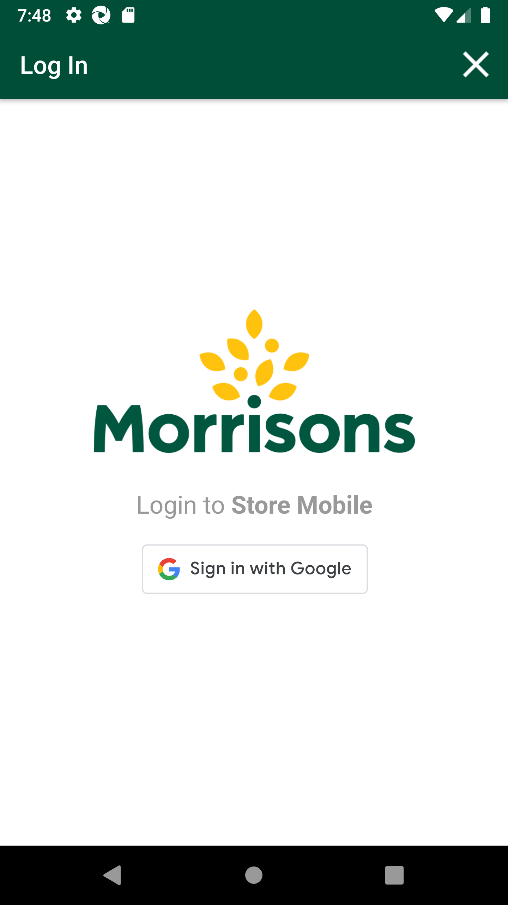
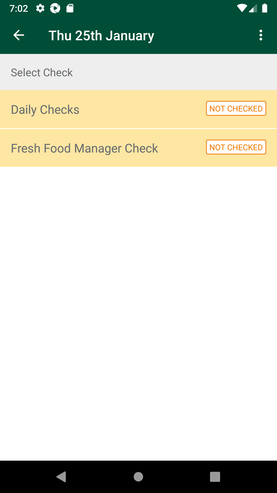
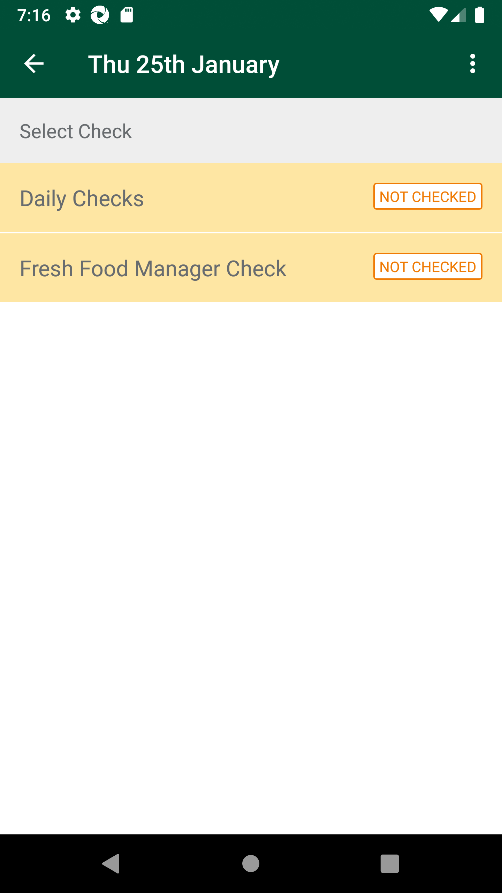
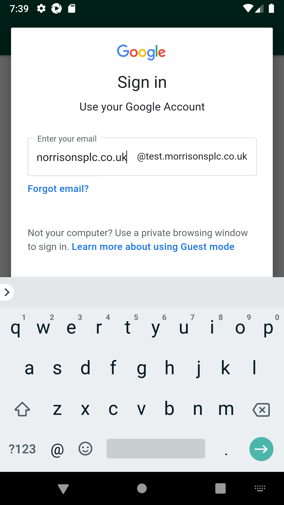

-
Verify Fresh code check scenarios functionality - Afternoon Checks(UAT_60 to UAT_89).
4:48:41 PM / 01:11:22:476 Fail
Verify Fresh code check scenarios functionality - Afternoon Checks(UAT_60 to UAT_89).
01.25.2024 4:48:41 PM 01.25.2024 6:00:04 PM 01:11:22:476 · #test-id=1@NewfccAfternoonCheck @regressionFailExecuting the AWS ECS task with different parametersFailExecuting the AWS ECS task with different parametersGiven The ECS Jobs are triggered with Task "logistics-supplychain-freshscheduleloader-task-sit", containerOverrides "/app/cleanrotate/service/bin/runApp,sit 2023-07-13 2023-07-18 475",ClusterName "nonprod-ECS-ECSCluster-W68V9ZHCS399", LaunchType "EC2", LogGroupName "clg-euw1-sit-logistics-supplychain-cleanrotate-freshscheduleloader-task-001", LogStreamNamePrefix "storewalkcountsprocessor"com.morrisons.common.action.Hook.afterScenario(io.cucumber.java.Scenario)
PassTO CHANGE THE DEVICE TIMINGS AS REQUIREDPassTO CHANGE THE DEVICE TIMINGS AS REQUIREDGiven I send the time "07" and mins "00" and meridiem "pm" and current date in listThen I Change timeThen I Change dateFailSMA-25001_UAT_60_When User navigates to Afternoon Checks then Sub-Menu Status will get displayed as 'Not Checked' and should be able to view list - Critical Check,Fixture,Promotion and WarehouseFailSMA-25001_UAT_60_When User navigates to Afternoon Checks then Sub-Menu Status will get displayed as 'Not Checked' and should be able to view list - Critical Check,Fixture,Promotion and WarehouseWhen I enter Username and Password for SMA Collegue userAnd I click on login button for SMAThen I click on the main menu "Code Checking"Then I click on "Fresh Code Check"Then I click on "Daily Schedule"And I click on Cuurent date ScheduleThen I get "Afternoon Checks" statusAnd I verify "Afternoon Checks" status "Not Checked" is displayed on UIThen I click on "Afternoon Checks"com.morrisons.common.action.Hook.afterScenario(io.cucumber.java.Scenario)
And I verify Critical Check,Fixture,Promotion and Warehouse are displayedStep skippedFailFCC_Phase4_ UAT_02_Verify for Afternoon check seperation between Short Life departments and Long Life departments are displayed.FailFCC_Phase4_ UAT_02_Verify for Afternoon check seperation between Short Life departments and Long Life departments are displayed.When I enter Username and Password for SMA Collegue userAnd I click on login button for SMAThen I click on the main menu "Code Checking"Then I click on "Fresh Code Check"Then I click on "Daily Schedule"And I click on Cuurent date ScheduleThen I click on "Afternoon Checks"com.morrisons.common.action.Hook.afterScenario(io.cucumber.java.Scenario)And I verify Critical Check,Fixture,Promotion and Warehouse are displayedStep skippedThen I click on "Fixture"Step skippedAnd I verify Aisle list is displayedStep skippedThen I click on "Aisle 0"Step skippedAnd I verify corresponding departments are displayedStep skippedAnd I verify seperation between Short Life departments and Long Life departments are displayedStep skippedFailFCC_Phase4_ UAT_03_For Afternoon check Short life departments - In Fixture location "Markdown & Wastage" actions are displayed and "Rotate to Front" action is not displayed.FailFCC_Phase4_ UAT_03_For Afternoon check Short life departments - In Fixture location "Markdown & Wastage" actions are displayed and "Rotate to Front" action is not displayed.When I enter Username and Password for SMA Collegue userAnd I click on login button for SMAThen I click on the main menu "Code Checking"Then I click on "Fresh Code Check"Then I click on "Daily Schedule"And I click on Cuurent date ScheduleThen I click on "Afternoon Checks"com.morrisons.common.action.Hook.afterScenario(io.cucumber.java.Scenario)And I verify Critical Check,Fixture,Promotion and Warehouse are displayedStep skippedThen I click on "Fixture"Step skippedAnd I verify Aisle list is displayedStep skippedThen I click on "Aisle 0"Step skippedAnd I verify corresponding departments are displayedStep skippedThen I click on "060 Chilled Desserts"Step skippedThen I verify Next scan date is displayedStep skippedAnd I click on barcode entry ButtonStep skippedAnd I enter Product Min "106909888"Step skippedAnd I click on action spinnerStep skippedThen Verify "Wastage" action is displayedStep skippedThen Verify "Markdown" action is displayedStep skippedThen Verify "Rotate To Front" action is not displayedStep skippedFailFCC_Phase4_ UAT_04_For Afternoon check Short life departments - Fixture location , select "Past expiry date" and verify only 1 Wastage reason code as "Waste Out of Date" is displayed.FailFCC_Phase4_ UAT_04_For Afternoon check Short life departments - Fixture location , select "Past expiry date" and verify only 1 Wastage reason code as "Waste Out of Date" is displayed.When I enter Username and Password for SMA Collegue userAnd I click on login button for SMAThen I click on the main menu "Code Checking"Then I click on "Fresh Code Check"Then I click on "Daily Schedule"And I click on Cuurent date ScheduleThen I click on "Afternoon Checks"com.morrisons.common.action.Hook.afterScenario(io.cucumber.java.Scenario)And I verify Critical Check,Fixture,Promotion and Warehouse are displayedStep skippedThen I click on "Fixture"Step skippedAnd I verify Aisle list is displayedStep skippedThen I click on "Aisle 0"Step skippedAnd I verify corresponding departments are displayedStep skippedThen I click on "060 Chilled Desserts"Step skippedThen I verify Next scan date is displayedStep skippedAnd I click on barcode entry ButtonStep skippedAnd I enter Product Min "106909888"Step skippedAnd I click on spinner to select one of the action "Wastage"Step skippedAnd I enter markdown "5" for the productStep skippedAnd I click on CalendarStep skippedThen I select next "-2" th dateStep skippedThen I click on Done ButtonStep skippedAnd I click Log ProductStep skippedThen Verify Select Reason Code templateStep skippedThen Verify Wastage reason code "Waste Out of Date" is displayedStep skippedFailFCC_Phase4_ UAT_05_For Afternoon check Short life departments - Fixture location , select "Future expiry date" and verify only 3 Wastage reason code as "Waste Out of Date" ,"Waste Charity" and "Waste Damaged/Fruit & Veg Quality or Condition" are displayed.FailFCC_Phase4_ UAT_05_For Afternoon check Short life departments - Fixture location , select "Future expiry date" and verify only 3 Wastage reason code as "Waste Out of Date" ,"Waste Charity" and "Waste Damaged/Fruit & Veg Quality or Condition" are displayed.When I enter Username and Password for SMA Collegue userAnd I click on login button for SMAThen I click on the main menu "Code Checking"Then I click on "Fresh Code Check"Then I click on "Daily Schedule"And I click on Cuurent date ScheduleThen I click on "Afternoon Checks"com.morrisons.common.action.Hook.afterScenario(io.cucumber.java.Scenario)And I verify Critical Check,Fixture,Promotion and Warehouse are displayedStep skippedThen I click on "Fixture"Step skippedAnd I verify Aisle list is displayedStep skippedThen I click on "Aisle 0"Step skippedAnd I verify corresponding departments are displayedStep skippedThen I click on "060 Chilled Desserts"Step skippedThen I verify Next scan date is displayedStep skippedAnd I click on barcode entry ButtonStep skippedAnd I enter Product Min "106909888"Step skippedAnd I click on spinner to select one of the action "Wastage"Step skippedAnd I enter markdown "5" for the productStep skippedAnd I click on CalendarStep skippedThen I select next "2" th dateStep skippedThen I click on Done ButtonStep skippedAnd I click Log ProductStep skippedThen Verify Select Reason Code templateStep skippedThen Verify Wastage reason code "Waste Damaged/Fruit & Veg Quality or Condition" is displayedStep skippedThen Verify Wastage reason code "Waste Out of Date" is displayedStep skippedThen Verify Wastage reason code "Waste Charity" is displayedStep skippedFailFCC_Phase4_ UAT_8_For Afternoon check Long life departments - In Fixture location "Markdown & Wastage" actions are displayed and "Rotate to Front" action is not displayed.FailFCC_Phase4_ UAT_8_For Afternoon check Long life departments - In Fixture location "Markdown & Wastage" actions are displayed and "Rotate to Front" action is not displayed.When I enter Username and Password for SMA Collegue userAnd I click on login button for SMAThen I click on the main menu "Code Checking"Then I click on "Fresh Code Check"Then I click on "Daily Schedule"And I click on Cuurent date ScheduleThen I click on "Afternoon Checks"com.morrisons.common.action.Hook.afterScenario(io.cucumber.java.Scenario)And I verify Critical Check,Fixture,Promotion and Warehouse are displayedStep skippedThen I click on "Fixture"Step skippedAnd I verify Aisle list is displayedStep skippedThen I click on "Aisle 0"Step skippedAnd I verify corresponding departments are displayedStep skippedThen I click on "065 Dairy"Step skippedThen I verify Next scan date is displayedStep skippedAnd I click on barcode entry ButtonStep skippedAnd I enter Product Min "103034836"Step skippedThen Verify "Markdown" as default action is displayedStep skippedAnd I click on action spinnerStep skippedThen Verify "Wastage" action is displayedStep skippedThen Verify "Markdown" action is displayedStep skippedThen Verify "Rotate To Front" action is not displayedStep skippedFailFCC_Phase4_ UAT_09_For Afternoon check Long life departments - Fixture location , select "Past expiry date" and verify only 1 Wastage reason code as "Waste Out of Date" is displayed.FailFCC_Phase4_ UAT_09_For Afternoon check Long life departments - Fixture location , select "Past expiry date" and verify only 1 Wastage reason code as "Waste Out of Date" is displayed.When I enter Username and Password for SMA Collegue userAnd I click on login button for SMAThen I click on the main menu "Code Checking"Then I click on "Fresh Code Check"Then I click on "Daily Schedule"And I click on Cuurent date ScheduleThen I click on "Afternoon Checks"com.morrisons.common.action.Hook.afterScenario(io.cucumber.java.Scenario)And I verify Critical Check,Fixture,Promotion and Warehouse are displayedStep skippedThen I click on "Fixture"Step skippedAnd I verify Aisle list is displayedStep skippedThen I click on "Aisle 0"Step skippedAnd I verify corresponding departments are displayedStep skippedThen I click on "065 Dairy"Step skippedThen I verify Next scan date is displayedStep skippedAnd I click on barcode entry ButtonStep skippedAnd I enter Product Min "103034836"Step skippedAnd I click on spinner to select one of the action "Wastage"Step skippedAnd I enter markdown "5" for the productStep skippedAnd I click on CalendarStep skippedThen I select next "-2" th dateStep skippedThen I click on Done ButtonStep skippedAnd I click Log ProductStep skippedThen Verify Select Reason Code templateStep skippedThen Verify Wastage reason code "Waste Out of Date" is displayedStep skippedFailFCC_Phase4_ UAT_10_For Afternoon check Long life departments - Fixture location , select "Future expiry date" and verify only 3 Wastage reason code as "Waste Out of Date" ,"Waste Charity" and "Waste Damaged/Fruit & Veg Quality or Condition" are displayed.FailFCC_Phase4_ UAT_10_For Afternoon check Long life departments - Fixture location , select "Future expiry date" and verify only 3 Wastage reason code as "Waste Out of Date" ,"Waste Charity" and "Waste Damaged/Fruit & Veg Quality or Condition" are displayed.When I enter Username and Password for SMA Collegue userAnd I click on login button for SMAThen I click on the main menu "Code Checking"Then I click on "Fresh Code Check"Then I click on "Daily Schedule"And I click on Cuurent date ScheduleThen I click on "Afternoon Checks"com.morrisons.common.action.Hook.afterScenario(io.cucumber.java.Scenario)And I verify Critical Check,Fixture,Promotion and Warehouse are displayedStep skippedThen I click on "Fixture"Step skippedAnd I verify Aisle list is displayedStep skippedThen I click on "Aisle 0"Step skippedAnd I verify corresponding departments are displayedStep skippedThen I click on "065 Dairy"Step skippedThen I verify Next scan date is displayedStep skippedAnd I click on barcode entry ButtonStep skippedAnd I enter Product Min "103034836"Step skippedAnd I click on spinner to select one of the action "Wastage"Step skippedAnd I enter markdown "5" for the productStep skippedAnd I click on CalendarStep skippedThen I select next "2" th dateStep skippedThen I click on Done ButtonStep skippedAnd I click Log ProductStep skippedThen Verify Select Reason Code templateStep skippedThen Verify Wastage reason code "Waste Damaged/Fruit & Veg Quality or Condition" is displayedStep skippedThen Verify Wastage reason code "Waste Out of Date" is displayedStep skippedThen Verify Wastage reason code "Waste Charity" is displayedStep skippedFailSMA-25001_UAT_63_When User navigates to Afternoon Checks and scanned item at fixture location from any Scheduled department/class/Subclass then Next scan date is displayed on item scan screen and after scanning a product user is able to perform action as MarkdownFailSMA-25001_UAT_63_When User navigates to Afternoon Checks and scanned item at fixture location from any Scheduled department/class/Subclass then Next scan date is displayed on item scan screen and after scanning a product user is able to perform action as MarkdownWhen I enter Username and Password for SMA Collegue userAnd I click on login button for SMAThen I click on the main menu "Code Checking"Then I click on "Fresh Code Check"Then I click on "Daily Schedule"And I click on Cuurent date ScheduleThen I click on "Afternoon Checks"com.morrisons.common.action.Hook.afterScenario(io.cucumber.java.Scenario)And I verify Critical Check,Fixture,Promotion and Warehouse are displayedStep skippedThen I click on "Fixture"Step skippedAnd I verify Aisle list is displayedStep skippedThen I click on "Aisle 0"Step skippedAnd I verify corresponding departments are displayedStep skippedThen I click on "065 Dairy"Step skippedAnd I click on barcode entry ButtonStep skippedAnd I enter Product Min "103034836"Step skippedAnd I click on spinner to select one of the action "Markdown"Step skippedAnd I enter markdown "3" for the productStep skippedThen I click on date picker and select expiry dateStep skippedThen I click on Done ButtonStep skippedAnd I click on plus Log product button on Product detail pageStep skippedThen I click on No Printer AvailableStep skippedThen I click on Get PriceStep skippedThen I click on Add to Print QueueeStep skippedAnd I click on back buttonStep skippedAnd I Verify Scanned itemm "103034836" is visible on view listStep skippedAnd I Verify for Scanned itemm "103034836" action performed as "Markdowns" is visible on view listStep skippedFailSMA-25001_UAT_64_1_When User navigates to Afternoon Checks for Action as Wastage and user scan and select action=Wastage and expiry date as back dated(current date -1) then user should be able to select below wastage reason codes -> Waste Out of date.FailSMA-25001_UAT_64_1_When User navigates to Afternoon Checks for Action as Wastage and user scan and select action=Wastage and expiry date as back dated(current date -1) then user should be able to select below wastage reason codes -> Waste Out of date.When I enter Username and Password for SMA Collegue userAnd I click on login button for SMAThen I click on the main menu "Code Checking"Then I click on "Fresh Code Check"Then I click on "Daily Schedule"And I click on Cuurent date ScheduleThen I click on "Afternoon Checks"com.morrisons.common.action.Hook.afterScenario(io.cucumber.java.Scenario)
And I verify Critical Check,Fixture,Promotion and Warehouse are displayedStep skippedThen I click on "Fixture"Step skippedAnd I verify Aisle list is displayedStep skippedThen I click on "Aisle 0"Step skippedAnd I verify corresponding departments are displayedStep skippedThen I click on "065 Dairy"Step skippedAnd I click on barcode entry ButtonStep skippedAnd I enter Product Min "103034836"Step skippedAnd I click on spinner to select one of the action "Wastage"Step skippedAnd I enter markdown "2" for the productStep skippedAnd I click on CalendarStep skippedThen I select next "-1" th dateStep skippedThen I click on Done ButtonStep skippedAnd I click on plus Log product button on Product detail pageStep skippedThen Verify Select Reason Code templateStep skippedAnd I verify only One wastage code options are dispayedStep skippedThen I click on alert to select one of the option "Waste Out of Date"Step skippedAnd I click on Confirm buttonStep skippedAnd I Verify Scanned itemm "103034836" is visible on view listStep skippedAnd I Verify for Scanned itemm "103034836" action performed as "Wasted" is visible on view listStep skippedFailSMA-25001_UAT_64_2_When User navigates to Afternoon Checks for Action as Wastage and user scan and select action=Wastage and expiry date as back dated(current date -2) then user should be able to select below wastage reason codes -> Waste Damaged/Fruit & Veg Quality or Condition.FailSMA-25001_UAT_64_2_When User navigates to Afternoon Checks for Action as Wastage and user scan and select action=Wastage and expiry date as back dated(current date -2) then user should be able to select below wastage reason codes -> Waste Damaged/Fruit & Veg Quality or Condition.When I enter Username and Password for SMA Collegue userAnd I click on login button for SMAThen I click on the main menu "Code Checking"Then I click on "Fresh Code Check"Then I click on "Daily Schedule"And I click on Cuurent date ScheduleThen I click on "Afternoon Checks"com.morrisons.common.action.Hook.afterScenario(io.cucumber.java.Scenario)And I verify Critical Check,Fixture,Promotion and Warehouse are displayedStep skippedThen I click on "Fixture"Step skippedAnd I verify Aisle list is displayedStep skippedThen I click on "Aisle 0"Step skippedAnd I verify corresponding departments are displayedStep skippedThen I click on "065 Dairy"Step skippedAnd I click on barcode entry ButtonStep skippedAnd I enter Product Min "103034836"Step skippedAnd I click on spinner to select one of the action "Wastage"Step skippedAnd I enter markdown "2" for the productStep skippedAnd I click on CalendarStep skippedThen I select next "-2" th dateStep skippedThen I click on Done ButtonStep skippedAnd I click on plus Log product button on Product detail pageStep skippedThen Verify Select Reason Code templateStep skippedAnd I verify only One wastage code options are dispayedStep skippedThen I click on alert to select one of the option "Waste Out of Date"Step skippedAnd I click on Confirm buttonStep skippedAnd I Verify Scanned itemm "103034836" is visible on view listStep skippedAnd I Verify for Scanned itemm "103034836" action performed as "Wasted" is visible on view listStep skippedFailSMA-25001_UAT_65_1_When User navigates to Afternoon Checks for Action as Wastage and user scan and select action=Wastage and expiry date as current\future dated(current date +1) then user should be able to select below wastage reason codes -> Waste Charity.FailSMA-25001_UAT_65_1_When User navigates to Afternoon Checks for Action as Wastage and user scan and select action=Wastage and expiry date as current\future dated(current date +1) then user should be able to select below wastage reason codes -> Waste Charity.When I enter Username and Password for SMA Collegue userAnd I click on login button for SMAThen I click on the main menu "Code Checking"Then I click on "Fresh Code Check"Then I click on "Daily Schedule"And I click on Cuurent date ScheduleThen I click on "Afternoon Checks"com.morrisons.common.action.Hook.afterScenario(io.cucumber.java.Scenario)And I verify Critical Check,Fixture,Promotion and Warehouse are displayedStep skippedThen I click on "Fixture"Step skippedAnd I verify Aisle list is displayedStep skippedThen I click on "Aisle 0"Step skippedAnd I verify corresponding departments are displayedStep skippedThen I click on "065 Dairy"Step skippedAnd I click on barcode entry ButtonStep skippedAnd I enter Product Min "103034836"Step skippedAnd I click on spinner to select one of the action "Wastage"Step skippedAnd I enter markdown "2" for the productStep skippedAnd I click on CalendarStep skippedThen I select next "1" th dateStep skippedThen I click on Done ButtonStep skippedAnd I click on plus Log product button on Product detail pageStep skippedThen Verify Select Reason Code templateStep skippedAnd I verify Three wastage code options are dispayedStep skippedThen I click on alert to select one of the option "Waste Charity"Step skippedAnd I click on Confirm buttonStep skippedAnd I Verify Scanned itemm "103034836" is visible on view listStep skippedAnd I Verify for Scanned itemm "103034836" action performed as "Wasted" is visible on view listStep skippedFailSMA-25001_UAT_65_2_When User navigates to Afternoon Checks for Action as Wastage and user scan and select action=Wastage and expiry date as current\future dated(current date +1) then user should be able to select below wastage reason codes ->Waste Damaged/Fruit & Veg Quality or Condition.FailSMA-25001_UAT_65_2_When User navigates to Afternoon Checks for Action as Wastage and user scan and select action=Wastage and expiry date as current\future dated(current date +1) then user should be able to select below wastage reason codes ->Waste Damaged/Fruit & Veg Quality or Condition.When I enter Username and Password for SMA Collegue userAnd I click on login button for SMAThen I click on the main menu "Code Checking"Then I click on "Fresh Code Check"Then I click on "Daily Schedule"And I click on Cuurent date ScheduleThen I click on "Afternoon Checks"com.morrisons.common.action.Hook.afterScenario(io.cucumber.java.Scenario)And I verify Critical Check,Fixture,Promotion and Warehouse are displayedStep skippedThen I click on "Fixture"Step skippedAnd I verify Aisle list is displayedStep skippedThen I click on "Aisle 0"Step skippedAnd I verify corresponding departments are displayedStep skippedThen I click on "065 Dairy"Step skippedAnd I click on barcode entry ButtonStep skippedAnd I enter Product Min "103034836"Step skippedAnd I click on spinner to select one of the action "Wastage"Step skippedAnd I enter markdown "2" for the productStep skippedAnd I click on CalendarStep skippedThen I select next "1" th dateStep skippedThen I click on Done ButtonStep skippedAnd I click on plus Log product button on Product detail pageStep skippedThen Verify Select Reason Code templateStep skippedAnd I verify Three wastage code options are dispayedStep skippedThen I click on alert to select one of the option "Waste Damaged/Fruit & Veg Quality or Condition"Step skippedAnd I click on Confirm buttonStep skippedAnd I Verify Scanned itemm "103034836" is visible on view listStep skippedAnd I Verify for Scanned itemm "103034836" action performed as "Wasted" is visible on view listStep skippedFailSMA-25001_UAT_65_3_When User navigates to Afternoon Checks for Action as Wastage and user scan and select action=Wastage and expiry date as current\future dated(current date +1) then user should be able to select below wastage reason codes -> Waste Out of date.FailSMA-25001_UAT_65_3_When User navigates to Afternoon Checks for Action as Wastage and user scan and select action=Wastage and expiry date as current\future dated(current date +1) then user should be able to select below wastage reason codes -> Waste Out of date.When I enter Username and Password for SMA Collegue userAnd I click on login button for SMAThen I click on the main menu "Code Checking"Then I click on "Fresh Code Check"Then I click on "Daily Schedule"And I click on Cuurent date ScheduleThen I click on "Afternoon Checks"com.morrisons.common.action.Hook.afterScenario(io.cucumber.java.Scenario)And I verify Critical Check,Fixture,Promotion and Warehouse are displayedStep skippedThen I click on "Fixture"Step skippedAnd I verify Aisle list is displayedStep skippedThen I click on "Aisle 0"Step skippedAnd I verify corresponding departments are displayedStep skippedThen I click on "065 Dairy"Step skippedAnd I click on barcode entry ButtonStep skippedAnd I enter Product Min "103034836"Step skippedAnd I click on spinner to select one of the action "Wastage"Step skippedAnd I enter markdown "2" for the productStep skippedAnd I click on CalendarStep skippedThen I select next "1" th dateStep skippedThen I click on Done ButtonStep skippedAnd I click on plus Log product button on Product detail pageStep skippedThen Verify Select Reason Code templateStep skippedAnd I verify Three wastage code options are dispayedStep skippedThen I click on alert to select one of the option "Waste Out of Date"Step skippedAnd I click on Confirm buttonStep skippedAnd I Verify Scanned itemm "103034836" is visible on view listStep skippedAnd I Verify for Scanned itemm "103034836" action performed as "Wasted" is visible on view listStep skippedFailSMA-25001_UAT_65_4_When User navigates to Afternoon Checks for Action as Wastage and user scan and select action=Wastage and expiry date as current\future dated(current date +1) then user should be able to select below wastage reason codes -> Waste Damaged/Fruit & Veg Quality or Condition.FailSMA-25001_UAT_65_4_When User navigates to Afternoon Checks for Action as Wastage and user scan and select action=Wastage and expiry date as current\future dated(current date +1) then user should be able to select below wastage reason codes -> Waste Damaged/Fruit & Veg Quality or Condition.When I enter Username and Password for SMA Collegue userAnd I click on login button for SMAThen I click on the main menu "Code Checking"Then I click on "Fresh Code Check"Then I click on "Daily Schedule"And I click on Cuurent date ScheduleThen I click on "Afternoon Checks"com.morrisons.common.action.Hook.afterScenario(io.cucumber.java.Scenario)And I verify Critical Check,Fixture,Promotion and Warehouse are displayedStep skippedThen I click on "Fixture"Step skippedAnd I verify Aisle list is displayedStep skippedThen I click on "Aisle 0"Step skippedAnd I verify corresponding departments are displayedStep skippedThen I click on "065 Dairy"Step skippedAnd I click on barcode entry ButtonStep skippedAnd I enter Product Min "103034836"Step skippedAnd I click on spinner to select one of the action "Wastage"Step skippedAnd I enter markdown "2" for the productStep skippedAnd I click on CalendarStep skippedThen I select next "1" th dateStep skippedThen I click on Done ButtonStep skippedAnd I click on plus Log product button on Product detail pageStep skippedThen Verify Select Reason Code templateStep skippedAnd I verify Three wastage code options are dispayedStep skippedThen I click on alert to select one of the option "Waste Damaged/Fruit & Veg Quality or Condition"Step skippedAnd I click on Confirm buttonStep skippedAnd I Verify Scanned itemm "103034836" is visible on view listStep skippedAnd I Verify for Scanned itemm "103034836" action performed as "Wasted" is visible on view listStep skippedFailSMA-25001_UAT_66_2_When User navigates to fixture location under Afternoon Checks and user wants to delete product from the view list of scheduled department then User should be able to delete the products actioned as Markdown and the deleted item will get disappear from the list of scanned items.FailSMA-25001_UAT_66_2_When User navigates to fixture location under Afternoon Checks and user wants to delete product from the view list of scheduled department then User should be able to delete the products actioned as Markdown and the deleted item will get disappear from the list of scanned items.When I enter Username and Password for SMA Collegue userAnd I click on login button for SMAThen I click on the main menu "Code Checking"Then I click on "Fresh Code Check"Then I click on "Daily Schedule"And I click on Cuurent date ScheduleThen I click on "Afternoon Checks"com.morrisons.common.action.Hook.afterScenario(io.cucumber.java.Scenario)And I verify Critical Check,Fixture,Promotion and Warehouse are displayedStep skippedThen I click on "Fixture"Step skippedAnd I verify Aisle list is displayedStep skippedThen I click on "Aisle 0"Step skippedAnd I verify corresponding departments are displayedStep skippedThen I click on "065 Dairy"Step skippedAnd I click on barcode entry ButtonStep skippedAnd I enter Product Min "103034836"Step skippedAnd I click on spinner to select one of the action "Markdown"Step skippedAnd I enter markdown "2" for the productStep skippedThen I click on date picker and select expiry dateStep skippedThen I click on Done ButtonStep skippedAnd I click on plus Log product button on Product detail pageStep skippedThen I click on No Printer AvailableStep skippedThen I click on Get PriceStep skippedThen I click on Add to Print QueueeStep skippedAnd I click on back buttonStep skippedAnd I Verify Scanned itemm "103034836" is visible on view listStep skippedAnd I Verify for Scanned itemm "103034836" action performed as "Markdowns" is visible on view listStep skippedThen I click on View list of expiring productsStep skippedAnd I Swipe leftStep skippedThen I verify Delete icon is EnabledStep skippedThen I Delete the productStep skippedFailSMA-25001_UAT_66_3_When User navigates to fixture location under Afternoon Checks and scan the product and marked action as Wastage. And verify Products which are actioned as Wastage cannot be deleted.FailSMA-25001_UAT_66_3_When User navigates to fixture location under Afternoon Checks and scan the product and marked action as Wastage. And verify Products which are actioned as Wastage cannot be deleted.When I enter Username and Password for SMA Collegue userAnd I click on login button for SMAThen I click on the main menu "Code Checking"Then I click on "Fresh Code Check"Then I click on "Daily Schedule"And I click on Cuurent date ScheduleThen I click on "Afternoon Checks"com.morrisons.common.action.Hook.afterScenario(io.cucumber.java.Scenario)And I verify Critical Check,Fixture,Promotion and Warehouse are displayedStep skippedThen I click on "Fixture"Step skippedAnd I verify Aisle list is displayedStep skippedThen I click on "Aisle 0"Step skippedAnd I verify corresponding departments are displayedStep skippedThen I click on "065 Dairy"Step skippedAnd I click on barcode entry ButtonStep skippedAnd I enter Product Min "103034836"Step skippedAnd I click on spinner to select one of the action "Wastage"Step skippedAnd I enter markdown "2" for the productStep skippedThen I click on date picker and select expiry dateStep skippedThen I click on Done ButtonStep skippedAnd I click on plus Log product button on Product detail pageStep skippedThen Verify Select Reason Code templateStep skippedThen I click on alert to select one of the option "Waste Damaged/Fruit & Veg Quality or Condition"Step skippedAnd I click on Confirm buttonStep skippedAnd I Verify Scanned itemm "103034836" is visible on view listStep skippedAnd I Verify for Scanned itemm "103034836" action performed as "Wasted" is visible on view listStep skippedThen I click on View list of expiring productsStep skippedAnd I Swipe leftStep skippedThen I verify Delete icon is DisabledStep skippedThen Verify product is not able to deleteStep skippedFailSMA-25001_UAT_67_1_When User navigates to department/class/subclass of Afternoon Checks and User clicks on "Complete Code Check" button then the app will display department/class/subclass status as 'Completed' with Counts of Markdown, Wastage and Rotation Rating(as Average/Good/Poor). Also displays Completed by XXXX, Date and time.FailSMA-25001_UAT_67_1_When User navigates to department/class/subclass of Afternoon Checks and User clicks on "Complete Code Check" button then the app will display department/class/subclass status as 'Completed' with Counts of Markdown, Wastage and Rotation Rating(as Average/Good/Poor). Also displays Completed by XXXX, Date and time.When I enter Username and Password for SMA Collegue userAnd I click on login button for SMAThen I click on the main menu "Code Checking"Then I click on "Fresh Code Check"Then I click on "Daily Schedule"And I click on Cuurent date ScheduleThen I click on "Afternoon Checks"com.morrisons.common.action.Hook.afterScenario(io.cucumber.java.Scenario)And I verify Critical Check,Fixture,Promotion and Warehouse are displayedStep skippedThen I click on "Fixture"Step skippedAnd I verify Aisle list is displayedStep skippedThen I click on "Aisle 0"Step skippedAnd I verify corresponding departments are displayedStep skippedThen I click on "065 Dairy"Step skippedAnd I click on barcode entry ButtonStep skippedAnd I enter Product Min "103034836"Step skippedAnd I click on spinner to select one of the action "Markdown"Step skippedAnd I enter markdown "2" for the productStep skippedThen I click on date picker and select expiry dateStep skippedThen I click on Done ButtonStep skippedAnd I click on plus Log product button on Product detail pageStep skippedThen I click on No Printer AvailableStep skippedThen I click on Get PriceStep skippedThen I click on Add to Print QueueeStep skippedAnd I click on back buttonStep skippedAnd I Verify Scanned itemm "103034836" is visible on view listStep skippedAnd I Verify for Scanned itemm "103034836" action performed as "Markdowns" is visible on view listStep skippedThen I click on View list of expiring productsStep skippedAnd I verify Complete Code Check button is displayedStep skippedThen I click on Complete Code Check buttonStep skippedAnd I verify Rotation ratings page is displayedStep skippedThen I select rating option as "Good"Step skippedAnd I verify Department is Completed for product "065 Dairy"Step skippedThen I click on "065 Dairy"Step skippedAnd I verify Reopen Complete Code Check button is displayedStep skippedThen I click on Reopen Complete Code Check buttonStep skippedAnd I verify on Reopen Complete Code Check alertStep skippedThen I click on Yes option on Reopen Complete Code Check alertStep skippedFailSMA-25001_UAT_67_2_When User navigates to department/class/subclass of Afternoon Checks and User clicks on "Complete Code Check" button then the app will display department/class/subclass status as 'Completed' with Counts of Markdown, Wastage and Rotation Rating(as Average/Good/Poor). Also displays Completed by XXXX, Date and time.FailSMA-25001_UAT_67_2_When User navigates to department/class/subclass of Afternoon Checks and User clicks on "Complete Code Check" button then the app will display department/class/subclass status as 'Completed' with Counts of Markdown, Wastage and Rotation Rating(as Average/Good/Poor). Also displays Completed by XXXX, Date and time.When I enter Username and Password for SMA Collegue userAnd I click on login button for SMAThen I click on the main menu "Code Checking"Then I click on "Fresh Code Check"Then I click on "Daily Schedule"And I click on Cuurent date ScheduleThen I click on "Afternoon Checks"com.morrisons.common.action.Hook.afterScenario(io.cucumber.java.Scenario)And I verify Critical Check,Fixture,Promotion and Warehouse are displayedStep skippedThen I click on "Fixture"Step skippedAnd I verify Aisle list is displayedStep skippedThen I click on "Aisle 0"Step skippedAnd I verify corresponding departments are displayedStep skippedThen I click on "065 Dairy"Step skippedAnd I click on barcode entry ButtonStep skippedAnd I enter Product Min "103034836"Step skippedAnd I click on spinner to select one of the action "Wastage"Step skippedAnd I enter markdown "2" for the productStep skippedAnd I click on CalendarStep skippedThen I select next "2" th dateStep skippedThen I click on Done ButtonStep skippedAnd I click on plus Log product button on Product detail pageStep skippedThen Verify Select Reason Code templateStep skippedThen I click on alert to select one of the option "Waste Damaged/Fruit & Veg Quality or Condition"Step skippedAnd I click on Confirm buttonStep skippedAnd I Verify Scanned itemm "103034836" is visible on view listStep skippedAnd I Verify for Scanned itemm "103034836" action performed as "Wasted" is visible on view listStep skippedThen I click on View list of expiring productsStep skippedAnd I verify Complete Code Check button is displayedStep skippedThen I click on Complete Code Check buttonStep skippedAnd I verify Rotation ratings page is displayedStep skippedThen I select rating option as "Good"Step skippedAnd I verify Department is Completed for product "065 Dairy"Step skippedThen I click on "065 Dairy"Step skippedAnd I verify Reopen Complete Code Check button is displayedStep skippedThen I click on Reopen Complete Code Check buttonStep skippedAnd I verify on Reopen Complete Code Check alertStep skippedThen I click on Yes option on Reopen Complete Code Check alertStep skippedFailSMA-25001_UAT_67_3_When User navigates to department/class/subclass of Afternoon Checks and User clicks on "Complete Code Check" button then the app will display department/class/subclass status as 'Completed' with Counts of Markdown, Wastage and Rotation Rating(as Average/Good/Poor). Also displays Completed by XXXX, Date and time.FailSMA-25001_UAT_67_3_When User navigates to department/class/subclass of Afternoon Checks and User clicks on "Complete Code Check" button then the app will display department/class/subclass status as 'Completed' with Counts of Markdown, Wastage and Rotation Rating(as Average/Good/Poor). Also displays Completed by XXXX, Date and time.When I enter Username and Password for SMA Collegue userAnd I click on login button for SMAThen I click on the main menu "Code Checking"Then I click on "Fresh Code Check"Then I click on "Daily Schedule"And I click on Cuurent date ScheduleThen I click on "Afternoon Checks"com.morrisons.common.action.Hook.afterScenario(io.cucumber.java.Scenario)And I verify Critical Check,Fixture,Promotion and Warehouse are displayedStep skippedThen I click on "Fixture"Step skippedAnd I verify Aisle list is displayedStep skippedThen I click on "Aisle 0"Step skippedAnd I verify corresponding departments are displayedStep skippedThen I click on "065 Dairy"Step skippedAnd I click on barcode entry ButtonStep skippedAnd I enter Product Min "103034836"Step skippedAnd I click on spinner to select one of the action "Markdown"Step skippedAnd I enter markdown "2" for the productStep skippedThen I click on date picker and select expiry dateStep skippedThen I click on Done ButtonStep skippedAnd I click on plus Log product button on Product detail pageStep skippedThen I click on No Printer AvailableStep skippedThen I click on Get PriceStep skippedThen I click on Add to Print QueueeStep skippedAnd I click on back buttonStep skippedAnd I Verify Scanned itemm "103034836" is visible on view listStep skippedAnd I Verify for Scanned itemm "103034836" action performed as "Markdowns" is visible on view listStep skippedThen I click on View list of expiring productsStep skippedAnd I verify Complete Code Check button is displayedStep skippedThen I click on Complete Code Check buttonStep skippedAnd I verify Rotation ratings page is displayedStep skippedThen I select rating option as "Good"Step skippedAnd I verify Department is Completed for product "065 Dairy"Step skippedThen I click on "065 Dairy"Step skippedAnd I verify Reopen Complete Code Check button is displayedStep skippedThen I click on Reopen Complete Code Check buttonStep skippedAnd I verify on Reopen Complete Code Check alertStep skippedThen I click on Yes option on Reopen Complete Code Check alertStep skippedFailSMA-25001_UAT_70_When User navigates to Fixture screen under Afternoon Checks, after reopening respective department and performs delete operation on scanned items actioned as Markdown by swiping left on the product. Then, items must disappear from the list of Scanned items.FailSMA-25001_UAT_70_When User navigates to Fixture screen under Afternoon Checks, after reopening respective department and performs delete operation on scanned items actioned as Markdown by swiping left on the product. Then, items must disappear from the list of Scanned items.When I enter Username and Password for SMA Collegue userAnd I click on login button for SMAThen I click on the main menu "Code Checking"Then I click on "Fresh Code Check"Then I click on "Daily Schedule"And I click on Cuurent date ScheduleThen I click on "Afternoon Checks"com.morrisons.common.action.Hook.afterScenario(io.cucumber.java.Scenario)And I verify Critical Check,Fixture,Promotion and Warehouse are displayedStep skippedThen I click on "Fixture"Step skippedAnd I verify Aisle list is displayedStep skippedThen I click on "Aisle 0"Step skippedAnd I verify corresponding departments are displayedStep skippedThen I click on "065 Dairy"Step skippedAnd I click on barcode entry ButtonStep skippedAnd I enter Product Min "103034836"Step skippedAnd I click on spinner to select one of the action "Markdown"Step skippedAnd I enter markdown "2" for the productStep skippedThen I click on date picker and select expiry dateStep skippedThen I click on Done ButtonStep skippedAnd I click on plus Log product button on Product detail pageStep skippedThen I click on No Printer AvailableStep skippedThen I click on Get PriceStep skippedThen I click on Add to Print QueueeStep skippedAnd I click on back buttonStep skippedAnd I Verify Scanned itemm "103034836" is visible on view listStep skippedAnd I Verify for Scanned itemm "103034836" action performed as "Markdowns" is visible on view listStep skippedThen I click on View list of expiring productsStep skippedAnd I verify Complete Code Check button is displayedStep skippedThen I click on Complete Code Check buttonStep skippedAnd I verify Rotation ratings page is displayedStep skippedThen I select rating option as "Good"Step skippedAnd I verify Department is Completed for product "065 Dairy"Step skippedThen I click on "065 Dairy"Step skippedAnd I verify Reopen Complete Code Check button is displayedStep skippedThen I click on Reopen Complete Code Check buttonStep skippedAnd I verify on Reopen Complete Code Check alertStep skippedThen I click on Yes option on Reopen Complete Code Check alertStep skippedThen I click on View list of expiring productsStep skippedAnd I Swipe leftStep skippedThen I verify Delete icon is DisabledStep skippedThen Verify product is not able to deleteStep skippedFailSMA-25001_UAT_71_When User navigates to Fixture screen under Afternoon Checks and selected expiry date is 'Invalid' in Schedule.Then prompt will appear with Message and 'OK' button.FailSMA-25001_UAT_71_When User navigates to Fixture screen under Afternoon Checks and selected expiry date is 'Invalid' in Schedule.Then prompt will appear with Message and 'OK' button.When I enter Username and Password for SMA Collegue userAnd I click on login button for SMAThen I click on the main menu "Code Checking"Then I click on "Fresh Code Check"Then I click on "Daily Schedule"And I click on Cuurent date ScheduleThen I click on "Afternoon Checks"com.morrisons.common.action.Hook.afterScenario(io.cucumber.java.Scenario)And I verify Critical Check,Fixture,Promotion and Warehouse are displayedStep skippedThen I click on "Fixture"Step skippedAnd I verify Aisle list is displayedStep skippedThen I click on "Aisle 0"Step skippedAnd I verify corresponding departments are displayedStep skippedThen I click on "065 Dairy"Step skippedAnd I click on barcode entry ButtonStep skippedAnd I enter Product Min "103034836"Step skippedAnd I click on spinner to select one of the action "Markdown"Step skippedAnd I enter markdown "2" for the productStep skippedAnd I click on CalendarStep skippedThen I select next "4" th dateStep skippedThen I click on Done ButtonStep skippedAnd I click on plus Log product button on Product detail pageStep skippedThen I verify "Please enter a valid date for this product, Inline with the Scheduled Check" is displayedStep skippedFailSMA-25001_UAT_72_When User navigates to Fixture location under Afternoon Checks and user scans a Ambient product in one of the Schedule department.Then, prompt will appear with Continue Button ,user clicks on 'Continue' button then should remain on the same department screen.FailSMA-25001_UAT_72_When User navigates to Fixture location under Afternoon Checks and user scans a Ambient product in one of the Schedule department.Then, prompt will appear with Continue Button ,user clicks on 'Continue' button then should remain on the same department screen.When I enter Username and Password for SMA Manager userAnd I click on login button for SMAThen I click on the main menu "Code Checking"Then I click on "Fresh Code Check"Then I click on "Daily Schedule"And I click on Cuurent date ScheduleThen I click on "Afternoon Checks"com.morrisons.common.action.Hook.afterScenario(io.cucumber.java.Scenario)Then I click on "Fixture"Step skippedAnd I verify Aisle list is displayedStep skippedThen I click on "Aisle 0"Step skippedAnd I verify corresponding departments are displayedStep skippedThen I click on "065 Dairy"Step skippedAnd I click on barcode entry ButtonStep skippedAnd I enter Product Min "100101124"Step skippedThen I verify after scanning Ambient product "This product is not part of Fresh Foods.Please action separately" message is displayedStep skippedFailSMA-25034_UAT_73_When User navigates to Afternoon Checks and scan non-Ranged product in fixture location from any Scheduled department/class/Subclass. Log product with action as Rotate to front, click on continue button and enter location details and log the product.FailSMA-25034_UAT_73_When User navigates to Afternoon Checks and scan non-Ranged product in fixture location from any Scheduled department/class/Subclass. Log product with action as Rotate to front, click on continue button and enter location details and log the product.When I enter Username and Password for SMA Manager userAnd I click on login button for SMAThen I click on the main menu "Code Checking"Then I click on "Fresh Code Check"Then I click on "Daily Schedule"And I click on Cuurent date ScheduleThen I click on "Afternoon Checks"com.morrisons.common.action.Hook.afterScenario(io.cucumber.java.Scenario)Then I click on "Fixture"Step skippedAnd I verify Aisle list is displayedStep skippedThen I click on "Aisle 0"Step skippedAnd I verify corresponding departments are displayedStep skippedThen I click on "065 Dairy"Step skippedAnd I click on barcode entry ButtonStep skippedAnd I enter Product Min "110226609"Step skippedAnd I click on spinner to select one of the action "Markdown"Step skippedAnd I enter markdown "2" for the productStep skippedAnd I click on CalendarStep skippedThen I select next "1" th dateStep skippedThen I click on Done ButtonStep skippedAnd I click on plus Log product button on Product detail pageStep skippedAnd I verify page is navigated to location pageStep skippedThen I enter location details and click on continueStep skippedAnd I click on Back buttonStep skippedAnd I click on Back buttonStep skippedAnd I click on Back buttonStep skippedThen I click on "Critical Checks"Step skippedThen I Verify Scanned itemm "110226609" is visible on view listStep skippedFailSMA-25034_UAT_74_2_When User navigates to critical check screen under Afternoon Checks and user performs delete operation on products actioned as (Markdown). Then,the respective product must disappear from the list of critical check items and product count in critical check sub-menu should get updated.FailSMA-25034_UAT_74_2_When User navigates to critical check screen under Afternoon Checks and user performs delete operation on products actioned as (Markdown). Then,the respective product must disappear from the list of critical check items and product count in critical check sub-menu should get updated.When I enter Username and Password for SMA Manager usercom.morrisons.common.action.Hook.afterScenario(io.cucumber.java.Scenario)And I click on login button for SMAStep skippedThen I click on the main menu "Code Checking"Step skippedThen I click on "Fresh Code Check"Step skippedThen I click on "Daily Schedule"Step skippedAnd I click on Cuurent date ScheduleStep skippedThen I click on "Afternoon Checks"Step skippedThen I click on "Fixture"Step skippedAnd I verify Aisle list is displayedStep skippedThen I click on "Aisle 0"Step skippedAnd I verify corresponding departments are displayedStep skippedThen I click on "065 Dairy"Step skippedAnd I click on barcode entry ButtonStep skippedAnd I enter Product Min "108683051"Step skippedAnd I click on spinner to select one of the action "Markdown"Step skippedAnd I enter markdown "2" for the productStep skippedThen I click on date picker and select expiry dateStep skippedThen I click on Done ButtonStep skippedAnd I click on plus Log product button on Product detail pageStep skippedThen I click on No Printer AvailableStep skippedAnd I click on Get PriceStep skippedThen I click on Add to Print QueueeStep skippedAnd I click on Back buttonStep skippedAnd I click on Back buttonStep skippedAnd I click on Back buttonStep skippedAnd I click on Back buttonStep skippedThen I click on "Critical Checks"Step skippedThen I Verify Scanned itemm "108683051" is visible on view listStep skippedAnd I Swipe leftStep skippedAnd I Delete the productStep skippedFailSMA-25034_UAT_75_When User navigates to Critical check screen under Afternoon Checks and user clicks on "Complete Code Check" button. Then, Critical check section will display status as 'completed'.FailSMA-25034_UAT_75_When User navigates to Critical check screen under Afternoon Checks and user clicks on "Complete Code Check" button. Then, Critical check section will display status as 'completed'.com.morrisons.common.action.Hook.smaBefore()When I enter Username and Password for SMA Manager userStep skippedAnd I click on login button for SMAStep skippedThen I click on the main menu "Code Checking"Step skippedThen I click on "Fresh Code Check"Step skippedThen I click on "Daily Schedule"Step skippedAnd I click on Cuurent date ScheduleStep skippedThen I click on "Afternoon Checks"Step skippedThen I click on "Fixture"Step skippedAnd I verify Aisle list is displayedStep skippedThen I click on "Aisle 0"Step skippedAnd I verify corresponding departments are displayedStep skippedThen I click on "065 Dairy"Step skippedAnd I click on barcode entry ButtonStep skippedAnd I enter Product Min "108683051"Step skippedAnd I click on spinner to select one of the action "Markdown"Step skippedAnd I enter markdown "2" for the productStep skippedThen I click on date picker and select expiry dateStep skippedThen I click on Done ButtonStep skippedAnd I click on plus Log product button on Product detail pageStep skippedThen I click on No Printer AvailableStep skippedAnd I click on Get PriceStep skippedThen I click on Add to Print QueueeStep skippedAnd I click on Back buttonStep skippedAnd I click on Back buttonStep skippedAnd I click on Back buttonStep skippedAnd I click on Back buttonStep skippedThen I click on "Critical Checks"Step skippedThen I Verify Scanned itemm "108683051" is visible on view listStep skippedAnd I verify Complete Code Check button is displayedStep skippedThen I click on Complete Code Check buttonStep skippedAnd I verify "Critical Checks" status is "Completed"Step skippedThen I click on "Critical Checks"Step skippedAnd I click on Reopen Complete Code Check buttonStep skippedAnd I click on Yes option on Reopen Complete Code Check alertStep skippedFailSMA-25034_UAT_76_1_When User navigates to Critical Check screen under Afternoon Checks and status of Critical Check is completed. Then, user should be able to reopen critical check section when clicked on "Reopen Code Rotate Group" button, popup will get displayed.FailSMA-25034_UAT_76_1_When User navigates to Critical Check screen under Afternoon Checks and status of Critical Check is completed. Then, user should be able to reopen critical check section when clicked on "Reopen Code Rotate Group" button, popup will get displayed.com.morrisons.common.action.Hook.smaBefore()When I enter Username and Password for SMA Manager userStep skippedAnd I click on login button for SMAStep skippedThen I click on the main menu "Code Checking"Step skippedThen I click on "Fresh Code Check"Step skippedThen I click on "Daily Schedule"Step skippedAnd I click on Cuurent date ScheduleStep skippedThen I click on "Afternoon Checks"Step skippedThen I click on "Fixture"Step skippedAnd I verify Aisle list is displayedStep skippedThen I click on "Aisle 0"Step skippedAnd I verify corresponding departments are displayedStep skippedThen I click on "065 Dairy"Step skippedAnd I click on barcode entry ButtonStep skippedAnd I enter Product Min "108683051"Step skippedAnd I click on spinner to select one of the action "Markdown"Step skippedAnd I enter markdown "2" for the productStep skippedThen I click on date picker and select expiry dateStep skippedThen I click on Done ButtonStep skippedAnd I click on plus Log product button on Product detail pageStep skippedThen I click on No Printer AvailableStep skippedAnd I click on Get PriceStep skippedThen I click on Add to Print QueueeStep skippedAnd I click on Back buttonStep skippedAnd I click on Back buttonStep skippedAnd I click on Back buttonStep skippedAnd I click on Back buttonStep skippedThen I click on "Critical Checks"Step skippedThen I Verify Scanned itemm "108683051" is visible on view listStep skippedAnd I verify Complete Code Check button is displayedStep skippedThen I click on Complete Code Check buttonStep skippedAnd I verify "Critical Checks" status is "Completed"Step skippedThen I click on "Critical Checks"Step skippedAnd I click on Reopen Complete Code Check buttonStep skippedAnd I click on Yes option on Reopen Complete Code Check alertStep skippedFailSMA-25034_UAT_76_2_When User navigates to Critical Check screen under Afternoon Checks and Complete the Critical check and verify status as 'Completed'FailSMA-25034_UAT_76_2_When User navigates to Critical Check screen under Afternoon Checks and Complete the Critical check and verify status as 'Completed'com.morrisons.common.action.Hook.smaBefore()When I enter Username and Password for SMA Manager userStep skippedAnd I click on login button for SMAStep skippedThen I click on the main menu "Code Checking"Step skippedThen I click on "Fresh Code Check"Step skippedThen I click on "Daily Schedule"Step skippedAnd I click on Cuurent date ScheduleStep skippedThen I click on "Afternoon Checks"Step skippedThen I click on "Fixture"Step skippedAnd I verify Aisle list is displayedStep skippedThen I click on "Aisle 0"Step skippedAnd I verify corresponding departments are displayedStep skippedThen I click on "065 Dairy"Step skippedAnd I click on barcode entry ButtonStep skippedAnd I enter Product Min "108683051"Step skippedAnd I click on spinner to select one of the action "Markdown"Step skippedAnd I enter markdown "2" for the productStep skippedThen I click on date picker and select expiry dateStep skippedThen I click on Done ButtonStep skippedAnd I click on plus Log product button on Product detail pageStep skippedThen I click on No Printer AvailableStep skippedAnd I click on Get PriceStep skippedThen I click on Add to Print QueueeStep skippedAnd I click on Back buttonStep skippedAnd I click on Back buttonStep skippedAnd I click on Back buttonStep skippedAnd I click on Back buttonStep skippedThen I click on "Critical Checks"Step skippedThen I Verify Scanned itemm "108683051" is visible on view listStep skippedAnd I verify Complete Code Check button is displayedStep skippedThen I click on Complete Code Check buttonStep skippedAnd I verify "Critical Checks" status is "Completed"Step skippedFailSMA-25001_UAT_77_When User navigates to Fixture screen under Afternoon Checks and User completes all the Aisles under Fixture location then The app will display Fixture Location status as 'completed'.FailSMA-25001_UAT_77_When User navigates to Fixture screen under Afternoon Checks and User completes all the Aisles under Fixture location then The app will display Fixture Location status as 'completed'.When I enter Username and Password for SMA Manager usercom.morrisons.common.action.Hook.afterScenario(io.cucumber.java.Scenario)
And I click on login button for SMAStep skippedThen I click on the main menu "Code Checking"Step skippedThen I click on "Fresh Code Check"Step skippedThen I click on "Daily Schedule"Step skippedAnd I click on Cuurent date ScheduleStep skippedThen I click on "Afternoon Checks"Step skippedAnd I verify Critical Check,Fixture,Promotion and Warehouse are displayedStep skippedAnd I get "Fixture" statusStep skippedThen I click on "Fixture"Step skippedAnd I verify Aisle list is displayedStep skippedThen I complte all the AislesStep skippedAnd I click on back buttonStep skippedThen I verify "Fixture" status is "Completed"Step skippedFailSMA-27045_UAT_78_When User navigates to promotions screen under Afternoon Checks and Promotions is schedule for the selected date. Then, User should be able to scan any fresh product to perform action as markdown.FailSMA-27045_UAT_78_When User navigates to promotions screen under Afternoon Checks and Promotions is schedule for the selected date. Then, User should be able to scan any fresh product to perform action as markdown.com.morrisons.common.action.Hook.smaBefore()When I enter Username and Password for SMA Collegue userStep skippedAnd I click on login button for SMAStep skippedThen I click on the main menu "Code Checking"Step skippedThen I click on "Fresh Code Check"Step skippedThen I click on "Daily Schedule"Step skippedAnd I click on Cuurent date ScheduleStep skippedThen I click on "Afternoon Checks"Step skippedAnd I verify Critical Check,Fixture,Promotion and Warehouse are displayedStep skippedThen I click on "Promotions"Step skippedAnd I click on barcode entry ButtonStep skippedAnd I enter Product Min "103034836"Step skippedAnd I click on spinner to select one of the action "Markdown"Step skippedAnd I enter markdown "2" for the productStep skippedThen I click on date picker and select expiry dateStep skippedThen I click on Done ButtonStep skippedAnd I click on plus Log product button on Product detail pageStep skippedThen I click on No Printer AvailableStep skippedAnd I click on Get PriceStep skippedThen I click on Add to Print QueueeStep skippedAnd I click on back buttonStep skippedThen I Verify Scanned itemm "103034836" is visible on view listStep skippedThen I Verify for Scanned itemm "103034836" action performed as "Markdowns" is visible on view listStep skippedFailSMA-27045_UAT_79_1_When user navigates Promotions under Afternoon Checks and User has scanned fresh product in promotion screen and perform action as Wastage and expiry date as future-dated. Then, Able to select reason code as Charity- Out of date.FailSMA-27045_UAT_79_1_When user navigates Promotions under Afternoon Checks and User has scanned fresh product in promotion screen and perform action as Wastage and expiry date as future-dated. Then, Able to select reason code as Charity- Out of date.com.morrisons.common.action.Hook.smaBefore()When I enter Username and Password for SMA Collegue userStep skippedAnd I click on login button for SMAStep skippedThen I click on the main menu "Code Checking"Step skippedThen I click on "Fresh Code Check"Step skippedThen I click on "Daily Schedule"Step skippedAnd I click on Cuurent date ScheduleStep skippedThen I click on "Afternoon Checks"Step skippedAnd I verify Critical Check,Fixture,Promotion and Warehouse are displayedStep skippedThen I click on "Promotions"Step skippedAnd I click on barcode entry ButtonStep skippedAnd I enter Product Min "103034836"Step skippedAnd I click on spinner to select one of the action "Wastage"Step skippedAnd I enter markdown "2" for the productStep skippedAnd I click on CalendarStep skippedThen I select next "2" th dateStep skippedThen I click on Done ButtonStep skippedAnd I click on plus Log product button on Product detail pageStep skippedThen I click on alert to select one of the option "Waste Damaged/Fruit & Veg Quality or Condition"Step skippedAnd I click on Confirm buttonStep skippedThen I Verify Scanned itemm "103034836" is visible on view listStep skippedThen I Verify for Scanned itemm "103034836" action performed as "Wasted" is visible on view listStep skippedFailSMA-27045_UAT_79_2_When user navigates Promotions under Afternoon Checks and User has scanned fresh product in promotion screen and perform action as Wastage and expiry date as future-dated. Then, Able to select reason code as Waste Charity.FailSMA-27045_UAT_79_2_When user navigates Promotions under Afternoon Checks and User has scanned fresh product in promotion screen and perform action as Wastage and expiry date as future-dated. Then, Able to select reason code as Waste Charity.com.morrisons.common.action.Hook.smaBefore()When I enter Username and Password for SMA Collegue userStep skippedAnd I click on login button for SMAStep skippedThen I click on the main menu "Code Checking"Step skippedThen I click on "Fresh Code Check"Step skippedThen I click on "Daily Schedule"Step skippedAnd I click on Cuurent date ScheduleStep skippedThen I click on "Afternoon Checks"Step skippedAnd I verify Critical Check,Fixture,Promotion and Warehouse are displayedStep skippedThen I click on "Promotions"Step skippedAnd I click on barcode entry ButtonStep skippedAnd I enter Product Min "103034836"Step skippedAnd I click on spinner to select one of the action "Wastage"Step skippedAnd I enter markdown "2" for the productStep skippedAnd I click on CalendarStep skippedThen I select next "2" th dateStep skippedThen I click on Done ButtonStep skippedAnd I click on plus Log product button on Product detail pageStep skippedThen I click on alert to select one of the option "Waste Charity"Step skippedAnd I click on Confirm buttonStep skippedThen I Verify Scanned itemm "103034836" is visible on view listStep skippedThen I Verify for Scanned itemm "103034836" action performed as "Wasted" is visible on view listStep skippedFailSMA-27045_UAT_79_3_When user navigates Promotions under Afternoon Checks and User has scanned fresh product in promotion screen and perform action as Wastage and expiry date as future-dated. Then, Able to select reason code as Waste Out of date.FailSMA-27045_UAT_79_3_When user navigates Promotions under Afternoon Checks and User has scanned fresh product in promotion screen and perform action as Wastage and expiry date as future-dated. Then, Able to select reason code as Waste Out of date.When I enter Username and Password for SMA Collegue userAnd I click on login button for SMAThen I click on the main menu "Code Checking"Then I click on "Fresh Code Check"Then I click on "Daily Schedule"And I click on Cuurent date ScheduleThen I click on "Afternoon Checks"com.morrisons.common.action.Hook.afterScenario(io.cucumber.java.Scenario)And I verify Critical Check,Fixture,Promotion and Warehouse are displayedStep skippedThen I click on "Promotions"Step skippedAnd I click on barcode entry ButtonStep skippedAnd I enter Product Min "103034836"Step skippedAnd I click on spinner to select one of the action "Wastage"Step skippedAnd I enter markdown "2" for the productStep skippedAnd I click on CalendarStep skippedThen I select next "2" th dateStep skippedThen I click on Done ButtonStep skippedAnd I click on plus Log product button on Product detail pageStep skippedThen I click on alert to select one of the option "Waste Out of Date"Step skippedAnd I click on Confirm buttonStep skippedThen I Verify Scanned itemm "103034836" is visible on view listStep skippedThen I Verify for Scanned itemm "103034836" action performed as "Wasted" is visible on view listStep skippedFailSMA-27045_UAT_79_4_When user navigates Promotions under Afternoon Checks and User has scanned fresh product in promotion screen and perform action as Wastage and expiry date as future-dated. Then, Able to select reason codes as Waste Damaged/Fruit & Veg Quality or ConditionFailSMA-27045_UAT_79_4_When user navigates Promotions under Afternoon Checks and User has scanned fresh product in promotion screen and perform action as Wastage and expiry date as future-dated. Then, Able to select reason codes as Waste Damaged/Fruit & Veg Quality or ConditionWhen I enter Username and Password for SMA Collegue userAnd I click on login button for SMAThen I click on the main menu "Code Checking"Then I click on "Fresh Code Check"Then I click on "Daily Schedule"And I click on Cuurent date ScheduleThen I click on "Afternoon Checks"com.morrisons.common.action.Hook.afterScenario(io.cucumber.java.Scenario)And I verify Critical Check,Fixture,Promotion and Warehouse are displayedStep skippedThen I click on "Promotions"Step skippedAnd I click on barcode entry ButtonStep skippedAnd I enter Product Min "103034836"Step skippedAnd I click on spinner to select one of the action "Wastage"Step skippedAnd I enter markdown "2" for the productStep skippedAnd I click on CalendarStep skippedThen I select next "2" th dateStep skippedThen I click on Done ButtonStep skippedAnd I click on plus Log product button on Product detail pageStep skippedThen I click on alert to select one of the option "Waste Damaged/Fruit & Veg Quality or Condition"Step skippedAnd I click on Confirm buttonStep skippedThen I Verify Scanned itemm "103034836" is visible on view listStep skippedThen I Verify for Scanned itemm "103034836" action performed as "Wasted" is visible on view listStep skippedFailSMA-27045_UAT_80_1_When User navigates to Promotions screen under Afternoon Checks and User has scanned Fresh product in promotion screen and perform action as Wastage and expiry date as back-dated. Then, next scan date is displayed on item scan screen,and able to select reason codes - Waste Out of Date.FailSMA-27045_UAT_80_1_When User navigates to Promotions screen under Afternoon Checks and User has scanned Fresh product in promotion screen and perform action as Wastage and expiry date as back-dated. Then, next scan date is displayed on item scan screen,and able to select reason codes - Waste Out of Date.When I enter Username and Password for SMA Collegue userAnd I click on login button for SMAThen I click on the main menu "Code Checking"Then I click on "Fresh Code Check"Then I click on "Daily Schedule"And I click on Cuurent date ScheduleThen I click on "Afternoon Checks"com.morrisons.common.action.Hook.afterScenario(io.cucumber.java.Scenario)And I verify Critical Check,Fixture,Promotion and Warehouse are displayedStep skippedThen I click on "Promotions"Step skippedAnd I click on barcode entry ButtonStep skippedAnd I enter Product Min "103034836"Step skippedAnd I click on spinner to select one of the action "Wastage"Step skippedAnd I enter markdown "2" for the productStep skippedAnd I click on CalendarStep skippedThen I select next "-1" th dateStep skippedThen I click on Done ButtonStep skippedAnd I click on plus Log product button on Product detail pageStep skippedThen I click on alert to select one of the option "Waste Out of Date"Step skippedAnd I click on Confirm buttonStep skippedThen I Verify Scanned itemm "103034836" is visible on view listStep skippedThen I Verify for Scanned itemm "103034836" action performed as "Wasted" is visible on view listStep skippedFailSMA-27045_UAT_81_1_When User navigates to Promotions screen under Afternoon Checks and User wants to delete product from the viewt list of product. Then,User should be able to delete the products actioned as Markdown and then the deleted item must disappear from the list of scanned items.FailSMA-27045_UAT_81_1_When User navigates to Promotions screen under Afternoon Checks and User wants to delete product from the viewt list of product. Then,User should be able to delete the products actioned as Markdown and then the deleted item must disappear from the list of scanned items.When I enter Username and Password for SMA Collegue userAnd I click on login button for SMAThen I click on the main menu "Code Checking"Then I click on "Fresh Code Check"Then I click on "Daily Schedule"And I click on Cuurent date ScheduleThen I click on "Afternoon Checks"com.morrisons.common.action.Hook.afterScenario(io.cucumber.java.Scenario)And I verify Critical Check,Fixture,Promotion and Warehouse are displayedStep skippedThen I click on "Promotions"Step skippedAnd I click on barcode entry ButtonStep skippedAnd I enter Product Min "103034836"Step skippedAnd I click on spinner to select one of the action "Markdown"Step skippedAnd I enter markdown "2" for the productStep skippedThen I click on date picker and select expiry dateStep skippedThen I click on Done ButtonStep skippedAnd I click on plus Log product button on Product detail pageStep skippedThen I click on No Printer AvailableStep skippedAnd I click on Get PriceStep skippedThen I click on Add to Print QueueeStep skippedAnd I click on back buttonStep skippedAnd I click on View list of expiring productsStep skippedAnd I Swipe leftStep skippedThen I verify Delete icon is EnabledStep skippedThen I Delete the productStep skippedFailSMA-27045_UAT_81_2_When User navigates to Promotions screen under Afternoon Checks and User scan products and perform action as Wastage. Then verify Products which are actioned as Wastage cannot be deleted.FailSMA-27045_UAT_81_2_When User navigates to Promotions screen under Afternoon Checks and User scan products and perform action as Wastage. Then verify Products which are actioned as Wastage cannot be deleted.When I enter Username and Password for SMA Collegue userAnd I click on login button for SMAThen I click on the main menu "Code Checking"Then I click on "Fresh Code Check"Then I click on "Daily Schedule"And I click on Cuurent date ScheduleThen I click on "Afternoon Checks"com.morrisons.common.action.Hook.afterScenario(io.cucumber.java.Scenario)And I verify Critical Check,Fixture,Promotion and Warehouse are displayedStep skippedThen I click on "Promotions"Step skippedAnd I click on barcode entry ButtonStep skippedAnd I enter Product Min "103034836"Step skippedAnd I click on spinner to select one of the action "Wastage"Step skippedAnd I enter markdown "2" for the productStep skippedAnd I click on CalendarStep skippedThen I select next "1" th dateStep skippedThen I click on Done ButtonStep skippedAnd I click on plus Log product button on Product detail pageStep skippedThen I click on alert to select one of the option "Waste Damaged/Fruit & Veg Quality or Condition"Step skippedAnd I click on Confirm buttonStep skippedAnd I click on View list of expiring productsStep skippedAnd I Swipe leftStep skippedThen I verify Delete icon is DisabledStep skippedThen Verify product is not able to deleteStep skippedFailSMA-27045_UAT_83_When User navigates to Promotions screen under Afternoon Checks screen and Status is Completed. Then, user should able to Reopen the Promotion by clicking on "Yes" option on Reopen alert.FailSMA-27045_UAT_83_When User navigates to Promotions screen under Afternoon Checks screen and Status is Completed. Then, user should able to Reopen the Promotion by clicking on "Yes" option on Reopen alert.When I enter Username and Password for SMA Collegue userAnd I click on login button for SMAThen I click on the main menu "Code Checking"Then I click on "Fresh Code Check"Then I click on "Daily Schedule"And I click on Cuurent date ScheduleThen I click on "Afternoon Checks"com.morrisons.common.action.Hook.afterScenario(io.cucumber.java.Scenario)And I verify Critical Check,Fixture,Promotion and Warehouse are displayedStep skippedThen I click on "Promotions"Step skippedAnd I click on barcode entry ButtonStep skippedAnd I enter Product Min "103034836"Step skippedAnd I click on spinner to select one of the action "Wastage"Step skippedAnd I enter markdown "2" for the productStep skippedAnd I click on CalendarStep skippedThen I select next "1" th dateStep skippedThen I click on Done ButtonStep skippedAnd I click on plus Log product button on Product detail pageStep skippedThen I click on alert to select one of the option "Waste Damaged/Fruit & Veg Quality or Condition"Step skippedAnd I click on Confirm buttonStep skippedAnd I click on View list of expiring productsStep skippedAnd I verify Complete promotion button is displayedStep skippedThen I click on Complete promotions buttonStep skippedAnd I verify Rotation ratings page is displayedStep skippedThen I select rating option as "Good"Step skippedThen I verify "Promotions" status is "Completed"Step skippedThen I click on "Promotions"Step skippedAnd I click on Reopen promotions buttonStep skippedThen I verify on Reopen Promotions alertStep skippedAnd I click on Yes option on Reopen Complete Code Check alertStep skippedAnd I click on back buttonStep skippedThen I verify "Promotions" status is "In Progress"Step skippedFailSMA-27045_UAT_83_1_When User navigates to Promotions screen under Afternoon Checks screen and Status is Completed. Then , user should click on "No" option on Reopen alert and remains on same screen.FailSMA-27045_UAT_83_1_When User navigates to Promotions screen under Afternoon Checks screen and Status is Completed. Then , user should click on "No" option on Reopen alert and remains on same screen.When I enter Username and Password for SMA Collegue userAnd I click on login button for SMAThen I click on the main menu "Code Checking"Then I click on "Fresh Code Check"Then I click on "Daily Schedule"And I click on Cuurent date ScheduleThen I click on "Afternoon Checks"com.morrisons.common.action.Hook.afterScenario(io.cucumber.java.Scenario)And I verify Critical Check,Fixture,Promotion and Warehouse are displayedStep skippedThen I click on "Promotions"Step skippedAnd I click on barcode entry ButtonStep skippedAnd I enter Product Min "103034836"Step skippedAnd I click on spinner to select one of the action "Wastage"Step skippedAnd I enter markdown "2" for the productStep skippedAnd I click on CalendarStep skippedThen I select next "1" th dateStep skippedThen I click on Done ButtonStep skippedAnd I click on plus Log product button on Product detail pageStep skippedThen I click on alert to select one of the option "Waste Damaged/Fruit & Veg Quality or Condition"Step skippedAnd I click on Confirm buttonStep skippedAnd I click on View list of expiring productsStep skippedAnd I verify Complete promotion button is displayedStep skippedThen I click on Complete promotions buttonStep skippedAnd I verify Rotation ratings page is displayedStep skippedThen I select rating option as "" Step skippedThen I verify "Promotions" status is "Completed"Step skippedThen I click on "Promotions"Step skippedAnd I click on Reopen promotions buttonStep skippedThen I verify on Reopen Promotions alertStep skippedAnd I click on No option on Reopen Complete Code Check alertStep skippedAnd I click on back buttonStep skippedThen I verify "Promotions" status is "Completed"Step skippedFailSMA-27045_UAT_84_When User navigates to Warehouse screen under Afternoon Checks and Warehouse is schedule for the selected date and User should be able to scan any fresh product to perform action as markdown.FailSMA-27045_UAT_84_When User navigates to Warehouse screen under Afternoon Checks and Warehouse is schedule for the selected date and User should be able to scan any fresh product to perform action as markdown.When I enter Username and Password for SMA Manager userAnd I click on login button for SMAThen I click on the main menu "Code Checking"Then I click on "Fresh Code Check"Then I click on "Daily Schedule"And I click on Cuurent date ScheduleThen I click on "Afternoon Checks"com.morrisons.common.action.Hook.afterScenario(io.cucumber.java.Scenario)And I verify Critical Check,Fixture,Promotion and Warehouse are displayedStep skippedThen I click on "Warehouse"Step skippedAnd I click on barcode entry ButtonStep skippedAnd I enter Product Min "103034836"Step skippedAnd I click on spinner to select one of the action "Markdown"Step skippedAnd I enter markdown "2" for the productStep skippedThen I click on date picker and select expiry dateStep skippedThen I click on Done ButtonStep skippedAnd I click on plus Log product button on Product detail pageStep skippedThen I click on No Printer AvailableStep skippedAnd I click on Get PriceStep skippedThen I click on Add to Print QueueeStep skippedAnd I click on back buttonStep skippedThen I Verify Scanned itemm "103034836" is visible on view listStep skippedThen I Verify for Scanned itemm "103034836" action performed as "Markdowns" is visible on view listStep skippedFailSMA-27045_UAT_85_1_When User navigates Warehouse under Afternoon Checks and User has scanned fresh product in Warehouse screen and perform action as Wastage and expiry date as future-dated. Then, Able to select any one of the Waste Charity.FailSMA-27045_UAT_85_1_When User navigates Warehouse under Afternoon Checks and User has scanned fresh product in Warehouse screen and perform action as Wastage and expiry date as future-dated. Then, Able to select any one of the Waste Charity.When I enter Username and Password for SMA Collegue userAnd I click on login button for SMAThen I click on the main menu "Code Checking"Then I click on "Fresh Code Check"Then I click on "Daily Schedule"And I click on Cuurent date ScheduleThen I click on "Afternoon Checks"com.morrisons.common.action.Hook.afterScenario(io.cucumber.java.Scenario)And I verify Critical Check,Fixture,Promotion and Warehouse are displayedStep skippedThen I click on "Warehouse"Step skippedAnd I click on barcode entry ButtonStep skippedAnd I enter Product Min "103034836"Step skippedAnd I click on spinner to select one of the action "Wastage"Step skippedAnd I enter markdown "2" for the productStep skippedAnd I click on CalendarStep skippedThen I select next "1" th dateStep skippedThen I click on Done ButtonStep skippedAnd I click on plus Log product button on Product detail pageStep skippedThen I click on alert to select one of the option "Waste Charity"Step skippedAnd I click on Confirm buttonStep skippedThen I Verify Scanned itemm "103034836" is visible on view listStep skippedThen I Verify for Scanned itemm "103034836" action performed as "Wasted" is visible on view listStep skippedFailSMA-27045_UAT_85_2_When User navigates Warehouse under Afternoon Checks and User has scanned fresh product in Warehouse screen and perform action as Wastage and expiry date as future-dated. Then, Able to select any one of the Waste Damaged/Fruit & Veg Quality or Condition.FailSMA-27045_UAT_85_2_When User navigates Warehouse under Afternoon Checks and User has scanned fresh product in Warehouse screen and perform action as Wastage and expiry date as future-dated. Then, Able to select any one of the Waste Damaged/Fruit & Veg Quality or Condition.When I enter Username and Password for SMA Collegue userAnd I click on login button for SMAThen I click on the main menu "Code Checking"Then I click on "Fresh Code Check"Then I click on "Daily Schedule"And I click on Cuurent date ScheduleThen I click on "Afternoon Checks"com.morrisons.common.action.Hook.afterScenario(io.cucumber.java.Scenario)And I verify Critical Check,Fixture,Promotion and Warehouse are displayedStep skippedThen I click on "Warehouse"Step skippedAnd I click on barcode entry ButtonStep skippedAnd I enter Product Min "103034836"Step skippedAnd I click on spinner to select one of the action "Wastage"Step skippedAnd I enter markdown "2" for the productStep skippedAnd I click on CalendarStep skippedThen I select next "1" th dateStep skippedThen I click on Done ButtonStep skippedAnd I click on plus Log product button on Product detail pageStep skippedThen I click on alert to select one of the option "Waste Damaged/Fruit & Veg Quality or Condition"Step skippedAnd I click on Confirm buttonStep skippedThen I Verify Scanned itemm "103034836" is visible on view listStep skippedThen I Verify for Scanned itemm "103034836" action performed as "Wasted" is visible on view listStep skippedFailSMA-27045_UAT_85_3_When User navigates Warehouse under Afternoon Checks and User has scanned fresh product in Warehouse screen and perform action as Wastage and expiry date as future-dated. Then, Able to select Waste Out of date.FailSMA-27045_UAT_85_3_When User navigates Warehouse under Afternoon Checks and User has scanned fresh product in Warehouse screen and perform action as Wastage and expiry date as future-dated. Then, Able to select Waste Out of date.When I enter Username and Password for SMA Collegue userAnd I click on login button for SMAThen I click on the main menu "Code Checking"Then I click on "Fresh Code Check"Then I click on "Daily Schedule"And I click on Cuurent date ScheduleThen I click on "Afternoon Checks"com.morrisons.common.action.Hook.afterScenario(io.cucumber.java.Scenario)And I verify Critical Check,Fixture,Promotion and Warehouse are displayedStep skippedThen I click on "Warehouse"Step skippedAnd I click on barcode entry ButtonStep skippedAnd I enter Product Min "103034836"Step skippedAnd I click on spinner to select one of the action "Wastage"Step skippedAnd I enter markdown "2" for the productStep skippedAnd I click on CalendarStep skippedThen I select next "1" th dateStep skippedThen I click on Done ButtonStep skippedAnd I click on plus Log product button on Product detail pageStep skippedThen I click on alert to select one of the option "Waste Out of Date"Step skippedAnd I click on Confirm buttonStep skippedThen I Verify Scanned itemm "103034836" is visible on view listStep skippedThen I Verify for Scanned itemm "103034836" action performed as "Wasted" is visible on view listStep skippedFailSMA-27045_UAT_85_4_When User navigates Warehouse under Afternoon Checks and User has scanned fresh product in Warehouse screen and perform action as Wastage and expiry date as future-dated. Then, Able to select any one of the Waste Damaged/Fruit & Veg Quality or Condition.FailSMA-27045_UAT_85_4_When User navigates Warehouse under Afternoon Checks and User has scanned fresh product in Warehouse screen and perform action as Wastage and expiry date as future-dated. Then, Able to select any one of the Waste Damaged/Fruit & Veg Quality or Condition.When I enter Username and Password for SMA Collegue userAnd I click on login button for SMAThen I click on the main menu "Code Checking"Then I click on "Fresh Code Check"Then I click on "Daily Schedule"And I click on Cuurent date ScheduleThen I click on "Afternoon Checks"com.morrisons.common.action.Hook.afterScenario(io.cucumber.java.Scenario)And I verify Critical Check,Fixture,Promotion and Warehouse are displayedStep skippedThen I click on "Warehouse"Step skippedAnd I click on barcode entry ButtonStep skippedAnd I enter Product Min "103034836"Step skippedAnd I click on spinner to select one of the action "Wastage"Step skippedAnd I enter markdown "2" for the productStep skippedAnd I click on CalendarStep skippedThen I select next "1" th dateStep skippedThen I click on Done ButtonStep skippedAnd I click on plus Log product button on Product detail pageStep skippedThen I click on alert to select one of the option "Waste Damaged/Fruit & Veg Quality or Condition"Step skippedAnd I click on Confirm buttonStep skippedThen I Verify Scanned itemm "103034836" is visible on view listStep skippedThen I Verify for Scanned itemm "103034836" action performed as "Wasted" is visible on view listStep skippedFailSMA-27045_UAT_86_1_When User navigates to Warehouse screen under Afternoon Checks and User has scanned Fresh product in Warehouse screen and perform action as Wastage and expiry date as back-dated. Then, Next scan date is displayed on item scan screen,and able to select reason codes - Waste Out of Date.FailSMA-27045_UAT_86_1_When User navigates to Warehouse screen under Afternoon Checks and User has scanned Fresh product in Warehouse screen and perform action as Wastage and expiry date as back-dated. Then, Next scan date is displayed on item scan screen,and able to select reason codes - Waste Out of Date.When I enter Username and Password for SMA Collegue userAnd I click on login button for SMAThen I click on the main menu "Code Checking"Then I click on "Fresh Code Check"Then I click on "Daily Schedule"And I click on Cuurent date ScheduleThen I click on "Afternoon Checks"com.morrisons.common.action.Hook.afterScenario(io.cucumber.java.Scenario)And I verify Critical Check,Fixture,Promotion and Warehouse are displayedStep skippedThen I click on "Warehouse"Step skippedAnd I click on barcode entry ButtonStep skippedAnd I enter Product Min "103034836"Step skippedAnd I click on spinner to select one of the action "Wastage"Step skippedAnd I enter markdown "2" for the productStep skippedAnd I click on CalendarStep skippedThen I select next "-1" th dateStep skippedThen I click on Done ButtonStep skippedAnd I click on plus Log product button on Product detail pageStep skippedThen Verify Select Reason Code templateStep skippedThen I click on alert to select one of the option "Waste Out of Date"Step skippedAnd I click on Confirm buttonStep skippedThen I Verify Scanned itemm "103034836" is visible on view listStep skippedThen I Verify for Scanned itemm "103034836" action performed as "Wasted" is visible on view listStep skippedFailSMA-27045_UAT_87_When User navigates to Warehouse screen under Afternoon Checks and User wants to delete product from the view list of product. Then,User should be able to delete the products actioned as Markdown and then the deleted item must disappear from the list of scanned items.FailSMA-27045_UAT_87_When User navigates to Warehouse screen under Afternoon Checks and User wants to delete product from the view list of product. Then,User should be able to delete the products actioned as Markdown and then the deleted item must disappear from the list of scanned items.When I enter Username and Password for SMA Collegue userAnd I click on login button for SMAThen I click on the main menu "Code Checking"Then I click on "Fresh Code Check"Then I click on "Daily Schedule"And I click on Cuurent date ScheduleThen I click on "Afternoon Checks"com.morrisons.common.action.Hook.afterScenario(io.cucumber.java.Scenario)And I verify Critical Check,Fixture,Promotion and Warehouse are displayedStep skippedThen I click on "Warehouse"Step skippedAnd I click on barcode entry ButtonStep skippedAnd I enter Product Min "103034836"Step skippedAnd I click on spinner to select one of the action "Markdown"Step skippedAnd I enter markdown "2" for the productStep skippedThen I click on date picker and select expiry dateStep skippedThen I click on Done ButtonStep skippedAnd I click on plus Log product button on Product detail pageStep skippedThen I click on No Printer AvailableStep skippedAnd I click on Get PriceStep skippedThen I click on Add to Print QueueeStep skippedAnd I click on back buttonStep skippedThen I Verify Scanned itemm "103034836" is visible on view listStep skippedThen I Verify for Scanned itemm "103034836" action performed as "Markdowns" is visible on view listStep skippedAnd I click on View list of expiring productsStep skippedAnd I Swipe leftStep skippedThen I verify Delete icon is EnabledStep skippedThen I Delete the productStep skippedFailSMA-27045_UAT_87_When User navigates to Warehouse screen under Afternoon Checks and User scan the product and perform action as Wastage. Then verify Products which are actioned as Wastage cannot be deleted.FailSMA-27045_UAT_87_When User navigates to Warehouse screen under Afternoon Checks and User scan the product and perform action as Wastage. Then verify Products which are actioned as Wastage cannot be deleted.When I enter Username and Password for SMA Collegue userAnd I click on login button for SMAThen I click on the main menu "Code Checking"Then I click on "Fresh Code Check"Then I click on "Daily Schedule"And I click on Cuurent date ScheduleThen I click on "Afternoon Checks"com.morrisons.common.action.Hook.afterScenario(io.cucumber.java.Scenario)And I verify Critical Check,Fixture,Promotion and Warehouse are displayedStep skippedThen I click on "Warehouse"Step skippedAnd I click on barcode entry ButtonStep skippedAnd I enter Product Min "103034836"Step skippedAnd I click on spinner to select one of the action "Wastage"Step skippedAnd I enter markdown "2" for the productStep skippedAnd I click on CalendarStep skippedThen I select next "1" th dateStep skippedThen I click on Done ButtonStep skippedAnd I click on plus Log product button on Product detail pageStep skippedThen I click on alert to select one of the option "Waste Damaged/Fruit & Veg Quality or Condition"Step skippedAnd I click on Confirm buttonStep skippedAnd I click on View list of expiring productsStep skippedAnd I Swipe leftStep skippedThen I verify Delete icon is DisabledStep skippedThen Verify product is not able to deleteStep skippedFailSMA-27045_UAT_89_1_When User navigates to Warehouse screen under Afternoon Checks screen and Status is Completed. Then, user should able to Reopen the Promotion by clicking on "Yes" option on Reopen alert.FailSMA-27045_UAT_89_1_When User navigates to Warehouse screen under Afternoon Checks screen and Status is Completed. Then, user should able to Reopen the Promotion by clicking on "Yes" option on Reopen alert.When I enter Username and Password for SMA Collegue userAnd I click on login button for SMAThen I click on the main menu "Code Checking"Then I click on "Fresh Code Check"Then I click on "Daily Schedule"And I click on Cuurent date ScheduleThen I click on "Afternoon Checks"com.morrisons.common.action.Hook.afterScenario(io.cucumber.java.Scenario)And I verify Critical Check,Fixture,Promotion and Warehouse are displayedStep skippedThen I click on "Warehouse"Step skippedAnd I click on barcode entry ButtonStep skippedAnd I enter Product Min "103034836"Step skippedAnd I click on spinner to select one of the action "Wastage"Step skippedAnd I enter markdown "2" for the productStep skippedAnd I click on CalendarStep skippedThen I select next "2" th dateStep skippedThen I click on Done ButtonStep skippedAnd I click on plus Log product button on Product detail pageStep skippedThen I click on alert to select one of the option "Waste Damaged/Fruit & Veg Quality or Condition"Step skippedAnd I click on Confirm buttonStep skippedThen I Verify Scanned itemm "103034836" is visible on view listStep skippedThen I Verify for Scanned itemm "103034836" action performed as "Wasted" is visible on view listStep skippedAnd I click on View list of expiring productsStep skippedAnd I verify Complete warehouse button is displayedStep skippedThen I click on Complete warehouse buttonStep skippedAnd I verify Rotation ratings page is displayedStep skippedThen I select rating option as "" Step skippedThen I verify "Warehouse" status is "Completed"Step skippedThen I click on "Warehouse"Step skippedAnd I click on Reopen warehouse buttonStep skippedThen I verify on Reopen Warehouse alertStep skippedAnd I click on Yes option on Reopen Complete Code Check alertStep skippedAnd I click on back buttonStep skippedThen I verify "Warehouse" status is "In Progress"Step skippedFailSMA-27045_UAT_89_2_When User navigates to Warehouse screen under Afternoon Checks screen and Status is Completed. Then , user should click on "No" option on Reopen alert and remains on same screen.FailSMA-27045_UAT_89_2_When User navigates to Warehouse screen under Afternoon Checks screen and Status is Completed. Then , user should click on "No" option on Reopen alert and remains on same screen.When I enter Username and Password for SMA Collegue userAnd I click on login button for SMAThen I click on the main menu "Code Checking"Then I click on "Fresh Code Check"Then I click on "Daily Schedule"And I click on Cuurent date ScheduleThen I click on "Afternoon Checks"com.morrisons.common.action.Hook.afterScenario(io.cucumber.java.Scenario)And I verify Critical Check,Fixture,Promotion and Warehouse are displayedStep skippedThen I click on "Warehouse"Step skippedAnd I click on barcode entry ButtonStep skippedAnd I enter Product Min "103034836"Step skippedAnd I click on spinner to select one of the action "Wastage"Step skippedAnd I enter markdown "2" for the productStep skippedAnd I click on CalendarStep skippedThen I select next "2" th dateStep skippedThen I click on Done ButtonStep skippedAnd I click on plus Log product button on Product detail pageStep skippedThen I click on alert to select one of the option "Waste Damaged/Fruit & Veg Quality or Condition"Step skippedAnd I click on Confirm buttonStep skippedAnd I click on View list of expiring productsStep skippedAnd I verify Complete warehouse button is displayedStep skippedThen I click on Complete warehouse buttonStep skippedAnd I verify Rotation ratings page is displayedStep skippedThen I select rating option as "" Step skippedThen I verify "Warehouse" status is "Completed"Step skippedThen I click on "Warehouse"Step skippedAnd I click on Reopen warehouse buttonStep skippedThen I verify on Reopen Warehouse alertStep skippedAnd I click on No option on Reopen Complete Code Check alertStep skippedAnd I click on back buttonStep skippedThen I verify "Warehouse" status is "Completed"Step skippedFailVerify 'Afternoon Checks' status as 'Completed' after Completing Critical Check,Fixture,Promotion and Warehouse location.FailVerify 'Afternoon Checks' status as 'Completed' after Completing Critical Check,Fixture,Promotion and Warehouse location.When I enter Username and Password for SMA Collegue userAnd I click on login button for SMAThen I click on the main menu "Code Checking"Then I click on "Fresh Code Check"Then I click on "Daily Schedule"And I click on Cuurent date ScheduleThen I click on "Afternoon Checks"com.morrisons.common.action.Hook.afterScenario(io.cucumber.java.Scenario)And I verify Critical Check,Fixture,Promotion and Warehouse are displayedStep skippedThen I verify "Critical Checks" status is "Completed"Step skippedThen I verify "Fixture" status is "Completed"Step skippedThen I verify "Promotions" status is "Completed"Step skippedThen I verify "Warehouse" status is "Completed"Step skippedAnd I click on Back buttonStep skippedThen I verify "Afternoon Checks" status is "Completed"Step skipped
-
org.openqa.selenium.NoSuchElementException
43 tests
org.openqa.selenium.NoSuchElementException
43 failedStatus Timestamp TestName Fail 16:52:40 PM Then I click on "Afternoon Checks" Verify Fresh code check scenarios functionality - Afternoon Checks(UAT_60 to UAT_89)..SMA-25001_UAT_60_When User navigates to Afternoon Checks then Sub-Menu Status will get displayed as 'Not Checked' and should be able to view list - Critical Check,Fixture,Promotion and Warehouse.Then I click on "Afternoon Checks"Fail 16:54:12 PM Then I click on "Afternoon Checks" Verify Fresh code check scenarios functionality - Afternoon Checks(UAT_60 to UAT_89)..FCC_Phase4_ UAT_02_Verify for Afternoon check seperation between Short Life departments and Long Life departments are displayed..Then I click on "Afternoon Checks"Fail 16:55:37 PM Then I click on "Afternoon Checks" Verify Fresh code check scenarios functionality - Afternoon Checks(UAT_60 to UAT_89)..FCC_Phase4_ UAT_03_For Afternoon check Short life departments - In Fixture location "Markdown & Wastage" actions are displayed and "Rotate to Front" action is not displayed..Then I click on "Afternoon Checks"Fail 16:57:05 PM Then I click on "Afternoon Checks" Verify Fresh code check scenarios functionality - Afternoon Checks(UAT_60 to UAT_89)..FCC_Phase4_ UAT_04_For Afternoon check Short life departments - Fixture location , select "Past expiry date" and verify only 1 Wastage reason code as "Waste Out of Date" is displayed..Then I click on "Afternoon Checks"Fail 16:58:34 PM Then I click on "Afternoon Checks" Verify Fresh code check scenarios functionality - Afternoon Checks(UAT_60 to UAT_89)..FCC_Phase4_ UAT_05_For Afternoon check Short life departments - Fixture location , select "Future expiry date" and verify only 3 Wastage reason code as "Waste Out of Date" ,"Waste Charity" and "Waste Damaged/Fruit & Veg Quality or Condition" are displayed..Then I click on "Afternoon Checks"Fail 17:00:12 PM Then I click on "Afternoon Checks" Verify Fresh code check scenarios functionality - Afternoon Checks(UAT_60 to UAT_89)..FCC_Phase4_ UAT_8_For Afternoon check Long life departments - In Fixture location "Markdown & Wastage" actions are displayed and "Rotate to Front" action is not displayed..Then I click on "Afternoon Checks"Fail 17:01:47 PM Then I click on "Afternoon Checks" Verify Fresh code check scenarios functionality - Afternoon Checks(UAT_60 to UAT_89)..FCC_Phase4_ UAT_09_For Afternoon check Long life departments - Fixture location , select "Past expiry date" and verify only 1 Wastage reason code as "Waste Out of Date" is displayed..Then I click on "Afternoon Checks"Fail 17:03:33 PM Then I click on "Afternoon Checks" Verify Fresh code check scenarios functionality - Afternoon Checks(UAT_60 to UAT_89)..FCC_Phase4_ UAT_10_For Afternoon check Long life departments - Fixture location , select "Future expiry date" and verify only 3 Wastage reason code as "Waste Out of Date" ,"Waste Charity" and "Waste Damaged/Fruit & Veg Quality or Condition" are displayed..Then I click on "Afternoon Checks"Fail 17:05:12 PM Then I click on "Afternoon Checks" Verify Fresh code check scenarios functionality - Afternoon Checks(UAT_60 to UAT_89)..SMA-25001_UAT_63_When User navigates to Afternoon Checks and scanned item at fixture location from any Scheduled department/class/Subclass then Next scan date is displayed on item scan screen and after scanning a product user is able to perform action as Markdown.Then I click on "Afternoon Checks"Fail 17:06:49 PM Then I click on "Afternoon Checks" Verify Fresh code check scenarios functionality - Afternoon Checks(UAT_60 to UAT_89)..SMA-25001_UAT_64_1_When User navigates to Afternoon Checks for Action as Wastage and user scan and select action=Wastage and expiry date as back dated(current date -1) then user should be able to select below wastage reason codes -> Waste Out of date..Then I click on "Afternoon Checks"Fail 17:08:21 PM Then I click on "Afternoon Checks" Verify Fresh code check scenarios functionality - Afternoon Checks(UAT_60 to UAT_89)..SMA-25001_UAT_64_2_When User navigates to Afternoon Checks for Action as Wastage and user scan and select action=Wastage and expiry date as back dated(current date -2) then user should be able to select below wastage reason codes -> Waste Damaged/Fruit & Veg Quality or Condition..Then I click on "Afternoon Checks"Fail 17:09:55 PM Then I click on "Afternoon Checks" Verify Fresh code check scenarios functionality - Afternoon Checks(UAT_60 to UAT_89)..SMA-25001_UAT_65_1_When User navigates to Afternoon Checks for Action as Wastage and user scan and select action=Wastage and expiry date as current\future dated(current date +1) then user should be able to select below wastage reason codes -> Waste Charity..Then I click on "Afternoon Checks"Fail 17:11:32 PM Then I click on "Afternoon Checks" Verify Fresh code check scenarios functionality - Afternoon Checks(UAT_60 to UAT_89)..SMA-25001_UAT_65_2_When User navigates to Afternoon Checks for Action as Wastage and user scan and select action=Wastage and expiry date as current\future dated(current date +1) then user should be able to select below wastage reason codes ->Waste Damaged/Fruit & Veg Quality or Condition..Then I click on "Afternoon Checks"Fail 17:13:07 PM Then I click on "Afternoon Checks" Verify Fresh code check scenarios functionality - Afternoon Checks(UAT_60 to UAT_89)..SMA-25001_UAT_65_3_When User navigates to Afternoon Checks for Action as Wastage and user scan and select action=Wastage and expiry date as current\future dated(current date +1) then user should be able to select below wastage reason codes -> Waste Out of date..Then I click on "Afternoon Checks"Fail 17:14:36 PM Then I click on "Afternoon Checks" Verify Fresh code check scenarios functionality - Afternoon Checks(UAT_60 to UAT_89)..SMA-25001_UAT_65_4_When User navigates to Afternoon Checks for Action as Wastage and user scan and select action=Wastage and expiry date as current\future dated(current date +1) then user should be able to select below wastage reason codes -> Waste Damaged/Fruit & Veg Quality or Condition..Then I click on "Afternoon Checks"Fail 17:16:04 PM Then I click on "Afternoon Checks" Verify Fresh code check scenarios functionality - Afternoon Checks(UAT_60 to UAT_89)..SMA-25001_UAT_66_2_When User navigates to fixture location under Afternoon Checks and user wants to delete product from the view list of scheduled department then User should be able to delete the products actioned as Markdown and the deleted item will get disappear from the list of scanned items..Then I click on "Afternoon Checks"Fail 17:17:33 PM Then I click on "Afternoon Checks" Verify Fresh code check scenarios functionality - Afternoon Checks(UAT_60 to UAT_89)..SMA-25001_UAT_66_3_When User navigates to fixture location under Afternoon Checks and scan the product and marked action as Wastage. And verify Products which are actioned as Wastage cannot be deleted..Then I click on "Afternoon Checks"Fail 17:19:01 PM Then I click on "Afternoon Checks" Verify Fresh code check scenarios functionality - Afternoon Checks(UAT_60 to UAT_89)..SMA-25001_UAT_67_1_When User navigates to department/class/subclass of Afternoon Checks and User clicks on "Complete Code Check" button then the app will display department/class/subclass status as 'Completed' with Counts of Markdown, Wastage and Rotation Rating(as Average/Good/Poor). Also displays Completed by XXXX, Date and time..Then I click on "Afternoon Checks"Fail 17:20:33 PM Then I click on "Afternoon Checks" Verify Fresh code check scenarios functionality - Afternoon Checks(UAT_60 to UAT_89)..SMA-25001_UAT_67_2_When User navigates to department/class/subclass of Afternoon Checks and User clicks on "Complete Code Check" button then the app will display department/class/subclass status as 'Completed' with Counts of Markdown, Wastage and Rotation Rating(as Average/Good/Poor). Also displays Completed by XXXX, Date and time..Then I click on "Afternoon Checks"Fail 17:22:06 PM Then I click on "Afternoon Checks" Verify Fresh code check scenarios functionality - Afternoon Checks(UAT_60 to UAT_89)..SMA-25001_UAT_67_3_When User navigates to department/class/subclass of Afternoon Checks and User clicks on "Complete Code Check" button then the app will display department/class/subclass status as 'Completed' with Counts of Markdown, Wastage and Rotation Rating(as Average/Good/Poor). Also displays Completed by XXXX, Date and time..Then I click on "Afternoon Checks"Fail 17:23:36 PM Then I click on "Afternoon Checks" Verify Fresh code check scenarios functionality - Afternoon Checks(UAT_60 to UAT_89)..SMA-25001_UAT_70_When User navigates to Fixture screen under Afternoon Checks, after reopening respective department and performs delete operation on scanned items actioned as Markdown by swiping left on the product. Then, items must disappear from the list of Scanned items..Then I click on "Afternoon Checks"Fail 17:25:09 PM Then I click on "Afternoon Checks" Verify Fresh code check scenarios functionality - Afternoon Checks(UAT_60 to UAT_89)..SMA-25001_UAT_71_When User navigates to Fixture screen under Afternoon Checks and selected expiry date is 'Invalid' in Schedule.Then prompt will appear with Message and 'OK' button..Then I click on "Afternoon Checks"Fail 17:26:39 PM Then I click on "Afternoon Checks" Verify Fresh code check scenarios functionality - Afternoon Checks(UAT_60 to UAT_89)..SMA-25001_UAT_72_When User navigates to Fixture location under Afternoon Checks and user scans a Ambient product in one of the Schedule department.Then, prompt will appear with Continue Button ,user clicks on 'Continue' button then should remain on the same department screen..Then I click on "Afternoon Checks"Fail 17:28:07 PM Then I click on "Afternoon Checks" Verify Fresh code check scenarios functionality - Afternoon Checks(UAT_60 to UAT_89)..SMA-25034_UAT_73_When User navigates to Afternoon Checks and scan non-Ranged product in fixture location from any Scheduled department/class/Subclass. Log product with action as Rotate to front, click on continue button and enter location details and log the product..Then I click on "Afternoon Checks"Fail 17:29:52 PM When I enter Username and Password for SMA Manager user Verify Fresh code check scenarios functionality - Afternoon Checks(UAT_60 to UAT_89)..SMA-25001_UAT_77_When User navigates to Fixture screen under Afternoon Checks and User completes all the Aisles under Fixture location then The app will display Fixture Location status as 'completed'..When I enter Username and Password for SMA Manager userFail 17:32:47 PM Then I click on "Afternoon Checks" Verify Fresh code check scenarios functionality - Afternoon Checks(UAT_60 to UAT_89)..SMA-27045_UAT_79_3_When user navigates Promotions under Afternoon Checks and User has scanned fresh product in promotion screen and perform action as Wastage and expiry date as future-dated. Then, Able to select reason code as Waste Out of date..Then I click on "Afternoon Checks"Fail 17:34:29 PM Then I click on "Afternoon Checks" Verify Fresh code check scenarios functionality - Afternoon Checks(UAT_60 to UAT_89)..SMA-27045_UAT_79_4_When user navigates Promotions under Afternoon Checks and User has scanned fresh product in promotion screen and perform action as Wastage and expiry date as future-dated. Then, Able to select reason codes as Waste Damaged/Fruit & Veg Quality or Condition.Then I click on "Afternoon Checks"Fail 17:36:05 PM Then I click on "Afternoon Checks" Verify Fresh code check scenarios functionality - Afternoon Checks(UAT_60 to UAT_89)..SMA-27045_UAT_80_1_When User navigates to Promotions screen under Afternoon Checks and User has scanned Fresh product in promotion screen and perform action as Wastage and expiry date as back-dated. Then, next scan date is displayed on item scan screen,and able to select reason codes - Waste Out of Date..Then I click on "Afternoon Checks"Fail 17:37:38 PM Then I click on "Afternoon Checks" Verify Fresh code check scenarios functionality - Afternoon Checks(UAT_60 to UAT_89)..SMA-27045_UAT_81_1_When User navigates to Promotions screen under Afternoon Checks and User wants to delete product from the viewt list of product. Then,User should be able to delete the products actioned as Markdown and then the deleted item must disappear from the list of scanned items..Then I click on "Afternoon Checks"Fail 17:39:09 PM Then I click on "Afternoon Checks" Verify Fresh code check scenarios functionality - Afternoon Checks(UAT_60 to UAT_89)..SMA-27045_UAT_81_2_When User navigates to Promotions screen under Afternoon Checks and User scan products and perform action as Wastage. Then verify Products which are actioned as Wastage cannot be deleted..Then I click on "Afternoon Checks"Fail 17:40:47 PM Then I click on "Afternoon Checks" Verify Fresh code check scenarios functionality - Afternoon Checks(UAT_60 to UAT_89)..SMA-27045_UAT_83_When User navigates to Promotions screen under Afternoon Checks screen and Status is Completed. Then, user should able to Reopen the Promotion by clicking on "Yes" option on Reopen alert..Then I click on "Afternoon Checks"Fail 17:42:22 PM Then I click on "Afternoon Checks" Verify Fresh code check scenarios functionality - Afternoon Checks(UAT_60 to UAT_89)..SMA-27045_UAT_83_1_When User navigates to Promotions screen under Afternoon Checks screen and Status is Completed. Then , user should click on "No" option on Reopen alert and remains on same screen..Then I click on "Afternoon Checks"Fail 17:43:50 PM Then I click on "Afternoon Checks" Verify Fresh code check scenarios functionality - Afternoon Checks(UAT_60 to UAT_89)..SMA-27045_UAT_84_When User navigates to Warehouse screen under Afternoon Checks and Warehouse is schedule for the selected date and User should be able to scan any fresh product to perform action as markdown..Then I click on "Afternoon Checks"Fail 17:45:14 PM Then I click on "Afternoon Checks" Verify Fresh code check scenarios functionality - Afternoon Checks(UAT_60 to UAT_89)..SMA-27045_UAT_85_1_When User navigates Warehouse under Afternoon Checks and User has scanned fresh product in Warehouse screen and perform action as Wastage and expiry date as future-dated. Then, Able to select any one of the Waste Charity..Then I click on "Afternoon Checks"Fail 17:46:49 PM Then I click on "Afternoon Checks" Verify Fresh code check scenarios functionality - Afternoon Checks(UAT_60 to UAT_89)..SMA-27045_UAT_85_2_When User navigates Warehouse under Afternoon Checks and User has scanned fresh product in Warehouse screen and perform action as Wastage and expiry date as future-dated. Then, Able to select any one of the Waste Damaged/Fruit & Veg Quality or Condition..Then I click on "Afternoon Checks"Fail 17:48:24 PM Then I click on "Afternoon Checks" Verify Fresh code check scenarios functionality - Afternoon Checks(UAT_60 to UAT_89)..SMA-27045_UAT_85_3_When User navigates Warehouse under Afternoon Checks and User has scanned fresh product in Warehouse screen and perform action as Wastage and expiry date as future-dated. Then, Able to select Waste Out of date..Then I click on "Afternoon Checks"Fail 17:49:58 PM Then I click on "Afternoon Checks" Verify Fresh code check scenarios functionality - Afternoon Checks(UAT_60 to UAT_89)..SMA-27045_UAT_85_4_When User navigates Warehouse under Afternoon Checks and User has scanned fresh product in Warehouse screen and perform action as Wastage and expiry date as future-dated. Then, Able to select any one of the Waste Damaged/Fruit & Veg Quality or Condition..Then I click on "Afternoon Checks"Fail 17:51:31 PM Then I click on "Afternoon Checks" Verify Fresh code check scenarios functionality - Afternoon Checks(UAT_60 to UAT_89)..SMA-27045_UAT_86_1_When User navigates to Warehouse screen under Afternoon Checks and User has scanned Fresh product in Warehouse screen and perform action as Wastage and expiry date as back-dated. Then, Next scan date is displayed on item scan screen,and able to select reason codes - Waste Out of Date..Then I click on "Afternoon Checks"Fail 17:53:10 PM Then I click on "Afternoon Checks" Verify Fresh code check scenarios functionality - Afternoon Checks(UAT_60 to UAT_89)..SMA-27045_UAT_87_When User navigates to Warehouse screen under Afternoon Checks and User wants to delete product from the view list of product. Then,User should be able to delete the products actioned as Markdown and then the deleted item must disappear from the list of scanned items..Then I click on "Afternoon Checks"Fail 17:54:43 PM Then I click on "Afternoon Checks" Verify Fresh code check scenarios functionality - Afternoon Checks(UAT_60 to UAT_89)..SMA-27045_UAT_87_When User navigates to Warehouse screen under Afternoon Checks and User scan the product and perform action as Wastage. Then verify Products which are actioned as Wastage cannot be deleted..Then I click on "Afternoon Checks"Fail 17:56:19 PM Then I click on "Afternoon Checks" Verify Fresh code check scenarios functionality - Afternoon Checks(UAT_60 to UAT_89)..SMA-27045_UAT_89_1_When User navigates to Warehouse screen under Afternoon Checks screen and Status is Completed. Then, user should able to Reopen the Promotion by clicking on "Yes" option on Reopen alert..Then I click on "Afternoon Checks"Fail 17:57:52 PM Then I click on "Afternoon Checks" Verify Fresh code check scenarios functionality - Afternoon Checks(UAT_60 to UAT_89)..SMA-27045_UAT_89_2_When User navigates to Warehouse screen under Afternoon Checks screen and Status is Completed. Then , user should click on "No" option on Reopen alert and remains on same screen..Then I click on "Afternoon Checks"Fail 17:59:23 PM Then I click on "Afternoon Checks" Verify Fresh code check scenarios functionality - Afternoon Checks(UAT_60 to UAT_89)..Verify 'Afternoon Checks' status as 'Completed' after Completing Critical Check,Fixture,Promotion and Warehouse location..Then I click on "Afternoon Checks" -
com.amazonaws.services.ecs.model.ClusterNotFoundException
1 tests
com.amazonaws.services.ecs.model.ClusterNotFoundException
1 failedStatus Timestamp TestName Fail 16:48:59 PM Given The ECS Jobs are triggered with Task "logistics-supplychain-freshscheduleloader-task-sit", containerOverrides "/app/cleanrotate/service/bin/runApp,sit 2023-07-13 2023-07-18 475",ClusterName "nonprod-ECS-ECSCluster-W68V9ZHCS399", LaunchType "EC2", LogGroupName "clg-euw1-sit-logistics-supplychain-cleanrotate-freshscheduleloader-task-001", LogStreamNamePrefix "storewalkcountsprocessor" Verify Fresh code check scenarios functionality - Afternoon Checks(UAT_60 to UAT_89)..Executing the AWS ECS task with different parameters.Given The ECS Jobs are triggered with Task "logistics-supplychain-freshscheduleloader-task-sit", containerOverrides "/app/cleanrotate/service/bin/runApp,sit 2023-07-13 2023-07-18 475",ClusterName "nonprod-ECS-ECSCluster-W68V9ZHCS399", LaunchType "EC2", LogGroupName "clg-euw1-sit-logistics-supplychain-cleanrotate-freshscheduleloader-task-001", LogStreamNamePrefix "storewalkcountsprocessor" -
org.openqa.selenium.WebDriverException
8 tests
org.openqa.selenium.WebDriverException
8 failedStatus Timestamp TestName Fail 17:29:05 PM When I enter Username and Password for SMA Manager user Verify Fresh code check scenarios functionality - Afternoon Checks(UAT_60 to UAT_89)..SMA-25034_UAT_74_2_When User navigates to critical check screen under Afternoon Checks and user performs delete operation on products actioned as (Markdown). Then,the respective product must disappear from the list of critical check items and product count in critical check sub-menu should get updated..When I enter Username and Password for SMA Manager userFail 17:29:08 PM com.morrisons.common.action.Hook.afterScenario(io.cucumber.java.Scenario) Verify Fresh code check scenarios functionality - Afternoon Checks(UAT_60 to UAT_89)..SMA-25034_UAT_74_2_When User navigates to critical check screen under Afternoon Checks and user performs delete operation on products actioned as (Markdown). Then,the respective product must disappear from the list of critical check items and product count in critical check sub-menu should get updated..com.morrisons.common.action.Hook.afterScenario(io.cucumber.java.Scenario)Fail 17:29:10 PM com.morrisons.common.action.Hook.smaBefore() Verify Fresh code check scenarios functionality - Afternoon Checks(UAT_60 to UAT_89)..SMA-25034_UAT_75_When User navigates to Critical check screen under Afternoon Checks and user clicks on "Complete Code Check" button. Then, Critical check section will display status as 'completed'..com.morrisons.common.action.Hook.smaBefore()Fail 17:29:11 PM com.morrisons.common.action.Hook.smaBefore() Verify Fresh code check scenarios functionality - Afternoon Checks(UAT_60 to UAT_89)..SMA-25034_UAT_76_1_When User navigates to Critical Check screen under Afternoon Checks and status of Critical Check is completed. Then, user should be able to reopen critical check section when clicked on "Reopen Code Rotate Group" button, popup will get displayed..com.morrisons.common.action.Hook.smaBefore()Fail 17:29:13 PM com.morrisons.common.action.Hook.smaBefore() Verify Fresh code check scenarios functionality - Afternoon Checks(UAT_60 to UAT_89)..SMA-25034_UAT_76_2_When User navigates to Critical Check screen under Afternoon Checks and Complete the Critical check and verify status as 'Completed'.com.morrisons.common.action.Hook.smaBefore()Fail 17:30:40 PM com.morrisons.common.action.Hook.smaBefore() Verify Fresh code check scenarios functionality - Afternoon Checks(UAT_60 to UAT_89)..SMA-27045_UAT_78_When User navigates to promotions screen under Afternoon Checks and Promotions is schedule for the selected date. Then, User should be able to scan any fresh product to perform action as markdown..com.morrisons.common.action.Hook.smaBefore()Fail 17:31:07 PM com.morrisons.common.action.Hook.smaBefore() Verify Fresh code check scenarios functionality - Afternoon Checks(UAT_60 to UAT_89)..SMA-27045_UAT_79_1_When user navigates Promotions under Afternoon Checks and User has scanned fresh product in promotion screen and perform action as Wastage and expiry date as future-dated. Then, Able to select reason code as Charity- Out of date..com.morrisons.common.action.Hook.smaBefore()Fail 17:31:08 PM com.morrisons.common.action.Hook.smaBefore() Verify Fresh code check scenarios functionality - Afternoon Checks(UAT_60 to UAT_89)..SMA-27045_UAT_79_2_When user navigates Promotions under Afternoon Checks and User has scanned fresh product in promotion screen and perform action as Wastage and expiry date as future-dated. Then, Able to select reason code as Waste Charity..com.morrisons.common.action.Hook.smaBefore()
-
@NewfccAfternoonCheck
53 tests
@NewfccAfternoonCheck
1 passed 52 failedStatus Timestamp TestName Fail 16:48:41 PM Verify Fresh code check scenarios functionality - Afternoon Checks(UAT_60 to UAT_89). Fail 16:48:41 PM Executing the AWS ECS task with different parameters Verify Fresh code check scenarios functionality - Afternoon Checks(UAT_60 to UAT_89)..Executing the AWS ECS task with different parametersPass 16:49:07 PM TO CHANGE THE DEVICE TIMINGS AS REQUIRED Verify Fresh code check scenarios functionality - Afternoon Checks(UAT_60 to UAT_89)..TO CHANGE THE DEVICE TIMINGS AS REQUIREDFail 16:51:12 PM SMA-25001_UAT_60_When User navigates to Afternoon Checks then Sub-Menu Status will get displayed as 'Not Checked' and should be able to view list - Critical Check,Fixture,Promotion and Warehouse Verify Fresh code check scenarios functionality - Afternoon Checks(UAT_60 to UAT_89)..SMA-25001_UAT_60_When User navigates to Afternoon Checks then Sub-Menu Status will get displayed as 'Not Checked' and should be able to view list - Critical Check,Fixture,Promotion and WarehouseFail 16:53:23 PM FCC_Phase4_ UAT_02_Verify for Afternoon check seperation between Short Life departments and Long Life departments are displayed. Verify Fresh code check scenarios functionality - Afternoon Checks(UAT_60 to UAT_89)..FCC_Phase4_ UAT_02_Verify for Afternoon check seperation between Short Life departments and Long Life departments are displayed.Fail 16:54:55 PM FCC_Phase4_ UAT_03_For Afternoon check Short life departments - In Fixture location "Markdown & Wastage" actions are displayed and "Rotate to Front" action is not displayed. Verify Fresh code check scenarios functionality - Afternoon Checks(UAT_60 to UAT_89)..FCC_Phase4_ UAT_03_For Afternoon check Short life departments - In Fixture location "Markdown & Wastage" actions are displayed and "Rotate to Front" action is not displayed.Fail 16:56:20 PM FCC_Phase4_ UAT_04_For Afternoon check Short life departments - Fixture location , select "Past expiry date" and verify only 1 Wastage reason code as "Waste Out of Date" is displayed. Verify Fresh code check scenarios functionality - Afternoon Checks(UAT_60 to UAT_89)..FCC_Phase4_ UAT_04_For Afternoon check Short life departments - Fixture location , select "Past expiry date" and verify only 1 Wastage reason code as "Waste Out of Date" is displayed.Fail 16:57:47 PM FCC_Phase4_ UAT_05_For Afternoon check Short life departments - Fixture location , select "Future expiry date" and verify only 3 Wastage reason code as "Waste Out of Date" ,"Waste Charity" and "Waste Damaged/Fruit & Veg Quality or Condition" are displayed. Verify Fresh code check scenarios functionality - Afternoon Checks(UAT_60 to UAT_89)..FCC_Phase4_ UAT_05_For Afternoon check Short life departments - Fixture location , select "Future expiry date" and verify only 3 Wastage reason code as "Waste Out of Date" ,"Waste Charity" and "Waste Damaged/Fruit & Veg Quality or Condition" are displayed.Fail 16:59:16 PM FCC_Phase4_ UAT_8_For Afternoon check Long life departments - In Fixture location "Markdown & Wastage" actions are displayed and "Rotate to Front" action is not displayed. Verify Fresh code check scenarios functionality - Afternoon Checks(UAT_60 to UAT_89)..FCC_Phase4_ UAT_8_For Afternoon check Long life departments - In Fixture location "Markdown & Wastage" actions are displayed and "Rotate to Front" action is not displayed.Fail 17:00:54 PM FCC_Phase4_ UAT_09_For Afternoon check Long life departments - Fixture location , select "Past expiry date" and verify only 1 Wastage reason code as "Waste Out of Date" is displayed. Verify Fresh code check scenarios functionality - Afternoon Checks(UAT_60 to UAT_89)..FCC_Phase4_ UAT_09_For Afternoon check Long life departments - Fixture location , select "Past expiry date" and verify only 1 Wastage reason code as "Waste Out of Date" is displayed.Fail 17:02:30 PM FCC_Phase4_ UAT_10_For Afternoon check Long life departments - Fixture location , select "Future expiry date" and verify only 3 Wastage reason code as "Waste Out of Date" ,"Waste Charity" and "Waste Damaged/Fruit & Veg Quality or Condition" are displayed. Verify Fresh code check scenarios functionality - Afternoon Checks(UAT_60 to UAT_89)..FCC_Phase4_ UAT_10_For Afternoon check Long life departments - Fixture location , select "Future expiry date" and verify only 3 Wastage reason code as "Waste Out of Date" ,"Waste Charity" and "Waste Damaged/Fruit & Veg Quality or Condition" are displayed.Fail 17:04:16 PM SMA-25001_UAT_63_When User navigates to Afternoon Checks and scanned item at fixture location from any Scheduled department/class/Subclass then Next scan date is displayed on item scan screen and after scanning a product user is able to perform action as Markdown Verify Fresh code check scenarios functionality - Afternoon Checks(UAT_60 to UAT_89)..SMA-25001_UAT_63_When User navigates to Afternoon Checks and scanned item at fixture location from any Scheduled department/class/Subclass then Next scan date is displayed on item scan screen and after scanning a product user is able to perform action as MarkdownFail 17:05:55 PM SMA-25001_UAT_64_1_When User navigates to Afternoon Checks for Action as Wastage and user scan and select action=Wastage and expiry date as back dated(current date -1) then user should be able to select below wastage reason codes -> Waste Out of date. Verify Fresh code check scenarios functionality - Afternoon Checks(UAT_60 to UAT_89)..SMA-25001_UAT_64_1_When User navigates to Afternoon Checks for Action as Wastage and user scan and select action=Wastage and expiry date as back dated(current date -1) then user should be able to select below wastage reason codes -> Waste Out of date.Fail 17:07:32 PM SMA-25001_UAT_64_2_When User navigates to Afternoon Checks for Action as Wastage and user scan and select action=Wastage and expiry date as back dated(current date -2) then user should be able to select below wastage reason codes -> Waste Damaged/Fruit & Veg Quality or Condition. Verify Fresh code check scenarios functionality - Afternoon Checks(UAT_60 to UAT_89)..SMA-25001_UAT_64_2_When User navigates to Afternoon Checks for Action as Wastage and user scan and select action=Wastage and expiry date as back dated(current date -2) then user should be able to select below wastage reason codes -> Waste Damaged/Fruit & Veg Quality or Condition.Fail 17:09:03 PM SMA-25001_UAT_65_1_When User navigates to Afternoon Checks for Action as Wastage and user scan and select action=Wastage and expiry date as current\future dated(current date +1) then user should be able to select below wastage reason codes -> Waste Charity. Verify Fresh code check scenarios functionality - Afternoon Checks(UAT_60 to UAT_89)..SMA-25001_UAT_65_1_When User navigates to Afternoon Checks for Action as Wastage and user scan and select action=Wastage and expiry date as current\future dated(current date +1) then user should be able to select below wastage reason codes -> Waste Charity.Fail 17:10:37 PM SMA-25001_UAT_65_2_When User navigates to Afternoon Checks for Action as Wastage and user scan and select action=Wastage and expiry date as current\future dated(current date +1) then user should be able to select below wastage reason codes ->Waste Damaged/Fruit & Veg Quality or Condition. Verify Fresh code check scenarios functionality - Afternoon Checks(UAT_60 to UAT_89)..SMA-25001_UAT_65_2_When User navigates to Afternoon Checks for Action as Wastage and user scan and select action=Wastage and expiry date as current\future dated(current date +1) then user should be able to select below wastage reason codes ->Waste Damaged/Fruit & Veg Quality or Condition.Fail 17:12:15 PM SMA-25001_UAT_65_3_When User navigates to Afternoon Checks for Action as Wastage and user scan and select action=Wastage and expiry date as current\future dated(current date +1) then user should be able to select below wastage reason codes -> Waste Out of date. Verify Fresh code check scenarios functionality - Afternoon Checks(UAT_60 to UAT_89)..SMA-25001_UAT_65_3_When User navigates to Afternoon Checks for Action as Wastage and user scan and select action=Wastage and expiry date as current\future dated(current date +1) then user should be able to select below wastage reason codes -> Waste Out of date.Fail 17:13:49 PM SMA-25001_UAT_65_4_When User navigates to Afternoon Checks for Action as Wastage and user scan and select action=Wastage and expiry date as current\future dated(current date +1) then user should be able to select below wastage reason codes -> Waste Damaged/Fruit & Veg Quality or Condition. Verify Fresh code check scenarios functionality - Afternoon Checks(UAT_60 to UAT_89)..SMA-25001_UAT_65_4_When User navigates to Afternoon Checks for Action as Wastage and user scan and select action=Wastage and expiry date as current\future dated(current date +1) then user should be able to select below wastage reason codes -> Waste Damaged/Fruit & Veg Quality or Condition.Fail 17:15:18 PM SMA-25001_UAT_66_2_When User navigates to fixture location under Afternoon Checks and user wants to delete product from the view list of scheduled department then User should be able to delete the products actioned as Markdown and the deleted item will get disappear from the list of scanned items. Verify Fresh code check scenarios functionality - Afternoon Checks(UAT_60 to UAT_89)..SMA-25001_UAT_66_2_When User navigates to fixture location under Afternoon Checks and user wants to delete product from the view list of scheduled department then User should be able to delete the products actioned as Markdown and the deleted item will get disappear from the list of scanned items.Fail 17:16:46 PM SMA-25001_UAT_66_3_When User navigates to fixture location under Afternoon Checks and scan the product and marked action as Wastage. And verify Products which are actioned as Wastage cannot be deleted. Verify Fresh code check scenarios functionality - Afternoon Checks(UAT_60 to UAT_89)..SMA-25001_UAT_66_3_When User navigates to fixture location under Afternoon Checks and scan the product and marked action as Wastage. And verify Products which are actioned as Wastage cannot be deleted.Fail 17:18:15 PM SMA-25001_UAT_67_1_When User navigates to department/class/subclass of Afternoon Checks and User clicks on "Complete Code Check" button then the app will display department/class/subclass status as 'Completed' with Counts of Markdown, Wastage and Rotation Rating(as Average/Good/Poor). Also displays Completed by XXXX, Date and time. Verify Fresh code check scenarios functionality - Afternoon Checks(UAT_60 to UAT_89)..SMA-25001_UAT_67_1_When User navigates to department/class/subclass of Afternoon Checks and User clicks on "Complete Code Check" button then the app will display department/class/subclass status as 'Completed' with Counts of Markdown, Wastage and Rotation Rating(as Average/Good/Poor). Also displays Completed by XXXX, Date and time.Fail 17:19:43 PM SMA-25001_UAT_67_2_When User navigates to department/class/subclass of Afternoon Checks and User clicks on "Complete Code Check" button then the app will display department/class/subclass status as 'Completed' with Counts of Markdown, Wastage and Rotation Rating(as Average/Good/Poor). Also displays Completed by XXXX, Date and time. Verify Fresh code check scenarios functionality - Afternoon Checks(UAT_60 to UAT_89)..SMA-25001_UAT_67_2_When User navigates to department/class/subclass of Afternoon Checks and User clicks on "Complete Code Check" button then the app will display department/class/subclass status as 'Completed' with Counts of Markdown, Wastage and Rotation Rating(as Average/Good/Poor). Also displays Completed by XXXX, Date and time.Fail 17:21:14 PM SMA-25001_UAT_67_3_When User navigates to department/class/subclass of Afternoon Checks and User clicks on "Complete Code Check" button then the app will display department/class/subclass status as 'Completed' with Counts of Markdown, Wastage and Rotation Rating(as Average/Good/Poor). Also displays Completed by XXXX, Date and time. Verify Fresh code check scenarios functionality - Afternoon Checks(UAT_60 to UAT_89)..SMA-25001_UAT_67_3_When User navigates to department/class/subclass of Afternoon Checks and User clicks on "Complete Code Check" button then the app will display department/class/subclass status as 'Completed' with Counts of Markdown, Wastage and Rotation Rating(as Average/Good/Poor). Also displays Completed by XXXX, Date and time.Fail 17:22:47 PM SMA-25001_UAT_70_When User navigates to Fixture screen under Afternoon Checks, after reopening respective department and performs delete operation on scanned items actioned as Markdown by swiping left on the product. Then, items must disappear from the list of Scanned items. Verify Fresh code check scenarios functionality - Afternoon Checks(UAT_60 to UAT_89)..SMA-25001_UAT_70_When User navigates to Fixture screen under Afternoon Checks, after reopening respective department and performs delete operation on scanned items actioned as Markdown by swiping left on the product. Then, items must disappear from the list of Scanned items.Fail 17:24:18 PM SMA-25001_UAT_71_When User navigates to Fixture screen under Afternoon Checks and selected expiry date is 'Invalid' in Schedule.Then prompt will appear with Message and 'OK' button. Verify Fresh code check scenarios functionality - Afternoon Checks(UAT_60 to UAT_89)..SMA-25001_UAT_71_When User navigates to Fixture screen under Afternoon Checks and selected expiry date is 'Invalid' in Schedule.Then prompt will appear with Message and 'OK' button.Fail 17:25:50 PM SMA-25001_UAT_72_When User navigates to Fixture location under Afternoon Checks and user scans a Ambient product in one of the Schedule department.Then, prompt will appear with Continue Button ,user clicks on 'Continue' button then should remain on the same department screen. Verify Fresh code check scenarios functionality - Afternoon Checks(UAT_60 to UAT_89)..SMA-25001_UAT_72_When User navigates to Fixture location under Afternoon Checks and user scans a Ambient product in one of the Schedule department.Then, prompt will appear with Continue Button ,user clicks on 'Continue' button then should remain on the same department screen.Fail 17:27:21 PM SMA-25034_UAT_73_When User navigates to Afternoon Checks and scan non-Ranged product in fixture location from any Scheduled department/class/Subclass. Log product with action as Rotate to front, click on continue button and enter location details and log the product. Verify Fresh code check scenarios functionality - Afternoon Checks(UAT_60 to UAT_89)..SMA-25034_UAT_73_When User navigates to Afternoon Checks and scan non-Ranged product in fixture location from any Scheduled department/class/Subclass. Log product with action as Rotate to front, click on continue button and enter location details and log the product.Fail 17:28:49 PM SMA-25034_UAT_74_2_When User navigates to critical check screen under Afternoon Checks and user performs delete operation on products actioned as (Markdown). Then,the respective product must disappear from the list of critical check items and product count in critical check sub-menu should get updated. Verify Fresh code check scenarios functionality - Afternoon Checks(UAT_60 to UAT_89)..SMA-25034_UAT_74_2_When User navigates to critical check screen under Afternoon Checks and user performs delete operation on products actioned as (Markdown). Then,the respective product must disappear from the list of critical check items and product count in critical check sub-menu should get updated.Fail 17:29:10 PM SMA-25034_UAT_75_When User navigates to Critical check screen under Afternoon Checks and user clicks on "Complete Code Check" button. Then, Critical check section will display status as 'completed'. Verify Fresh code check scenarios functionality - Afternoon Checks(UAT_60 to UAT_89)..SMA-25034_UAT_75_When User navigates to Critical check screen under Afternoon Checks and user clicks on "Complete Code Check" button. Then, Critical check section will display status as 'completed'.Fail 17:29:11 PM SMA-25034_UAT_76_1_When User navigates to Critical Check screen under Afternoon Checks and status of Critical Check is completed. Then, user should be able to reopen critical check section when clicked on "Reopen Code Rotate Group" button, popup will get displayed. Verify Fresh code check scenarios functionality - Afternoon Checks(UAT_60 to UAT_89)..SMA-25034_UAT_76_1_When User navigates to Critical Check screen under Afternoon Checks and status of Critical Check is completed. Then, user should be able to reopen critical check section when clicked on "Reopen Code Rotate Group" button, popup will get displayed.Fail 17:29:13 PM SMA-25034_UAT_76_2_When User navigates to Critical Check screen under Afternoon Checks and Complete the Critical check and verify status as 'Completed' Verify Fresh code check scenarios functionality - Afternoon Checks(UAT_60 to UAT_89)..SMA-25034_UAT_76_2_When User navigates to Critical Check screen under Afternoon Checks and Complete the Critical check and verify status as 'Completed'Fail 17:29:24 PM SMA-25001_UAT_77_When User navigates to Fixture screen under Afternoon Checks and User completes all the Aisles under Fixture location then The app will display Fixture Location status as 'completed'. Verify Fresh code check scenarios functionality - Afternoon Checks(UAT_60 to UAT_89)..SMA-25001_UAT_77_When User navigates to Fixture screen under Afternoon Checks and User completes all the Aisles under Fixture location then The app will display Fixture Location status as 'completed'.Fail 17:30:40 PM SMA-27045_UAT_78_When User navigates to promotions screen under Afternoon Checks and Promotions is schedule for the selected date. Then, User should be able to scan any fresh product to perform action as markdown. Verify Fresh code check scenarios functionality - Afternoon Checks(UAT_60 to UAT_89)..SMA-27045_UAT_78_When User navigates to promotions screen under Afternoon Checks and Promotions is schedule for the selected date. Then, User should be able to scan any fresh product to perform action as markdown.Fail 17:31:07 PM SMA-27045_UAT_79_1_When user navigates Promotions under Afternoon Checks and User has scanned fresh product in promotion screen and perform action as Wastage and expiry date as future-dated. Then, Able to select reason code as Charity- Out of date. Verify Fresh code check scenarios functionality - Afternoon Checks(UAT_60 to UAT_89)..SMA-27045_UAT_79_1_When user navigates Promotions under Afternoon Checks and User has scanned fresh product in promotion screen and perform action as Wastage and expiry date as future-dated. Then, Able to select reason code as Charity- Out of date.Fail 17:31:08 PM SMA-27045_UAT_79_2_When user navigates Promotions under Afternoon Checks and User has scanned fresh product in promotion screen and perform action as Wastage and expiry date as future-dated. Then, Able to select reason code as Waste Charity. Verify Fresh code check scenarios functionality - Afternoon Checks(UAT_60 to UAT_89)..SMA-27045_UAT_79_2_When user navigates Promotions under Afternoon Checks and User has scanned fresh product in promotion screen and perform action as Wastage and expiry date as future-dated. Then, Able to select reason code as Waste Charity.Fail 17:31:19 PM SMA-27045_UAT_79_3_When user navigates Promotions under Afternoon Checks and User has scanned fresh product in promotion screen and perform action as Wastage and expiry date as future-dated. Then, Able to select reason code as Waste Out of date. Verify Fresh code check scenarios functionality - Afternoon Checks(UAT_60 to UAT_89)..SMA-27045_UAT_79_3_When user navigates Promotions under Afternoon Checks and User has scanned fresh product in promotion screen and perform action as Wastage and expiry date as future-dated. Then, Able to select reason code as Waste Out of date.Fail 17:33:31 PM SMA-27045_UAT_79_4_When user navigates Promotions under Afternoon Checks and User has scanned fresh product in promotion screen and perform action as Wastage and expiry date as future-dated. Then, Able to select reason codes as Waste Damaged/Fruit & Veg Quality or Condition Verify Fresh code check scenarios functionality - Afternoon Checks(UAT_60 to UAT_89)..SMA-27045_UAT_79_4_When user navigates Promotions under Afternoon Checks and User has scanned fresh product in promotion screen and perform action as Wastage and expiry date as future-dated. Then, Able to select reason codes as Waste Damaged/Fruit & Veg Quality or ConditionFail 17:35:11 PM SMA-27045_UAT_80_1_When User navigates to Promotions screen under Afternoon Checks and User has scanned Fresh product in promotion screen and perform action as Wastage and expiry date as back-dated. Then, next scan date is displayed on item scan screen,and able to select reason codes - Waste Out of Date. Verify Fresh code check scenarios functionality - Afternoon Checks(UAT_60 to UAT_89)..SMA-27045_UAT_80_1_When User navigates to Promotions screen under Afternoon Checks and User has scanned Fresh product in promotion screen and perform action as Wastage and expiry date as back-dated. Then, next scan date is displayed on item scan screen,and able to select reason codes - Waste Out of Date.Fail 17:36:47 PM SMA-27045_UAT_81_1_When User navigates to Promotions screen under Afternoon Checks and User wants to delete product from the viewt list of product. Then,User should be able to delete the products actioned as Markdown and then the deleted item must disappear from the list of scanned items. Verify Fresh code check scenarios functionality - Afternoon Checks(UAT_60 to UAT_89)..SMA-27045_UAT_81_1_When User navigates to Promotions screen under Afternoon Checks and User wants to delete product from the viewt list of product. Then,User should be able to delete the products actioned as Markdown and then the deleted item must disappear from the list of scanned items.Fail 17:38:20 PM SMA-27045_UAT_81_2_When User navigates to Promotions screen under Afternoon Checks and User scan products and perform action as Wastage. Then verify Products which are actioned as Wastage cannot be deleted. Verify Fresh code check scenarios functionality - Afternoon Checks(UAT_60 to UAT_89)..SMA-27045_UAT_81_2_When User navigates to Promotions screen under Afternoon Checks and User scan products and perform action as Wastage. Then verify Products which are actioned as Wastage cannot be deleted.Fail 17:39:51 PM SMA-27045_UAT_83_When User navigates to Promotions screen under Afternoon Checks screen and Status is Completed. Then, user should able to Reopen the Promotion by clicking on "Yes" option on Reopen alert. Verify Fresh code check scenarios functionality - Afternoon Checks(UAT_60 to UAT_89)..SMA-27045_UAT_83_When User navigates to Promotions screen under Afternoon Checks screen and Status is Completed. Then, user should able to Reopen the Promotion by clicking on "Yes" option on Reopen alert.Fail 17:41:29 PM SMA-27045_UAT_83_1_When User navigates to Promotions screen under Afternoon Checks screen and Status is Completed. Then , user should click on "No" option on Reopen alert and remains on same screen. Verify Fresh code check scenarios functionality - Afternoon Checks(UAT_60 to UAT_89)..SMA-27045_UAT_83_1_When User navigates to Promotions screen under Afternoon Checks screen and Status is Completed. Then , user should click on "No" option on Reopen alert and remains on same screen.Fail 17:43:04 PM SMA-27045_UAT_84_When User navigates to Warehouse screen under Afternoon Checks and Warehouse is schedule for the selected date and User should be able to scan any fresh product to perform action as markdown. Verify Fresh code check scenarios functionality - Afternoon Checks(UAT_60 to UAT_89)..SMA-27045_UAT_84_When User navigates to Warehouse screen under Afternoon Checks and Warehouse is schedule for the selected date and User should be able to scan any fresh product to perform action as markdown.Fail 17:44:31 PM SMA-27045_UAT_85_1_When User navigates Warehouse under Afternoon Checks and User has scanned fresh product in Warehouse screen and perform action as Wastage and expiry date as future-dated. Then, Able to select any one of the Waste Charity. Verify Fresh code check scenarios functionality - Afternoon Checks(UAT_60 to UAT_89)..SMA-27045_UAT_85_1_When User navigates Warehouse under Afternoon Checks and User has scanned fresh product in Warehouse screen and perform action as Wastage and expiry date as future-dated. Then, Able to select any one of the Waste Charity.Fail 17:45:56 PM SMA-27045_UAT_85_2_When User navigates Warehouse under Afternoon Checks and User has scanned fresh product in Warehouse screen and perform action as Wastage and expiry date as future-dated. Then, Able to select any one of the Waste Damaged/Fruit & Veg Quality or Condition. Verify Fresh code check scenarios functionality - Afternoon Checks(UAT_60 to UAT_89)..SMA-27045_UAT_85_2_When User navigates Warehouse under Afternoon Checks and User has scanned fresh product in Warehouse screen and perform action as Wastage and expiry date as future-dated. Then, Able to select any one of the Waste Damaged/Fruit & Veg Quality or Condition.Fail 17:47:31 PM SMA-27045_UAT_85_3_When User navigates Warehouse under Afternoon Checks and User has scanned fresh product in Warehouse screen and perform action as Wastage and expiry date as future-dated. Then, Able to select Waste Out of date. Verify Fresh code check scenarios functionality - Afternoon Checks(UAT_60 to UAT_89)..SMA-27045_UAT_85_3_When User navigates Warehouse under Afternoon Checks and User has scanned fresh product in Warehouse screen and perform action as Wastage and expiry date as future-dated. Then, Able to select Waste Out of date.Fail 17:49:07 PM SMA-27045_UAT_85_4_When User navigates Warehouse under Afternoon Checks and User has scanned fresh product in Warehouse screen and perform action as Wastage and expiry date as future-dated. Then, Able to select any one of the Waste Damaged/Fruit & Veg Quality or Condition. Verify Fresh code check scenarios functionality - Afternoon Checks(UAT_60 to UAT_89)..SMA-27045_UAT_85_4_When User navigates Warehouse under Afternoon Checks and User has scanned fresh product in Warehouse screen and perform action as Wastage and expiry date as future-dated. Then, Able to select any one of the Waste Damaged/Fruit & Veg Quality or Condition.Fail 17:50:40 PM SMA-27045_UAT_86_1_When User navigates to Warehouse screen under Afternoon Checks and User has scanned Fresh product in Warehouse screen and perform action as Wastage and expiry date as back-dated. Then, Next scan date is displayed on item scan screen,and able to select reason codes - Waste Out of Date. Verify Fresh code check scenarios functionality - Afternoon Checks(UAT_60 to UAT_89)..SMA-27045_UAT_86_1_When User navigates to Warehouse screen under Afternoon Checks and User has scanned Fresh product in Warehouse screen and perform action as Wastage and expiry date as back-dated. Then, Next scan date is displayed on item scan screen,and able to select reason codes - Waste Out of Date.Fail 17:52:13 PM SMA-27045_UAT_87_When User navigates to Warehouse screen under Afternoon Checks and User wants to delete product from the view list of product. Then,User should be able to delete the products actioned as Markdown and then the deleted item must disappear from the list of scanned items. Verify Fresh code check scenarios functionality - Afternoon Checks(UAT_60 to UAT_89)..SMA-27045_UAT_87_When User navigates to Warehouse screen under Afternoon Checks and User wants to delete product from the view list of product. Then,User should be able to delete the products actioned as Markdown and then the deleted item must disappear from the list of scanned items.Fail 17:53:51 PM SMA-27045_UAT_87_When User navigates to Warehouse screen under Afternoon Checks and User scan the product and perform action as Wastage. Then verify Products which are actioned as Wastage cannot be deleted. Verify Fresh code check scenarios functionality - Afternoon Checks(UAT_60 to UAT_89)..SMA-27045_UAT_87_When User navigates to Warehouse screen under Afternoon Checks and User scan the product and perform action as Wastage. Then verify Products which are actioned as Wastage cannot be deleted.Fail 17:55:25 PM SMA-27045_UAT_89_1_When User navigates to Warehouse screen under Afternoon Checks screen and Status is Completed. Then, user should able to Reopen the Promotion by clicking on "Yes" option on Reopen alert. Verify Fresh code check scenarios functionality - Afternoon Checks(UAT_60 to UAT_89)..SMA-27045_UAT_89_1_When User navigates to Warehouse screen under Afternoon Checks screen and Status is Completed. Then, user should able to Reopen the Promotion by clicking on "Yes" option on Reopen alert.Fail 17:57:01 PM SMA-27045_UAT_89_2_When User navigates to Warehouse screen under Afternoon Checks screen and Status is Completed. Then , user should click on "No" option on Reopen alert and remains on same screen. Verify Fresh code check scenarios functionality - Afternoon Checks(UAT_60 to UAT_89)..SMA-27045_UAT_89_2_When User navigates to Warehouse screen under Afternoon Checks screen and Status is Completed. Then , user should click on "No" option on Reopen alert and remains on same screen.Fail 17:58:34 PM Verify 'Afternoon Checks' status as 'Completed' after Completing Critical Check,Fixture,Promotion and Warehouse location. Verify Fresh code check scenarios functionality - Afternoon Checks(UAT_60 to UAT_89)..Verify 'Afternoon Checks' status as 'Completed' after Completing Critical Check,Fixture,Promotion and Warehouse location. -
@timeChange
2 tests
@timeChange
2 passedStatus Timestamp TestName Pass 16:49:07 PM TO CHANGE THE DEVICE TIMINGS AS REQUIRED Verify Fresh code check scenarios functionality - Afternoon Checks(UAT_60 to UAT_89)..TO CHANGE THE DEVICE TIMINGS AS REQUIREDPass 16:49:07 PM TO CHANGE THE DEVICE TIMINGS AS REQUIRED Verify Fresh code check scenarios functionality - Afternoon Checks(UAT_60 to UAT_89)..TO CHANGE THE DEVICE TIMINGS AS REQUIRED -
@regression
53 tests
@regression
1 passed 52 failedStatus Timestamp TestName Fail 16:48:41 PM Verify Fresh code check scenarios functionality - Afternoon Checks(UAT_60 to UAT_89). Fail 16:48:41 PM Executing the AWS ECS task with different parameters Verify Fresh code check scenarios functionality - Afternoon Checks(UAT_60 to UAT_89)..Executing the AWS ECS task with different parametersPass 16:49:07 PM TO CHANGE THE DEVICE TIMINGS AS REQUIRED Verify Fresh code check scenarios functionality - Afternoon Checks(UAT_60 to UAT_89)..TO CHANGE THE DEVICE TIMINGS AS REQUIREDFail 16:51:12 PM SMA-25001_UAT_60_When User navigates to Afternoon Checks then Sub-Menu Status will get displayed as 'Not Checked' and should be able to view list - Critical Check,Fixture,Promotion and Warehouse Verify Fresh code check scenarios functionality - Afternoon Checks(UAT_60 to UAT_89)..SMA-25001_UAT_60_When User navigates to Afternoon Checks then Sub-Menu Status will get displayed as 'Not Checked' and should be able to view list - Critical Check,Fixture,Promotion and WarehouseFail 16:53:23 PM FCC_Phase4_ UAT_02_Verify for Afternoon check seperation between Short Life departments and Long Life departments are displayed. Verify Fresh code check scenarios functionality - Afternoon Checks(UAT_60 to UAT_89)..FCC_Phase4_ UAT_02_Verify for Afternoon check seperation between Short Life departments and Long Life departments are displayed.Fail 16:54:55 PM FCC_Phase4_ UAT_03_For Afternoon check Short life departments - In Fixture location "Markdown & Wastage" actions are displayed and "Rotate to Front" action is not displayed. Verify Fresh code check scenarios functionality - Afternoon Checks(UAT_60 to UAT_89)..FCC_Phase4_ UAT_03_For Afternoon check Short life departments - In Fixture location "Markdown & Wastage" actions are displayed and "Rotate to Front" action is not displayed.Fail 16:56:20 PM FCC_Phase4_ UAT_04_For Afternoon check Short life departments - Fixture location , select "Past expiry date" and verify only 1 Wastage reason code as "Waste Out of Date" is displayed. Verify Fresh code check scenarios functionality - Afternoon Checks(UAT_60 to UAT_89)..FCC_Phase4_ UAT_04_For Afternoon check Short life departments - Fixture location , select "Past expiry date" and verify only 1 Wastage reason code as "Waste Out of Date" is displayed.Fail 16:57:47 PM FCC_Phase4_ UAT_05_For Afternoon check Short life departments - Fixture location , select "Future expiry date" and verify only 3 Wastage reason code as "Waste Out of Date" ,"Waste Charity" and "Waste Damaged/Fruit & Veg Quality or Condition" are displayed. Verify Fresh code check scenarios functionality - Afternoon Checks(UAT_60 to UAT_89)..FCC_Phase4_ UAT_05_For Afternoon check Short life departments - Fixture location , select "Future expiry date" and verify only 3 Wastage reason code as "Waste Out of Date" ,"Waste Charity" and "Waste Damaged/Fruit & Veg Quality or Condition" are displayed.Fail 16:59:16 PM FCC_Phase4_ UAT_8_For Afternoon check Long life departments - In Fixture location "Markdown & Wastage" actions are displayed and "Rotate to Front" action is not displayed. Verify Fresh code check scenarios functionality - Afternoon Checks(UAT_60 to UAT_89)..FCC_Phase4_ UAT_8_For Afternoon check Long life departments - In Fixture location "Markdown & Wastage" actions are displayed and "Rotate to Front" action is not displayed.Fail 17:00:54 PM FCC_Phase4_ UAT_09_For Afternoon check Long life departments - Fixture location , select "Past expiry date" and verify only 1 Wastage reason code as "Waste Out of Date" is displayed. Verify Fresh code check scenarios functionality - Afternoon Checks(UAT_60 to UAT_89)..FCC_Phase4_ UAT_09_For Afternoon check Long life departments - Fixture location , select "Past expiry date" and verify only 1 Wastage reason code as "Waste Out of Date" is displayed.Fail 17:02:30 PM FCC_Phase4_ UAT_10_For Afternoon check Long life departments - Fixture location , select "Future expiry date" and verify only 3 Wastage reason code as "Waste Out of Date" ,"Waste Charity" and "Waste Damaged/Fruit & Veg Quality or Condition" are displayed. Verify Fresh code check scenarios functionality - Afternoon Checks(UAT_60 to UAT_89)..FCC_Phase4_ UAT_10_For Afternoon check Long life departments - Fixture location , select "Future expiry date" and verify only 3 Wastage reason code as "Waste Out of Date" ,"Waste Charity" and "Waste Damaged/Fruit & Veg Quality or Condition" are displayed.Fail 17:04:16 PM SMA-25001_UAT_63_When User navigates to Afternoon Checks and scanned item at fixture location from any Scheduled department/class/Subclass then Next scan date is displayed on item scan screen and after scanning a product user is able to perform action as Markdown Verify Fresh code check scenarios functionality - Afternoon Checks(UAT_60 to UAT_89)..SMA-25001_UAT_63_When User navigates to Afternoon Checks and scanned item at fixture location from any Scheduled department/class/Subclass then Next scan date is displayed on item scan screen and after scanning a product user is able to perform action as MarkdownFail 17:05:55 PM SMA-25001_UAT_64_1_When User navigates to Afternoon Checks for Action as Wastage and user scan and select action=Wastage and expiry date as back dated(current date -1) then user should be able to select below wastage reason codes -> Waste Out of date. Verify Fresh code check scenarios functionality - Afternoon Checks(UAT_60 to UAT_89)..SMA-25001_UAT_64_1_When User navigates to Afternoon Checks for Action as Wastage and user scan and select action=Wastage and expiry date as back dated(current date -1) then user should be able to select below wastage reason codes -> Waste Out of date.Fail 17:07:32 PM SMA-25001_UAT_64_2_When User navigates to Afternoon Checks for Action as Wastage and user scan and select action=Wastage and expiry date as back dated(current date -2) then user should be able to select below wastage reason codes -> Waste Damaged/Fruit & Veg Quality or Condition. Verify Fresh code check scenarios functionality - Afternoon Checks(UAT_60 to UAT_89)..SMA-25001_UAT_64_2_When User navigates to Afternoon Checks for Action as Wastage and user scan and select action=Wastage and expiry date as back dated(current date -2) then user should be able to select below wastage reason codes -> Waste Damaged/Fruit & Veg Quality or Condition.Fail 17:09:03 PM SMA-25001_UAT_65_1_When User navigates to Afternoon Checks for Action as Wastage and user scan and select action=Wastage and expiry date as current\future dated(current date +1) then user should be able to select below wastage reason codes -> Waste Charity. Verify Fresh code check scenarios functionality - Afternoon Checks(UAT_60 to UAT_89)..SMA-25001_UAT_65_1_When User navigates to Afternoon Checks for Action as Wastage and user scan and select action=Wastage and expiry date as current\future dated(current date +1) then user should be able to select below wastage reason codes -> Waste Charity.Fail 17:10:37 PM SMA-25001_UAT_65_2_When User navigates to Afternoon Checks for Action as Wastage and user scan and select action=Wastage and expiry date as current\future dated(current date +1) then user should be able to select below wastage reason codes ->Waste Damaged/Fruit & Veg Quality or Condition. Verify Fresh code check scenarios functionality - Afternoon Checks(UAT_60 to UAT_89)..SMA-25001_UAT_65_2_When User navigates to Afternoon Checks for Action as Wastage and user scan and select action=Wastage and expiry date as current\future dated(current date +1) then user should be able to select below wastage reason codes ->Waste Damaged/Fruit & Veg Quality or Condition.Fail 17:12:15 PM SMA-25001_UAT_65_3_When User navigates to Afternoon Checks for Action as Wastage and user scan and select action=Wastage and expiry date as current\future dated(current date +1) then user should be able to select below wastage reason codes -> Waste Out of date. Verify Fresh code check scenarios functionality - Afternoon Checks(UAT_60 to UAT_89)..SMA-25001_UAT_65_3_When User navigates to Afternoon Checks for Action as Wastage and user scan and select action=Wastage and expiry date as current\future dated(current date +1) then user should be able to select below wastage reason codes -> Waste Out of date.Fail 17:13:49 PM SMA-25001_UAT_65_4_When User navigates to Afternoon Checks for Action as Wastage and user scan and select action=Wastage and expiry date as current\future dated(current date +1) then user should be able to select below wastage reason codes -> Waste Damaged/Fruit & Veg Quality or Condition. Verify Fresh code check scenarios functionality - Afternoon Checks(UAT_60 to UAT_89)..SMA-25001_UAT_65_4_When User navigates to Afternoon Checks for Action as Wastage and user scan and select action=Wastage and expiry date as current\future dated(current date +1) then user should be able to select below wastage reason codes -> Waste Damaged/Fruit & Veg Quality or Condition.Fail 17:15:18 PM SMA-25001_UAT_66_2_When User navigates to fixture location under Afternoon Checks and user wants to delete product from the view list of scheduled department then User should be able to delete the products actioned as Markdown and the deleted item will get disappear from the list of scanned items. Verify Fresh code check scenarios functionality - Afternoon Checks(UAT_60 to UAT_89)..SMA-25001_UAT_66_2_When User navigates to fixture location under Afternoon Checks and user wants to delete product from the view list of scheduled department then User should be able to delete the products actioned as Markdown and the deleted item will get disappear from the list of scanned items.Fail 17:16:46 PM SMA-25001_UAT_66_3_When User navigates to fixture location under Afternoon Checks and scan the product and marked action as Wastage. And verify Products which are actioned as Wastage cannot be deleted. Verify Fresh code check scenarios functionality - Afternoon Checks(UAT_60 to UAT_89)..SMA-25001_UAT_66_3_When User navigates to fixture location under Afternoon Checks and scan the product and marked action as Wastage. And verify Products which are actioned as Wastage cannot be deleted.Fail 17:18:15 PM SMA-25001_UAT_67_1_When User navigates to department/class/subclass of Afternoon Checks and User clicks on "Complete Code Check" button then the app will display department/class/subclass status as 'Completed' with Counts of Markdown, Wastage and Rotation Rating(as Average/Good/Poor). Also displays Completed by XXXX, Date and time. Verify Fresh code check scenarios functionality - Afternoon Checks(UAT_60 to UAT_89)..SMA-25001_UAT_67_1_When User navigates to department/class/subclass of Afternoon Checks and User clicks on "Complete Code Check" button then the app will display department/class/subclass status as 'Completed' with Counts of Markdown, Wastage and Rotation Rating(as Average/Good/Poor). Also displays Completed by XXXX, Date and time.Fail 17:19:43 PM SMA-25001_UAT_67_2_When User navigates to department/class/subclass of Afternoon Checks and User clicks on "Complete Code Check" button then the app will display department/class/subclass status as 'Completed' with Counts of Markdown, Wastage and Rotation Rating(as Average/Good/Poor). Also displays Completed by XXXX, Date and time. Verify Fresh code check scenarios functionality - Afternoon Checks(UAT_60 to UAT_89)..SMA-25001_UAT_67_2_When User navigates to department/class/subclass of Afternoon Checks and User clicks on "Complete Code Check" button then the app will display department/class/subclass status as 'Completed' with Counts of Markdown, Wastage and Rotation Rating(as Average/Good/Poor). Also displays Completed by XXXX, Date and time.Fail 17:21:14 PM SMA-25001_UAT_67_3_When User navigates to department/class/subclass of Afternoon Checks and User clicks on "Complete Code Check" button then the app will display department/class/subclass status as 'Completed' with Counts of Markdown, Wastage and Rotation Rating(as Average/Good/Poor). Also displays Completed by XXXX, Date and time. Verify Fresh code check scenarios functionality - Afternoon Checks(UAT_60 to UAT_89)..SMA-25001_UAT_67_3_When User navigates to department/class/subclass of Afternoon Checks and User clicks on "Complete Code Check" button then the app will display department/class/subclass status as 'Completed' with Counts of Markdown, Wastage and Rotation Rating(as Average/Good/Poor). Also displays Completed by XXXX, Date and time.Fail 17:22:47 PM SMA-25001_UAT_70_When User navigates to Fixture screen under Afternoon Checks, after reopening respective department and performs delete operation on scanned items actioned as Markdown by swiping left on the product. Then, items must disappear from the list of Scanned items. Verify Fresh code check scenarios functionality - Afternoon Checks(UAT_60 to UAT_89)..SMA-25001_UAT_70_When User navigates to Fixture screen under Afternoon Checks, after reopening respective department and performs delete operation on scanned items actioned as Markdown by swiping left on the product. Then, items must disappear from the list of Scanned items.Fail 17:24:18 PM SMA-25001_UAT_71_When User navigates to Fixture screen under Afternoon Checks and selected expiry date is 'Invalid' in Schedule.Then prompt will appear with Message and 'OK' button. Verify Fresh code check scenarios functionality - Afternoon Checks(UAT_60 to UAT_89)..SMA-25001_UAT_71_When User navigates to Fixture screen under Afternoon Checks and selected expiry date is 'Invalid' in Schedule.Then prompt will appear with Message and 'OK' button.Fail 17:25:50 PM SMA-25001_UAT_72_When User navigates to Fixture location under Afternoon Checks and user scans a Ambient product in one of the Schedule department.Then, prompt will appear with Continue Button ,user clicks on 'Continue' button then should remain on the same department screen. Verify Fresh code check scenarios functionality - Afternoon Checks(UAT_60 to UAT_89)..SMA-25001_UAT_72_When User navigates to Fixture location under Afternoon Checks and user scans a Ambient product in one of the Schedule department.Then, prompt will appear with Continue Button ,user clicks on 'Continue' button then should remain on the same department screen.Fail 17:27:21 PM SMA-25034_UAT_73_When User navigates to Afternoon Checks and scan non-Ranged product in fixture location from any Scheduled department/class/Subclass. Log product with action as Rotate to front, click on continue button and enter location details and log the product. Verify Fresh code check scenarios functionality - Afternoon Checks(UAT_60 to UAT_89)..SMA-25034_UAT_73_When User navigates to Afternoon Checks and scan non-Ranged product in fixture location from any Scheduled department/class/Subclass. Log product with action as Rotate to front, click on continue button and enter location details and log the product.Fail 17:28:49 PM SMA-25034_UAT_74_2_When User navigates to critical check screen under Afternoon Checks and user performs delete operation on products actioned as (Markdown). Then,the respective product must disappear from the list of critical check items and product count in critical check sub-menu should get updated. Verify Fresh code check scenarios functionality - Afternoon Checks(UAT_60 to UAT_89)..SMA-25034_UAT_74_2_When User navigates to critical check screen under Afternoon Checks and user performs delete operation on products actioned as (Markdown). Then,the respective product must disappear from the list of critical check items and product count in critical check sub-menu should get updated.Fail 17:29:10 PM SMA-25034_UAT_75_When User navigates to Critical check screen under Afternoon Checks and user clicks on "Complete Code Check" button. Then, Critical check section will display status as 'completed'. Verify Fresh code check scenarios functionality - Afternoon Checks(UAT_60 to UAT_89)..SMA-25034_UAT_75_When User navigates to Critical check screen under Afternoon Checks and user clicks on "Complete Code Check" button. Then, Critical check section will display status as 'completed'.Fail 17:29:11 PM SMA-25034_UAT_76_1_When User navigates to Critical Check screen under Afternoon Checks and status of Critical Check is completed. Then, user should be able to reopen critical check section when clicked on "Reopen Code Rotate Group" button, popup will get displayed. Verify Fresh code check scenarios functionality - Afternoon Checks(UAT_60 to UAT_89)..SMA-25034_UAT_76_1_When User navigates to Critical Check screen under Afternoon Checks and status of Critical Check is completed. Then, user should be able to reopen critical check section when clicked on "Reopen Code Rotate Group" button, popup will get displayed.Fail 17:29:13 PM SMA-25034_UAT_76_2_When User navigates to Critical Check screen under Afternoon Checks and Complete the Critical check and verify status as 'Completed' Verify Fresh code check scenarios functionality - Afternoon Checks(UAT_60 to UAT_89)..SMA-25034_UAT_76_2_When User navigates to Critical Check screen under Afternoon Checks and Complete the Critical check and verify status as 'Completed'Fail 17:29:24 PM SMA-25001_UAT_77_When User navigates to Fixture screen under Afternoon Checks and User completes all the Aisles under Fixture location then The app will display Fixture Location status as 'completed'. Verify Fresh code check scenarios functionality - Afternoon Checks(UAT_60 to UAT_89)..SMA-25001_UAT_77_When User navigates to Fixture screen under Afternoon Checks and User completes all the Aisles under Fixture location then The app will display Fixture Location status as 'completed'.Fail 17:30:40 PM SMA-27045_UAT_78_When User navigates to promotions screen under Afternoon Checks and Promotions is schedule for the selected date. Then, User should be able to scan any fresh product to perform action as markdown. Verify Fresh code check scenarios functionality - Afternoon Checks(UAT_60 to UAT_89)..SMA-27045_UAT_78_When User navigates to promotions screen under Afternoon Checks and Promotions is schedule for the selected date. Then, User should be able to scan any fresh product to perform action as markdown.Fail 17:31:07 PM SMA-27045_UAT_79_1_When user navigates Promotions under Afternoon Checks and User has scanned fresh product in promotion screen and perform action as Wastage and expiry date as future-dated. Then, Able to select reason code as Charity- Out of date. Verify Fresh code check scenarios functionality - Afternoon Checks(UAT_60 to UAT_89)..SMA-27045_UAT_79_1_When user navigates Promotions under Afternoon Checks and User has scanned fresh product in promotion screen and perform action as Wastage and expiry date as future-dated. Then, Able to select reason code as Charity- Out of date.Fail 17:31:08 PM SMA-27045_UAT_79_2_When user navigates Promotions under Afternoon Checks and User has scanned fresh product in promotion screen and perform action as Wastage and expiry date as future-dated. Then, Able to select reason code as Waste Charity. Verify Fresh code check scenarios functionality - Afternoon Checks(UAT_60 to UAT_89)..SMA-27045_UAT_79_2_When user navigates Promotions under Afternoon Checks and User has scanned fresh product in promotion screen and perform action as Wastage and expiry date as future-dated. Then, Able to select reason code as Waste Charity.Fail 17:31:19 PM SMA-27045_UAT_79_3_When user navigates Promotions under Afternoon Checks and User has scanned fresh product in promotion screen and perform action as Wastage and expiry date as future-dated. Then, Able to select reason code as Waste Out of date. Verify Fresh code check scenarios functionality - Afternoon Checks(UAT_60 to UAT_89)..SMA-27045_UAT_79_3_When user navigates Promotions under Afternoon Checks and User has scanned fresh product in promotion screen and perform action as Wastage and expiry date as future-dated. Then, Able to select reason code as Waste Out of date.Fail 17:33:31 PM SMA-27045_UAT_79_4_When user navigates Promotions under Afternoon Checks and User has scanned fresh product in promotion screen and perform action as Wastage and expiry date as future-dated. Then, Able to select reason codes as Waste Damaged/Fruit & Veg Quality or Condition Verify Fresh code check scenarios functionality - Afternoon Checks(UAT_60 to UAT_89)..SMA-27045_UAT_79_4_When user navigates Promotions under Afternoon Checks and User has scanned fresh product in promotion screen and perform action as Wastage and expiry date as future-dated. Then, Able to select reason codes as Waste Damaged/Fruit & Veg Quality or ConditionFail 17:35:11 PM SMA-27045_UAT_80_1_When User navigates to Promotions screen under Afternoon Checks and User has scanned Fresh product in promotion screen and perform action as Wastage and expiry date as back-dated. Then, next scan date is displayed on item scan screen,and able to select reason codes - Waste Out of Date. Verify Fresh code check scenarios functionality - Afternoon Checks(UAT_60 to UAT_89)..SMA-27045_UAT_80_1_When User navigates to Promotions screen under Afternoon Checks and User has scanned Fresh product in promotion screen and perform action as Wastage and expiry date as back-dated. Then, next scan date is displayed on item scan screen,and able to select reason codes - Waste Out of Date.Fail 17:36:47 PM SMA-27045_UAT_81_1_When User navigates to Promotions screen under Afternoon Checks and User wants to delete product from the viewt list of product. Then,User should be able to delete the products actioned as Markdown and then the deleted item must disappear from the list of scanned items. Verify Fresh code check scenarios functionality - Afternoon Checks(UAT_60 to UAT_89)..SMA-27045_UAT_81_1_When User navigates to Promotions screen under Afternoon Checks and User wants to delete product from the viewt list of product. Then,User should be able to delete the products actioned as Markdown and then the deleted item must disappear from the list of scanned items.Fail 17:38:20 PM SMA-27045_UAT_81_2_When User navigates to Promotions screen under Afternoon Checks and User scan products and perform action as Wastage. Then verify Products which are actioned as Wastage cannot be deleted. Verify Fresh code check scenarios functionality - Afternoon Checks(UAT_60 to UAT_89)..SMA-27045_UAT_81_2_When User navigates to Promotions screen under Afternoon Checks and User scan products and perform action as Wastage. Then verify Products which are actioned as Wastage cannot be deleted.Fail 17:39:51 PM SMA-27045_UAT_83_When User navigates to Promotions screen under Afternoon Checks screen and Status is Completed. Then, user should able to Reopen the Promotion by clicking on "Yes" option on Reopen alert. Verify Fresh code check scenarios functionality - Afternoon Checks(UAT_60 to UAT_89)..SMA-27045_UAT_83_When User navigates to Promotions screen under Afternoon Checks screen and Status is Completed. Then, user should able to Reopen the Promotion by clicking on "Yes" option on Reopen alert.Fail 17:41:29 PM SMA-27045_UAT_83_1_When User navigates to Promotions screen under Afternoon Checks screen and Status is Completed. Then , user should click on "No" option on Reopen alert and remains on same screen. Verify Fresh code check scenarios functionality - Afternoon Checks(UAT_60 to UAT_89)..SMA-27045_UAT_83_1_When User navigates to Promotions screen under Afternoon Checks screen and Status is Completed. Then , user should click on "No" option on Reopen alert and remains on same screen.Fail 17:43:04 PM SMA-27045_UAT_84_When User navigates to Warehouse screen under Afternoon Checks and Warehouse is schedule for the selected date and User should be able to scan any fresh product to perform action as markdown. Verify Fresh code check scenarios functionality - Afternoon Checks(UAT_60 to UAT_89)..SMA-27045_UAT_84_When User navigates to Warehouse screen under Afternoon Checks and Warehouse is schedule for the selected date and User should be able to scan any fresh product to perform action as markdown.Fail 17:44:31 PM SMA-27045_UAT_85_1_When User navigates Warehouse under Afternoon Checks and User has scanned fresh product in Warehouse screen and perform action as Wastage and expiry date as future-dated. Then, Able to select any one of the Waste Charity. Verify Fresh code check scenarios functionality - Afternoon Checks(UAT_60 to UAT_89)..SMA-27045_UAT_85_1_When User navigates Warehouse under Afternoon Checks and User has scanned fresh product in Warehouse screen and perform action as Wastage and expiry date as future-dated. Then, Able to select any one of the Waste Charity.Fail 17:45:56 PM SMA-27045_UAT_85_2_When User navigates Warehouse under Afternoon Checks and User has scanned fresh product in Warehouse screen and perform action as Wastage and expiry date as future-dated. Then, Able to select any one of the Waste Damaged/Fruit & Veg Quality or Condition. Verify Fresh code check scenarios functionality - Afternoon Checks(UAT_60 to UAT_89)..SMA-27045_UAT_85_2_When User navigates Warehouse under Afternoon Checks and User has scanned fresh product in Warehouse screen and perform action as Wastage and expiry date as future-dated. Then, Able to select any one of the Waste Damaged/Fruit & Veg Quality or Condition.Fail 17:47:31 PM SMA-27045_UAT_85_3_When User navigates Warehouse under Afternoon Checks and User has scanned fresh product in Warehouse screen and perform action as Wastage and expiry date as future-dated. Then, Able to select Waste Out of date. Verify Fresh code check scenarios functionality - Afternoon Checks(UAT_60 to UAT_89)..SMA-27045_UAT_85_3_When User navigates Warehouse under Afternoon Checks and User has scanned fresh product in Warehouse screen and perform action as Wastage and expiry date as future-dated. Then, Able to select Waste Out of date.Fail 17:49:07 PM SMA-27045_UAT_85_4_When User navigates Warehouse under Afternoon Checks and User has scanned fresh product in Warehouse screen and perform action as Wastage and expiry date as future-dated. Then, Able to select any one of the Waste Damaged/Fruit & Veg Quality or Condition. Verify Fresh code check scenarios functionality - Afternoon Checks(UAT_60 to UAT_89)..SMA-27045_UAT_85_4_When User navigates Warehouse under Afternoon Checks and User has scanned fresh product in Warehouse screen and perform action as Wastage and expiry date as future-dated. Then, Able to select any one of the Waste Damaged/Fruit & Veg Quality or Condition.Fail 17:50:40 PM SMA-27045_UAT_86_1_When User navigates to Warehouse screen under Afternoon Checks and User has scanned Fresh product in Warehouse screen and perform action as Wastage and expiry date as back-dated. Then, Next scan date is displayed on item scan screen,and able to select reason codes - Waste Out of Date. Verify Fresh code check scenarios functionality - Afternoon Checks(UAT_60 to UAT_89)..SMA-27045_UAT_86_1_When User navigates to Warehouse screen under Afternoon Checks and User has scanned Fresh product in Warehouse screen and perform action as Wastage and expiry date as back-dated. Then, Next scan date is displayed on item scan screen,and able to select reason codes - Waste Out of Date.Fail 17:52:13 PM SMA-27045_UAT_87_When User navigates to Warehouse screen under Afternoon Checks and User wants to delete product from the view list of product. Then,User should be able to delete the products actioned as Markdown and then the deleted item must disappear from the list of scanned items. Verify Fresh code check scenarios functionality - Afternoon Checks(UAT_60 to UAT_89)..SMA-27045_UAT_87_When User navigates to Warehouse screen under Afternoon Checks and User wants to delete product from the view list of product. Then,User should be able to delete the products actioned as Markdown and then the deleted item must disappear from the list of scanned items.Fail 17:53:51 PM SMA-27045_UAT_87_When User navigates to Warehouse screen under Afternoon Checks and User scan the product and perform action as Wastage. Then verify Products which are actioned as Wastage cannot be deleted. Verify Fresh code check scenarios functionality - Afternoon Checks(UAT_60 to UAT_89)..SMA-27045_UAT_87_When User navigates to Warehouse screen under Afternoon Checks and User scan the product and perform action as Wastage. Then verify Products which are actioned as Wastage cannot be deleted.Fail 17:55:25 PM SMA-27045_UAT_89_1_When User navigates to Warehouse screen under Afternoon Checks screen and Status is Completed. Then, user should able to Reopen the Promotion by clicking on "Yes" option on Reopen alert. Verify Fresh code check scenarios functionality - Afternoon Checks(UAT_60 to UAT_89)..SMA-27045_UAT_89_1_When User navigates to Warehouse screen under Afternoon Checks screen and Status is Completed. Then, user should able to Reopen the Promotion by clicking on "Yes" option on Reopen alert.Fail 17:57:01 PM SMA-27045_UAT_89_2_When User navigates to Warehouse screen under Afternoon Checks screen and Status is Completed. Then , user should click on "No" option on Reopen alert and remains on same screen. Verify Fresh code check scenarios functionality - Afternoon Checks(UAT_60 to UAT_89)..SMA-27045_UAT_89_2_When User navigates to Warehouse screen under Afternoon Checks screen and Status is Completed. Then , user should click on "No" option on Reopen alert and remains on same screen.Fail 17:58:34 PM Verify 'Afternoon Checks' status as 'Completed' after Completing Critical Check,Fixture,Promotion and Warehouse location. Verify Fresh code check scenarios functionality - Afternoon Checks(UAT_60 to UAT_89)..Verify 'Afternoon Checks' status as 'Completed' after Completing Critical Check,Fixture,Promotion and Warehouse location. -
@sma
102 tests
@sma
102 failedStatus Timestamp TestName Fail 16:48:41 PM Executing the AWS ECS task with different parameters Verify Fresh code check scenarios functionality - Afternoon Checks(UAT_60 to UAT_89)..Executing the AWS ECS task with different parametersFail 16:48:41 PM Executing the AWS ECS task with different parameters Verify Fresh code check scenarios functionality - Afternoon Checks(UAT_60 to UAT_89)..Executing the AWS ECS task with different parametersFail 16:51:12 PM SMA-25001_UAT_60_When User navigates to Afternoon Checks then Sub-Menu Status will get displayed as 'Not Checked' and should be able to view list - Critical Check,Fixture,Promotion and Warehouse Verify Fresh code check scenarios functionality - Afternoon Checks(UAT_60 to UAT_89)..SMA-25001_UAT_60_When User navigates to Afternoon Checks then Sub-Menu Status will get displayed as 'Not Checked' and should be able to view list - Critical Check,Fixture,Promotion and WarehouseFail 16:51:12 PM SMA-25001_UAT_60_When User navigates to Afternoon Checks then Sub-Menu Status will get displayed as 'Not Checked' and should be able to view list - Critical Check,Fixture,Promotion and Warehouse Verify Fresh code check scenarios functionality - Afternoon Checks(UAT_60 to UAT_89)..SMA-25001_UAT_60_When User navigates to Afternoon Checks then Sub-Menu Status will get displayed as 'Not Checked' and should be able to view list - Critical Check,Fixture,Promotion and WarehouseFail 16:53:23 PM FCC_Phase4_ UAT_02_Verify for Afternoon check seperation between Short Life departments and Long Life departments are displayed. Verify Fresh code check scenarios functionality - Afternoon Checks(UAT_60 to UAT_89)..FCC_Phase4_ UAT_02_Verify for Afternoon check seperation between Short Life departments and Long Life departments are displayed.Fail 16:53:23 PM FCC_Phase4_ UAT_02_Verify for Afternoon check seperation between Short Life departments and Long Life departments are displayed. Verify Fresh code check scenarios functionality - Afternoon Checks(UAT_60 to UAT_89)..FCC_Phase4_ UAT_02_Verify for Afternoon check seperation between Short Life departments and Long Life departments are displayed.Fail 16:54:55 PM FCC_Phase4_ UAT_03_For Afternoon check Short life departments - In Fixture location "Markdown & Wastage" actions are displayed and "Rotate to Front" action is not displayed. Verify Fresh code check scenarios functionality - Afternoon Checks(UAT_60 to UAT_89)..FCC_Phase4_ UAT_03_For Afternoon check Short life departments - In Fixture location "Markdown & Wastage" actions are displayed and "Rotate to Front" action is not displayed.Fail 16:54:55 PM FCC_Phase4_ UAT_03_For Afternoon check Short life departments - In Fixture location "Markdown & Wastage" actions are displayed and "Rotate to Front" action is not displayed. Verify Fresh code check scenarios functionality - Afternoon Checks(UAT_60 to UAT_89)..FCC_Phase4_ UAT_03_For Afternoon check Short life departments - In Fixture location "Markdown & Wastage" actions are displayed and "Rotate to Front" action is not displayed.Fail 16:56:20 PM FCC_Phase4_ UAT_04_For Afternoon check Short life departments - Fixture location , select "Past expiry date" and verify only 1 Wastage reason code as "Waste Out of Date" is displayed. Verify Fresh code check scenarios functionality - Afternoon Checks(UAT_60 to UAT_89)..FCC_Phase4_ UAT_04_For Afternoon check Short life departments - Fixture location , select "Past expiry date" and verify only 1 Wastage reason code as "Waste Out of Date" is displayed.Fail 16:56:20 PM FCC_Phase4_ UAT_04_For Afternoon check Short life departments - Fixture location , select "Past expiry date" and verify only 1 Wastage reason code as "Waste Out of Date" is displayed. Verify Fresh code check scenarios functionality - Afternoon Checks(UAT_60 to UAT_89)..FCC_Phase4_ UAT_04_For Afternoon check Short life departments - Fixture location , select "Past expiry date" and verify only 1 Wastage reason code as "Waste Out of Date" is displayed.Fail 16:57:47 PM FCC_Phase4_ UAT_05_For Afternoon check Short life departments - Fixture location , select "Future expiry date" and verify only 3 Wastage reason code as "Waste Out of Date" ,"Waste Charity" and "Waste Damaged/Fruit & Veg Quality or Condition" are displayed. Verify Fresh code check scenarios functionality - Afternoon Checks(UAT_60 to UAT_89)..FCC_Phase4_ UAT_05_For Afternoon check Short life departments - Fixture location , select "Future expiry date" and verify only 3 Wastage reason code as "Waste Out of Date" ,"Waste Charity" and "Waste Damaged/Fruit & Veg Quality or Condition" are displayed.Fail 16:57:47 PM FCC_Phase4_ UAT_05_For Afternoon check Short life departments - Fixture location , select "Future expiry date" and verify only 3 Wastage reason code as "Waste Out of Date" ,"Waste Charity" and "Waste Damaged/Fruit & Veg Quality or Condition" are displayed. Verify Fresh code check scenarios functionality - Afternoon Checks(UAT_60 to UAT_89)..FCC_Phase4_ UAT_05_For Afternoon check Short life departments - Fixture location , select "Future expiry date" and verify only 3 Wastage reason code as "Waste Out of Date" ,"Waste Charity" and "Waste Damaged/Fruit & Veg Quality or Condition" are displayed.Fail 16:59:16 PM FCC_Phase4_ UAT_8_For Afternoon check Long life departments - In Fixture location "Markdown & Wastage" actions are displayed and "Rotate to Front" action is not displayed. Verify Fresh code check scenarios functionality - Afternoon Checks(UAT_60 to UAT_89)..FCC_Phase4_ UAT_8_For Afternoon check Long life departments - In Fixture location "Markdown & Wastage" actions are displayed and "Rotate to Front" action is not displayed.Fail 16:59:16 PM FCC_Phase4_ UAT_8_For Afternoon check Long life departments - In Fixture location "Markdown & Wastage" actions are displayed and "Rotate to Front" action is not displayed. Verify Fresh code check scenarios functionality - Afternoon Checks(UAT_60 to UAT_89)..FCC_Phase4_ UAT_8_For Afternoon check Long life departments - In Fixture location "Markdown & Wastage" actions are displayed and "Rotate to Front" action is not displayed.Fail 17:00:54 PM FCC_Phase4_ UAT_09_For Afternoon check Long life departments - Fixture location , select "Past expiry date" and verify only 1 Wastage reason code as "Waste Out of Date" is displayed. Verify Fresh code check scenarios functionality - Afternoon Checks(UAT_60 to UAT_89)..FCC_Phase4_ UAT_09_For Afternoon check Long life departments - Fixture location , select "Past expiry date" and verify only 1 Wastage reason code as "Waste Out of Date" is displayed.Fail 17:00:54 PM FCC_Phase4_ UAT_09_For Afternoon check Long life departments - Fixture location , select "Past expiry date" and verify only 1 Wastage reason code as "Waste Out of Date" is displayed. Verify Fresh code check scenarios functionality - Afternoon Checks(UAT_60 to UAT_89)..FCC_Phase4_ UAT_09_For Afternoon check Long life departments - Fixture location , select "Past expiry date" and verify only 1 Wastage reason code as "Waste Out of Date" is displayed.Fail 17:02:30 PM FCC_Phase4_ UAT_10_For Afternoon check Long life departments - Fixture location , select "Future expiry date" and verify only 3 Wastage reason code as "Waste Out of Date" ,"Waste Charity" and "Waste Damaged/Fruit & Veg Quality or Condition" are displayed. Verify Fresh code check scenarios functionality - Afternoon Checks(UAT_60 to UAT_89)..FCC_Phase4_ UAT_10_For Afternoon check Long life departments - Fixture location , select "Future expiry date" and verify only 3 Wastage reason code as "Waste Out of Date" ,"Waste Charity" and "Waste Damaged/Fruit & Veg Quality or Condition" are displayed.Fail 17:02:30 PM FCC_Phase4_ UAT_10_For Afternoon check Long life departments - Fixture location , select "Future expiry date" and verify only 3 Wastage reason code as "Waste Out of Date" ,"Waste Charity" and "Waste Damaged/Fruit & Veg Quality or Condition" are displayed. Verify Fresh code check scenarios functionality - Afternoon Checks(UAT_60 to UAT_89)..FCC_Phase4_ UAT_10_For Afternoon check Long life departments - Fixture location , select "Future expiry date" and verify only 3 Wastage reason code as "Waste Out of Date" ,"Waste Charity" and "Waste Damaged/Fruit & Veg Quality or Condition" are displayed.Fail 17:04:16 PM SMA-25001_UAT_63_When User navigates to Afternoon Checks and scanned item at fixture location from any Scheduled department/class/Subclass then Next scan date is displayed on item scan screen and after scanning a product user is able to perform action as Markdown Verify Fresh code check scenarios functionality - Afternoon Checks(UAT_60 to UAT_89)..SMA-25001_UAT_63_When User navigates to Afternoon Checks and scanned item at fixture location from any Scheduled department/class/Subclass then Next scan date is displayed on item scan screen and after scanning a product user is able to perform action as MarkdownFail 17:04:16 PM SMA-25001_UAT_63_When User navigates to Afternoon Checks and scanned item at fixture location from any Scheduled department/class/Subclass then Next scan date is displayed on item scan screen and after scanning a product user is able to perform action as Markdown Verify Fresh code check scenarios functionality - Afternoon Checks(UAT_60 to UAT_89)..SMA-25001_UAT_63_When User navigates to Afternoon Checks and scanned item at fixture location from any Scheduled department/class/Subclass then Next scan date is displayed on item scan screen and after scanning a product user is able to perform action as MarkdownFail 17:05:55 PM SMA-25001_UAT_64_1_When User navigates to Afternoon Checks for Action as Wastage and user scan and select action=Wastage and expiry date as back dated(current date -1) then user should be able to select below wastage reason codes -> Waste Out of date. Verify Fresh code check scenarios functionality - Afternoon Checks(UAT_60 to UAT_89)..SMA-25001_UAT_64_1_When User navigates to Afternoon Checks for Action as Wastage and user scan and select action=Wastage and expiry date as back dated(current date -1) then user should be able to select below wastage reason codes -> Waste Out of date.Fail 17:05:55 PM SMA-25001_UAT_64_1_When User navigates to Afternoon Checks for Action as Wastage and user scan and select action=Wastage and expiry date as back dated(current date -1) then user should be able to select below wastage reason codes -> Waste Out of date. Verify Fresh code check scenarios functionality - Afternoon Checks(UAT_60 to UAT_89)..SMA-25001_UAT_64_1_When User navigates to Afternoon Checks for Action as Wastage and user scan and select action=Wastage and expiry date as back dated(current date -1) then user should be able to select below wastage reason codes -> Waste Out of date.Fail 17:07:32 PM SMA-25001_UAT_64_2_When User navigates to Afternoon Checks for Action as Wastage and user scan and select action=Wastage and expiry date as back dated(current date -2) then user should be able to select below wastage reason codes -> Waste Damaged/Fruit & Veg Quality or Condition. Verify Fresh code check scenarios functionality - Afternoon Checks(UAT_60 to UAT_89)..SMA-25001_UAT_64_2_When User navigates to Afternoon Checks for Action as Wastage and user scan and select action=Wastage and expiry date as back dated(current date -2) then user should be able to select below wastage reason codes -> Waste Damaged/Fruit & Veg Quality or Condition.Fail 17:07:32 PM SMA-25001_UAT_64_2_When User navigates to Afternoon Checks for Action as Wastage and user scan and select action=Wastage and expiry date as back dated(current date -2) then user should be able to select below wastage reason codes -> Waste Damaged/Fruit & Veg Quality or Condition. Verify Fresh code check scenarios functionality - Afternoon Checks(UAT_60 to UAT_89)..SMA-25001_UAT_64_2_When User navigates to Afternoon Checks for Action as Wastage and user scan and select action=Wastage and expiry date as back dated(current date -2) then user should be able to select below wastage reason codes -> Waste Damaged/Fruit & Veg Quality or Condition.Fail 17:09:03 PM SMA-25001_UAT_65_1_When User navigates to Afternoon Checks for Action as Wastage and user scan and select action=Wastage and expiry date as current\future dated(current date +1) then user should be able to select below wastage reason codes -> Waste Charity. Verify Fresh code check scenarios functionality - Afternoon Checks(UAT_60 to UAT_89)..SMA-25001_UAT_65_1_When User navigates to Afternoon Checks for Action as Wastage and user scan and select action=Wastage and expiry date as current\future dated(current date +1) then user should be able to select below wastage reason codes -> Waste Charity.Fail 17:09:03 PM SMA-25001_UAT_65_1_When User navigates to Afternoon Checks for Action as Wastage and user scan and select action=Wastage and expiry date as current\future dated(current date +1) then user should be able to select below wastage reason codes -> Waste Charity. Verify Fresh code check scenarios functionality - Afternoon Checks(UAT_60 to UAT_89)..SMA-25001_UAT_65_1_When User navigates to Afternoon Checks for Action as Wastage and user scan and select action=Wastage and expiry date as current\future dated(current date +1) then user should be able to select below wastage reason codes -> Waste Charity.Fail 17:10:37 PM SMA-25001_UAT_65_2_When User navigates to Afternoon Checks for Action as Wastage and user scan and select action=Wastage and expiry date as current\future dated(current date +1) then user should be able to select below wastage reason codes ->Waste Damaged/Fruit & Veg Quality or Condition. Verify Fresh code check scenarios functionality - Afternoon Checks(UAT_60 to UAT_89)..SMA-25001_UAT_65_2_When User navigates to Afternoon Checks for Action as Wastage and user scan and select action=Wastage and expiry date as current\future dated(current date +1) then user should be able to select below wastage reason codes ->Waste Damaged/Fruit & Veg Quality or Condition.Fail 17:10:37 PM SMA-25001_UAT_65_2_When User navigates to Afternoon Checks for Action as Wastage and user scan and select action=Wastage and expiry date as current\future dated(current date +1) then user should be able to select below wastage reason codes ->Waste Damaged/Fruit & Veg Quality or Condition. Verify Fresh code check scenarios functionality - Afternoon Checks(UAT_60 to UAT_89)..SMA-25001_UAT_65_2_When User navigates to Afternoon Checks for Action as Wastage and user scan and select action=Wastage and expiry date as current\future dated(current date +1) then user should be able to select below wastage reason codes ->Waste Damaged/Fruit & Veg Quality or Condition.Fail 17:12:15 PM SMA-25001_UAT_65_3_When User navigates to Afternoon Checks for Action as Wastage and user scan and select action=Wastage and expiry date as current\future dated(current date +1) then user should be able to select below wastage reason codes -> Waste Out of date. Verify Fresh code check scenarios functionality - Afternoon Checks(UAT_60 to UAT_89)..SMA-25001_UAT_65_3_When User navigates to Afternoon Checks for Action as Wastage and user scan and select action=Wastage and expiry date as current\future dated(current date +1) then user should be able to select below wastage reason codes -> Waste Out of date.Fail 17:12:15 PM SMA-25001_UAT_65_3_When User navigates to Afternoon Checks for Action as Wastage and user scan and select action=Wastage and expiry date as current\future dated(current date +1) then user should be able to select below wastage reason codes -> Waste Out of date. Verify Fresh code check scenarios functionality - Afternoon Checks(UAT_60 to UAT_89)..SMA-25001_UAT_65_3_When User navigates to Afternoon Checks for Action as Wastage and user scan and select action=Wastage and expiry date as current\future dated(current date +1) then user should be able to select below wastage reason codes -> Waste Out of date.Fail 17:13:49 PM SMA-25001_UAT_65_4_When User navigates to Afternoon Checks for Action as Wastage and user scan and select action=Wastage and expiry date as current\future dated(current date +1) then user should be able to select below wastage reason codes -> Waste Damaged/Fruit & Veg Quality or Condition. Verify Fresh code check scenarios functionality - Afternoon Checks(UAT_60 to UAT_89)..SMA-25001_UAT_65_4_When User navigates to Afternoon Checks for Action as Wastage and user scan and select action=Wastage and expiry date as current\future dated(current date +1) then user should be able to select below wastage reason codes -> Waste Damaged/Fruit & Veg Quality or Condition.Fail 17:13:49 PM SMA-25001_UAT_65_4_When User navigates to Afternoon Checks for Action as Wastage and user scan and select action=Wastage and expiry date as current\future dated(current date +1) then user should be able to select below wastage reason codes -> Waste Damaged/Fruit & Veg Quality or Condition. Verify Fresh code check scenarios functionality - Afternoon Checks(UAT_60 to UAT_89)..SMA-25001_UAT_65_4_When User navigates to Afternoon Checks for Action as Wastage and user scan and select action=Wastage and expiry date as current\future dated(current date +1) then user should be able to select below wastage reason codes -> Waste Damaged/Fruit & Veg Quality or Condition.Fail 17:15:18 PM SMA-25001_UAT_66_2_When User navigates to fixture location under Afternoon Checks and user wants to delete product from the view list of scheduled department then User should be able to delete the products actioned as Markdown and the deleted item will get disappear from the list of scanned items. Verify Fresh code check scenarios functionality - Afternoon Checks(UAT_60 to UAT_89)..SMA-25001_UAT_66_2_When User navigates to fixture location under Afternoon Checks and user wants to delete product from the view list of scheduled department then User should be able to delete the products actioned as Markdown and the deleted item will get disappear from the list of scanned items.Fail 17:15:18 PM SMA-25001_UAT_66_2_When User navigates to fixture location under Afternoon Checks and user wants to delete product from the view list of scheduled department then User should be able to delete the products actioned as Markdown and the deleted item will get disappear from the list of scanned items. Verify Fresh code check scenarios functionality - Afternoon Checks(UAT_60 to UAT_89)..SMA-25001_UAT_66_2_When User navigates to fixture location under Afternoon Checks and user wants to delete product from the view list of scheduled department then User should be able to delete the products actioned as Markdown and the deleted item will get disappear from the list of scanned items.Fail 17:16:46 PM SMA-25001_UAT_66_3_When User navigates to fixture location under Afternoon Checks and scan the product and marked action as Wastage. And verify Products which are actioned as Wastage cannot be deleted. Verify Fresh code check scenarios functionality - Afternoon Checks(UAT_60 to UAT_89)..SMA-25001_UAT_66_3_When User navigates to fixture location under Afternoon Checks and scan the product and marked action as Wastage. And verify Products which are actioned as Wastage cannot be deleted.Fail 17:16:46 PM SMA-25001_UAT_66_3_When User navigates to fixture location under Afternoon Checks and scan the product and marked action as Wastage. And verify Products which are actioned as Wastage cannot be deleted. Verify Fresh code check scenarios functionality - Afternoon Checks(UAT_60 to UAT_89)..SMA-25001_UAT_66_3_When User navigates to fixture location under Afternoon Checks and scan the product and marked action as Wastage. And verify Products which are actioned as Wastage cannot be deleted.Fail 17:18:15 PM SMA-25001_UAT_67_1_When User navigates to department/class/subclass of Afternoon Checks and User clicks on "Complete Code Check" button then the app will display department/class/subclass status as 'Completed' with Counts of Markdown, Wastage and Rotation Rating(as Average/Good/Poor). Also displays Completed by XXXX, Date and time. Verify Fresh code check scenarios functionality - Afternoon Checks(UAT_60 to UAT_89)..SMA-25001_UAT_67_1_When User navigates to department/class/subclass of Afternoon Checks and User clicks on "Complete Code Check" button then the app will display department/class/subclass status as 'Completed' with Counts of Markdown, Wastage and Rotation Rating(as Average/Good/Poor). Also displays Completed by XXXX, Date and time.Fail 17:18:15 PM SMA-25001_UAT_67_1_When User navigates to department/class/subclass of Afternoon Checks and User clicks on "Complete Code Check" button then the app will display department/class/subclass status as 'Completed' with Counts of Markdown, Wastage and Rotation Rating(as Average/Good/Poor). Also displays Completed by XXXX, Date and time. Verify Fresh code check scenarios functionality - Afternoon Checks(UAT_60 to UAT_89)..SMA-25001_UAT_67_1_When User navigates to department/class/subclass of Afternoon Checks and User clicks on "Complete Code Check" button then the app will display department/class/subclass status as 'Completed' with Counts of Markdown, Wastage and Rotation Rating(as Average/Good/Poor). Also displays Completed by XXXX, Date and time.Fail 17:19:43 PM SMA-25001_UAT_67_2_When User navigates to department/class/subclass of Afternoon Checks and User clicks on "Complete Code Check" button then the app will display department/class/subclass status as 'Completed' with Counts of Markdown, Wastage and Rotation Rating(as Average/Good/Poor). Also displays Completed by XXXX, Date and time. Verify Fresh code check scenarios functionality - Afternoon Checks(UAT_60 to UAT_89)..SMA-25001_UAT_67_2_When User navigates to department/class/subclass of Afternoon Checks and User clicks on "Complete Code Check" button then the app will display department/class/subclass status as 'Completed' with Counts of Markdown, Wastage and Rotation Rating(as Average/Good/Poor). Also displays Completed by XXXX, Date and time.Fail 17:19:43 PM SMA-25001_UAT_67_2_When User navigates to department/class/subclass of Afternoon Checks and User clicks on "Complete Code Check" button then the app will display department/class/subclass status as 'Completed' with Counts of Markdown, Wastage and Rotation Rating(as Average/Good/Poor). Also displays Completed by XXXX, Date and time. Verify Fresh code check scenarios functionality - Afternoon Checks(UAT_60 to UAT_89)..SMA-25001_UAT_67_2_When User navigates to department/class/subclass of Afternoon Checks and User clicks on "Complete Code Check" button then the app will display department/class/subclass status as 'Completed' with Counts of Markdown, Wastage and Rotation Rating(as Average/Good/Poor). Also displays Completed by XXXX, Date and time.Fail 17:21:14 PM SMA-25001_UAT_67_3_When User navigates to department/class/subclass of Afternoon Checks and User clicks on "Complete Code Check" button then the app will display department/class/subclass status as 'Completed' with Counts of Markdown, Wastage and Rotation Rating(as Average/Good/Poor). Also displays Completed by XXXX, Date and time. Verify Fresh code check scenarios functionality - Afternoon Checks(UAT_60 to UAT_89)..SMA-25001_UAT_67_3_When User navigates to department/class/subclass of Afternoon Checks and User clicks on "Complete Code Check" button then the app will display department/class/subclass status as 'Completed' with Counts of Markdown, Wastage and Rotation Rating(as Average/Good/Poor). Also displays Completed by XXXX, Date and time.Fail 17:21:14 PM SMA-25001_UAT_67_3_When User navigates to department/class/subclass of Afternoon Checks and User clicks on "Complete Code Check" button then the app will display department/class/subclass status as 'Completed' with Counts of Markdown, Wastage and Rotation Rating(as Average/Good/Poor). Also displays Completed by XXXX, Date and time. Verify Fresh code check scenarios functionality - Afternoon Checks(UAT_60 to UAT_89)..SMA-25001_UAT_67_3_When User navigates to department/class/subclass of Afternoon Checks and User clicks on "Complete Code Check" button then the app will display department/class/subclass status as 'Completed' with Counts of Markdown, Wastage and Rotation Rating(as Average/Good/Poor). Also displays Completed by XXXX, Date and time.Fail 17:22:47 PM SMA-25001_UAT_70_When User navigates to Fixture screen under Afternoon Checks, after reopening respective department and performs delete operation on scanned items actioned as Markdown by swiping left on the product. Then, items must disappear from the list of Scanned items. Verify Fresh code check scenarios functionality - Afternoon Checks(UAT_60 to UAT_89)..SMA-25001_UAT_70_When User navigates to Fixture screen under Afternoon Checks, after reopening respective department and performs delete operation on scanned items actioned as Markdown by swiping left on the product. Then, items must disappear from the list of Scanned items.Fail 17:22:47 PM SMA-25001_UAT_70_When User navigates to Fixture screen under Afternoon Checks, after reopening respective department and performs delete operation on scanned items actioned as Markdown by swiping left on the product. Then, items must disappear from the list of Scanned items. Verify Fresh code check scenarios functionality - Afternoon Checks(UAT_60 to UAT_89)..SMA-25001_UAT_70_When User navigates to Fixture screen under Afternoon Checks, after reopening respective department and performs delete operation on scanned items actioned as Markdown by swiping left on the product. Then, items must disappear from the list of Scanned items.Fail 17:24:18 PM SMA-25001_UAT_71_When User navigates to Fixture screen under Afternoon Checks and selected expiry date is 'Invalid' in Schedule.Then prompt will appear with Message and 'OK' button. Verify Fresh code check scenarios functionality - Afternoon Checks(UAT_60 to UAT_89)..SMA-25001_UAT_71_When User navigates to Fixture screen under Afternoon Checks and selected expiry date is 'Invalid' in Schedule.Then prompt will appear with Message and 'OK' button.Fail 17:24:18 PM SMA-25001_UAT_71_When User navigates to Fixture screen under Afternoon Checks and selected expiry date is 'Invalid' in Schedule.Then prompt will appear with Message and 'OK' button. Verify Fresh code check scenarios functionality - Afternoon Checks(UAT_60 to UAT_89)..SMA-25001_UAT_71_When User navigates to Fixture screen under Afternoon Checks and selected expiry date is 'Invalid' in Schedule.Then prompt will appear with Message and 'OK' button.Fail 17:25:50 PM SMA-25001_UAT_72_When User navigates to Fixture location under Afternoon Checks and user scans a Ambient product in one of the Schedule department.Then, prompt will appear with Continue Button ,user clicks on 'Continue' button then should remain on the same department screen. Verify Fresh code check scenarios functionality - Afternoon Checks(UAT_60 to UAT_89)..SMA-25001_UAT_72_When User navigates to Fixture location under Afternoon Checks and user scans a Ambient product in one of the Schedule department.Then, prompt will appear with Continue Button ,user clicks on 'Continue' button then should remain on the same department screen.Fail 17:25:50 PM SMA-25001_UAT_72_When User navigates to Fixture location under Afternoon Checks and user scans a Ambient product in one of the Schedule department.Then, prompt will appear with Continue Button ,user clicks on 'Continue' button then should remain on the same department screen. Verify Fresh code check scenarios functionality - Afternoon Checks(UAT_60 to UAT_89)..SMA-25001_UAT_72_When User navigates to Fixture location under Afternoon Checks and user scans a Ambient product in one of the Schedule department.Then, prompt will appear with Continue Button ,user clicks on 'Continue' button then should remain on the same department screen.Fail 17:27:21 PM SMA-25034_UAT_73_When User navigates to Afternoon Checks and scan non-Ranged product in fixture location from any Scheduled department/class/Subclass. Log product with action as Rotate to front, click on continue button and enter location details and log the product. Verify Fresh code check scenarios functionality - Afternoon Checks(UAT_60 to UAT_89)..SMA-25034_UAT_73_When User navigates to Afternoon Checks and scan non-Ranged product in fixture location from any Scheduled department/class/Subclass. Log product with action as Rotate to front, click on continue button and enter location details and log the product.Fail 17:27:21 PM SMA-25034_UAT_73_When User navigates to Afternoon Checks and scan non-Ranged product in fixture location from any Scheduled department/class/Subclass. Log product with action as Rotate to front, click on continue button and enter location details and log the product. Verify Fresh code check scenarios functionality - Afternoon Checks(UAT_60 to UAT_89)..SMA-25034_UAT_73_When User navigates to Afternoon Checks and scan non-Ranged product in fixture location from any Scheduled department/class/Subclass. Log product with action as Rotate to front, click on continue button and enter location details and log the product.Fail 17:28:49 PM SMA-25034_UAT_74_2_When User navigates to critical check screen under Afternoon Checks and user performs delete operation on products actioned as (Markdown). Then,the respective product must disappear from the list of critical check items and product count in critical check sub-menu should get updated. Verify Fresh code check scenarios functionality - Afternoon Checks(UAT_60 to UAT_89)..SMA-25034_UAT_74_2_When User navigates to critical check screen under Afternoon Checks and user performs delete operation on products actioned as (Markdown). Then,the respective product must disappear from the list of critical check items and product count in critical check sub-menu should get updated.Fail 17:28:49 PM SMA-25034_UAT_74_2_When User navigates to critical check screen under Afternoon Checks and user performs delete operation on products actioned as (Markdown). Then,the respective product must disappear from the list of critical check items and product count in critical check sub-menu should get updated. Verify Fresh code check scenarios functionality - Afternoon Checks(UAT_60 to UAT_89)..SMA-25034_UAT_74_2_When User navigates to critical check screen under Afternoon Checks and user performs delete operation on products actioned as (Markdown). Then,the respective product must disappear from the list of critical check items and product count in critical check sub-menu should get updated.Fail 17:29:10 PM SMA-25034_UAT_75_When User navigates to Critical check screen under Afternoon Checks and user clicks on "Complete Code Check" button. Then, Critical check section will display status as 'completed'. Verify Fresh code check scenarios functionality - Afternoon Checks(UAT_60 to UAT_89)..SMA-25034_UAT_75_When User navigates to Critical check screen under Afternoon Checks and user clicks on "Complete Code Check" button. Then, Critical check section will display status as 'completed'.Fail 17:29:10 PM SMA-25034_UAT_75_When User navigates to Critical check screen under Afternoon Checks and user clicks on "Complete Code Check" button. Then, Critical check section will display status as 'completed'. Verify Fresh code check scenarios functionality - Afternoon Checks(UAT_60 to UAT_89)..SMA-25034_UAT_75_When User navigates to Critical check screen under Afternoon Checks and user clicks on "Complete Code Check" button. Then, Critical check section will display status as 'completed'.Fail 17:29:11 PM SMA-25034_UAT_76_1_When User navigates to Critical Check screen under Afternoon Checks and status of Critical Check is completed. Then, user should be able to reopen critical check section when clicked on "Reopen Code Rotate Group" button, popup will get displayed. Verify Fresh code check scenarios functionality - Afternoon Checks(UAT_60 to UAT_89)..SMA-25034_UAT_76_1_When User navigates to Critical Check screen under Afternoon Checks and status of Critical Check is completed. Then, user should be able to reopen critical check section when clicked on "Reopen Code Rotate Group" button, popup will get displayed.Fail 17:29:11 PM SMA-25034_UAT_76_1_When User navigates to Critical Check screen under Afternoon Checks and status of Critical Check is completed. Then, user should be able to reopen critical check section when clicked on "Reopen Code Rotate Group" button, popup will get displayed. Verify Fresh code check scenarios functionality - Afternoon Checks(UAT_60 to UAT_89)..SMA-25034_UAT_76_1_When User navigates to Critical Check screen under Afternoon Checks and status of Critical Check is completed. Then, user should be able to reopen critical check section when clicked on "Reopen Code Rotate Group" button, popup will get displayed.Fail 17:29:13 PM SMA-25034_UAT_76_2_When User navigates to Critical Check screen under Afternoon Checks and Complete the Critical check and verify status as 'Completed' Verify Fresh code check scenarios functionality - Afternoon Checks(UAT_60 to UAT_89)..SMA-25034_UAT_76_2_When User navigates to Critical Check screen under Afternoon Checks and Complete the Critical check and verify status as 'Completed'Fail 17:29:13 PM SMA-25034_UAT_76_2_When User navigates to Critical Check screen under Afternoon Checks and Complete the Critical check and verify status as 'Completed' Verify Fresh code check scenarios functionality - Afternoon Checks(UAT_60 to UAT_89)..SMA-25034_UAT_76_2_When User navigates to Critical Check screen under Afternoon Checks and Complete the Critical check and verify status as 'Completed'Fail 17:29:24 PM SMA-25001_UAT_77_When User navigates to Fixture screen under Afternoon Checks and User completes all the Aisles under Fixture location then The app will display Fixture Location status as 'completed'. Verify Fresh code check scenarios functionality - Afternoon Checks(UAT_60 to UAT_89)..SMA-25001_UAT_77_When User navigates to Fixture screen under Afternoon Checks and User completes all the Aisles under Fixture location then The app will display Fixture Location status as 'completed'.Fail 17:29:24 PM SMA-25001_UAT_77_When User navigates to Fixture screen under Afternoon Checks and User completes all the Aisles under Fixture location then The app will display Fixture Location status as 'completed'. Verify Fresh code check scenarios functionality - Afternoon Checks(UAT_60 to UAT_89)..SMA-25001_UAT_77_When User navigates to Fixture screen under Afternoon Checks and User completes all the Aisles under Fixture location then The app will display Fixture Location status as 'completed'.Fail 17:30:40 PM SMA-27045_UAT_78_When User navigates to promotions screen under Afternoon Checks and Promotions is schedule for the selected date. Then, User should be able to scan any fresh product to perform action as markdown. Verify Fresh code check scenarios functionality - Afternoon Checks(UAT_60 to UAT_89)..SMA-27045_UAT_78_When User navigates to promotions screen under Afternoon Checks and Promotions is schedule for the selected date. Then, User should be able to scan any fresh product to perform action as markdown.Fail 17:30:40 PM SMA-27045_UAT_78_When User navigates to promotions screen under Afternoon Checks and Promotions is schedule for the selected date. Then, User should be able to scan any fresh product to perform action as markdown. Verify Fresh code check scenarios functionality - Afternoon Checks(UAT_60 to UAT_89)..SMA-27045_UAT_78_When User navigates to promotions screen under Afternoon Checks and Promotions is schedule for the selected date. Then, User should be able to scan any fresh product to perform action as markdown.Fail 17:31:07 PM SMA-27045_UAT_79_1_When user navigates Promotions under Afternoon Checks and User has scanned fresh product in promotion screen and perform action as Wastage and expiry date as future-dated. Then, Able to select reason code as Charity- Out of date. Verify Fresh code check scenarios functionality - Afternoon Checks(UAT_60 to UAT_89)..SMA-27045_UAT_79_1_When user navigates Promotions under Afternoon Checks and User has scanned fresh product in promotion screen and perform action as Wastage and expiry date as future-dated. Then, Able to select reason code as Charity- Out of date.Fail 17:31:07 PM SMA-27045_UAT_79_1_When user navigates Promotions under Afternoon Checks and User has scanned fresh product in promotion screen and perform action as Wastage and expiry date as future-dated. Then, Able to select reason code as Charity- Out of date. Verify Fresh code check scenarios functionality - Afternoon Checks(UAT_60 to UAT_89)..SMA-27045_UAT_79_1_When user navigates Promotions under Afternoon Checks and User has scanned fresh product in promotion screen and perform action as Wastage and expiry date as future-dated. Then, Able to select reason code as Charity- Out of date.Fail 17:31:08 PM SMA-27045_UAT_79_2_When user navigates Promotions under Afternoon Checks and User has scanned fresh product in promotion screen and perform action as Wastage and expiry date as future-dated. Then, Able to select reason code as Waste Charity. Verify Fresh code check scenarios functionality - Afternoon Checks(UAT_60 to UAT_89)..SMA-27045_UAT_79_2_When user navigates Promotions under Afternoon Checks and User has scanned fresh product in promotion screen and perform action as Wastage and expiry date as future-dated. Then, Able to select reason code as Waste Charity.Fail 17:31:08 PM SMA-27045_UAT_79_2_When user navigates Promotions under Afternoon Checks and User has scanned fresh product in promotion screen and perform action as Wastage and expiry date as future-dated. Then, Able to select reason code as Waste Charity. Verify Fresh code check scenarios functionality - Afternoon Checks(UAT_60 to UAT_89)..SMA-27045_UAT_79_2_When user navigates Promotions under Afternoon Checks and User has scanned fresh product in promotion screen and perform action as Wastage and expiry date as future-dated. Then, Able to select reason code as Waste Charity.Fail 17:31:19 PM SMA-27045_UAT_79_3_When user navigates Promotions under Afternoon Checks and User has scanned fresh product in promotion screen and perform action as Wastage and expiry date as future-dated. Then, Able to select reason code as Waste Out of date. Verify Fresh code check scenarios functionality - Afternoon Checks(UAT_60 to UAT_89)..SMA-27045_UAT_79_3_When user navigates Promotions under Afternoon Checks and User has scanned fresh product in promotion screen and perform action as Wastage and expiry date as future-dated. Then, Able to select reason code as Waste Out of date.Fail 17:31:19 PM SMA-27045_UAT_79_3_When user navigates Promotions under Afternoon Checks and User has scanned fresh product in promotion screen and perform action as Wastage and expiry date as future-dated. Then, Able to select reason code as Waste Out of date. Verify Fresh code check scenarios functionality - Afternoon Checks(UAT_60 to UAT_89)..SMA-27045_UAT_79_3_When user navigates Promotions under Afternoon Checks and User has scanned fresh product in promotion screen and perform action as Wastage and expiry date as future-dated. Then, Able to select reason code as Waste Out of date.Fail 17:33:31 PM SMA-27045_UAT_79_4_When user navigates Promotions under Afternoon Checks and User has scanned fresh product in promotion screen and perform action as Wastage and expiry date as future-dated. Then, Able to select reason codes as Waste Damaged/Fruit & Veg Quality or Condition Verify Fresh code check scenarios functionality - Afternoon Checks(UAT_60 to UAT_89)..SMA-27045_UAT_79_4_When user navigates Promotions under Afternoon Checks and User has scanned fresh product in promotion screen and perform action as Wastage and expiry date as future-dated. Then, Able to select reason codes as Waste Damaged/Fruit & Veg Quality or ConditionFail 17:33:31 PM SMA-27045_UAT_79_4_When user navigates Promotions under Afternoon Checks and User has scanned fresh product in promotion screen and perform action as Wastage and expiry date as future-dated. Then, Able to select reason codes as Waste Damaged/Fruit & Veg Quality or Condition Verify Fresh code check scenarios functionality - Afternoon Checks(UAT_60 to UAT_89)..SMA-27045_UAT_79_4_When user navigates Promotions under Afternoon Checks and User has scanned fresh product in promotion screen and perform action as Wastage and expiry date as future-dated. Then, Able to select reason codes as Waste Damaged/Fruit & Veg Quality or ConditionFail 17:35:11 PM SMA-27045_UAT_80_1_When User navigates to Promotions screen under Afternoon Checks and User has scanned Fresh product in promotion screen and perform action as Wastage and expiry date as back-dated. Then, next scan date is displayed on item scan screen,and able to select reason codes - Waste Out of Date. Verify Fresh code check scenarios functionality - Afternoon Checks(UAT_60 to UAT_89)..SMA-27045_UAT_80_1_When User navigates to Promotions screen under Afternoon Checks and User has scanned Fresh product in promotion screen and perform action as Wastage and expiry date as back-dated. Then, next scan date is displayed on item scan screen,and able to select reason codes - Waste Out of Date.Fail 17:35:11 PM SMA-27045_UAT_80_1_When User navigates to Promotions screen under Afternoon Checks and User has scanned Fresh product in promotion screen and perform action as Wastage and expiry date as back-dated. Then, next scan date is displayed on item scan screen,and able to select reason codes - Waste Out of Date. Verify Fresh code check scenarios functionality - Afternoon Checks(UAT_60 to UAT_89)..SMA-27045_UAT_80_1_When User navigates to Promotions screen under Afternoon Checks and User has scanned Fresh product in promotion screen and perform action as Wastage and expiry date as back-dated. Then, next scan date is displayed on item scan screen,and able to select reason codes - Waste Out of Date.Fail 17:36:47 PM SMA-27045_UAT_81_1_When User navigates to Promotions screen under Afternoon Checks and User wants to delete product from the viewt list of product. Then,User should be able to delete the products actioned as Markdown and then the deleted item must disappear from the list of scanned items. Verify Fresh code check scenarios functionality - Afternoon Checks(UAT_60 to UAT_89)..SMA-27045_UAT_81_1_When User navigates to Promotions screen under Afternoon Checks and User wants to delete product from the viewt list of product. Then,User should be able to delete the products actioned as Markdown and then the deleted item must disappear from the list of scanned items.Fail 17:36:47 PM SMA-27045_UAT_81_1_When User navigates to Promotions screen under Afternoon Checks and User wants to delete product from the viewt list of product. Then,User should be able to delete the products actioned as Markdown and then the deleted item must disappear from the list of scanned items. Verify Fresh code check scenarios functionality - Afternoon Checks(UAT_60 to UAT_89)..SMA-27045_UAT_81_1_When User navigates to Promotions screen under Afternoon Checks and User wants to delete product from the viewt list of product. Then,User should be able to delete the products actioned as Markdown and then the deleted item must disappear from the list of scanned items.Fail 17:38:20 PM SMA-27045_UAT_81_2_When User navigates to Promotions screen under Afternoon Checks and User scan products and perform action as Wastage. Then verify Products which are actioned as Wastage cannot be deleted. Verify Fresh code check scenarios functionality - Afternoon Checks(UAT_60 to UAT_89)..SMA-27045_UAT_81_2_When User navigates to Promotions screen under Afternoon Checks and User scan products and perform action as Wastage. Then verify Products which are actioned as Wastage cannot be deleted.Fail 17:38:20 PM SMA-27045_UAT_81_2_When User navigates to Promotions screen under Afternoon Checks and User scan products and perform action as Wastage. Then verify Products which are actioned as Wastage cannot be deleted. Verify Fresh code check scenarios functionality - Afternoon Checks(UAT_60 to UAT_89)..SMA-27045_UAT_81_2_When User navigates to Promotions screen under Afternoon Checks and User scan products and perform action as Wastage. Then verify Products which are actioned as Wastage cannot be deleted.Fail 17:39:51 PM SMA-27045_UAT_83_When User navigates to Promotions screen under Afternoon Checks screen and Status is Completed. Then, user should able to Reopen the Promotion by clicking on "Yes" option on Reopen alert. Verify Fresh code check scenarios functionality - Afternoon Checks(UAT_60 to UAT_89)..SMA-27045_UAT_83_When User navigates to Promotions screen under Afternoon Checks screen and Status is Completed. Then, user should able to Reopen the Promotion by clicking on "Yes" option on Reopen alert.Fail 17:39:51 PM SMA-27045_UAT_83_When User navigates to Promotions screen under Afternoon Checks screen and Status is Completed. Then, user should able to Reopen the Promotion by clicking on "Yes" option on Reopen alert. Verify Fresh code check scenarios functionality - Afternoon Checks(UAT_60 to UAT_89)..SMA-27045_UAT_83_When User navigates to Promotions screen under Afternoon Checks screen and Status is Completed. Then, user should able to Reopen the Promotion by clicking on "Yes" option on Reopen alert.Fail 17:41:29 PM SMA-27045_UAT_83_1_When User navigates to Promotions screen under Afternoon Checks screen and Status is Completed. Then , user should click on "No" option on Reopen alert and remains on same screen. Verify Fresh code check scenarios functionality - Afternoon Checks(UAT_60 to UAT_89)..SMA-27045_UAT_83_1_When User navigates to Promotions screen under Afternoon Checks screen and Status is Completed. Then , user should click on "No" option on Reopen alert and remains on same screen.Fail 17:41:29 PM SMA-27045_UAT_83_1_When User navigates to Promotions screen under Afternoon Checks screen and Status is Completed. Then , user should click on "No" option on Reopen alert and remains on same screen. Verify Fresh code check scenarios functionality - Afternoon Checks(UAT_60 to UAT_89)..SMA-27045_UAT_83_1_When User navigates to Promotions screen under Afternoon Checks screen and Status is Completed. Then , user should click on "No" option on Reopen alert and remains on same screen.Fail 17:43:04 PM SMA-27045_UAT_84_When User navigates to Warehouse screen under Afternoon Checks and Warehouse is schedule for the selected date and User should be able to scan any fresh product to perform action as markdown. Verify Fresh code check scenarios functionality - Afternoon Checks(UAT_60 to UAT_89)..SMA-27045_UAT_84_When User navigates to Warehouse screen under Afternoon Checks and Warehouse is schedule for the selected date and User should be able to scan any fresh product to perform action as markdown.Fail 17:43:04 PM SMA-27045_UAT_84_When User navigates to Warehouse screen under Afternoon Checks and Warehouse is schedule for the selected date and User should be able to scan any fresh product to perform action as markdown. Verify Fresh code check scenarios functionality - Afternoon Checks(UAT_60 to UAT_89)..SMA-27045_UAT_84_When User navigates to Warehouse screen under Afternoon Checks and Warehouse is schedule for the selected date and User should be able to scan any fresh product to perform action as markdown.Fail 17:44:31 PM SMA-27045_UAT_85_1_When User navigates Warehouse under Afternoon Checks and User has scanned fresh product in Warehouse screen and perform action as Wastage and expiry date as future-dated. Then, Able to select any one of the Waste Charity. Verify Fresh code check scenarios functionality - Afternoon Checks(UAT_60 to UAT_89)..SMA-27045_UAT_85_1_When User navigates Warehouse under Afternoon Checks and User has scanned fresh product in Warehouse screen and perform action as Wastage and expiry date as future-dated. Then, Able to select any one of the Waste Charity.Fail 17:44:31 PM SMA-27045_UAT_85_1_When User navigates Warehouse under Afternoon Checks and User has scanned fresh product in Warehouse screen and perform action as Wastage and expiry date as future-dated. Then, Able to select any one of the Waste Charity. Verify Fresh code check scenarios functionality - Afternoon Checks(UAT_60 to UAT_89)..SMA-27045_UAT_85_1_When User navigates Warehouse under Afternoon Checks and User has scanned fresh product in Warehouse screen and perform action as Wastage and expiry date as future-dated. Then, Able to select any one of the Waste Charity.Fail 17:45:56 PM SMA-27045_UAT_85_2_When User navigates Warehouse under Afternoon Checks and User has scanned fresh product in Warehouse screen and perform action as Wastage and expiry date as future-dated. Then, Able to select any one of the Waste Damaged/Fruit & Veg Quality or Condition. Verify Fresh code check scenarios functionality - Afternoon Checks(UAT_60 to UAT_89)..SMA-27045_UAT_85_2_When User navigates Warehouse under Afternoon Checks and User has scanned fresh product in Warehouse screen and perform action as Wastage and expiry date as future-dated. Then, Able to select any one of the Waste Damaged/Fruit & Veg Quality or Condition.Fail 17:45:56 PM SMA-27045_UAT_85_2_When User navigates Warehouse under Afternoon Checks and User has scanned fresh product in Warehouse screen and perform action as Wastage and expiry date as future-dated. Then, Able to select any one of the Waste Damaged/Fruit & Veg Quality or Condition. Verify Fresh code check scenarios functionality - Afternoon Checks(UAT_60 to UAT_89)..SMA-27045_UAT_85_2_When User navigates Warehouse under Afternoon Checks and User has scanned fresh product in Warehouse screen and perform action as Wastage and expiry date as future-dated. Then, Able to select any one of the Waste Damaged/Fruit & Veg Quality or Condition.Fail 17:47:31 PM SMA-27045_UAT_85_3_When User navigates Warehouse under Afternoon Checks and User has scanned fresh product in Warehouse screen and perform action as Wastage and expiry date as future-dated. Then, Able to select Waste Out of date. Verify Fresh code check scenarios functionality - Afternoon Checks(UAT_60 to UAT_89)..SMA-27045_UAT_85_3_When User navigates Warehouse under Afternoon Checks and User has scanned fresh product in Warehouse screen and perform action as Wastage and expiry date as future-dated. Then, Able to select Waste Out of date.Fail 17:47:31 PM SMA-27045_UAT_85_3_When User navigates Warehouse under Afternoon Checks and User has scanned fresh product in Warehouse screen and perform action as Wastage and expiry date as future-dated. Then, Able to select Waste Out of date. Verify Fresh code check scenarios functionality - Afternoon Checks(UAT_60 to UAT_89)..SMA-27045_UAT_85_3_When User navigates Warehouse under Afternoon Checks and User has scanned fresh product in Warehouse screen and perform action as Wastage and expiry date as future-dated. Then, Able to select Waste Out of date.Fail 17:49:07 PM SMA-27045_UAT_85_4_When User navigates Warehouse under Afternoon Checks and User has scanned fresh product in Warehouse screen and perform action as Wastage and expiry date as future-dated. Then, Able to select any one of the Waste Damaged/Fruit & Veg Quality or Condition. Verify Fresh code check scenarios functionality - Afternoon Checks(UAT_60 to UAT_89)..SMA-27045_UAT_85_4_When User navigates Warehouse under Afternoon Checks and User has scanned fresh product in Warehouse screen and perform action as Wastage and expiry date as future-dated. Then, Able to select any one of the Waste Damaged/Fruit & Veg Quality or Condition.Fail 17:49:07 PM SMA-27045_UAT_85_4_When User navigates Warehouse under Afternoon Checks and User has scanned fresh product in Warehouse screen and perform action as Wastage and expiry date as future-dated. Then, Able to select any one of the Waste Damaged/Fruit & Veg Quality or Condition. Verify Fresh code check scenarios functionality - Afternoon Checks(UAT_60 to UAT_89)..SMA-27045_UAT_85_4_When User navigates Warehouse under Afternoon Checks and User has scanned fresh product in Warehouse screen and perform action as Wastage and expiry date as future-dated. Then, Able to select any one of the Waste Damaged/Fruit & Veg Quality or Condition.Fail 17:50:40 PM SMA-27045_UAT_86_1_When User navigates to Warehouse screen under Afternoon Checks and User has scanned Fresh product in Warehouse screen and perform action as Wastage and expiry date as back-dated. Then, Next scan date is displayed on item scan screen,and able to select reason codes - Waste Out of Date. Verify Fresh code check scenarios functionality - Afternoon Checks(UAT_60 to UAT_89)..SMA-27045_UAT_86_1_When User navigates to Warehouse screen under Afternoon Checks and User has scanned Fresh product in Warehouse screen and perform action as Wastage and expiry date as back-dated. Then, Next scan date is displayed on item scan screen,and able to select reason codes - Waste Out of Date.Fail 17:50:40 PM SMA-27045_UAT_86_1_When User navigates to Warehouse screen under Afternoon Checks and User has scanned Fresh product in Warehouse screen and perform action as Wastage and expiry date as back-dated. Then, Next scan date is displayed on item scan screen,and able to select reason codes - Waste Out of Date. Verify Fresh code check scenarios functionality - Afternoon Checks(UAT_60 to UAT_89)..SMA-27045_UAT_86_1_When User navigates to Warehouse screen under Afternoon Checks and User has scanned Fresh product in Warehouse screen and perform action as Wastage and expiry date as back-dated. Then, Next scan date is displayed on item scan screen,and able to select reason codes - Waste Out of Date.Fail 17:52:13 PM SMA-27045_UAT_87_When User navigates to Warehouse screen under Afternoon Checks and User wants to delete product from the view list of product. Then,User should be able to delete the products actioned as Markdown and then the deleted item must disappear from the list of scanned items. Verify Fresh code check scenarios functionality - Afternoon Checks(UAT_60 to UAT_89)..SMA-27045_UAT_87_When User navigates to Warehouse screen under Afternoon Checks and User wants to delete product from the view list of product. Then,User should be able to delete the products actioned as Markdown and then the deleted item must disappear from the list of scanned items.Fail 17:52:13 PM SMA-27045_UAT_87_When User navigates to Warehouse screen under Afternoon Checks and User wants to delete product from the view list of product. Then,User should be able to delete the products actioned as Markdown and then the deleted item must disappear from the list of scanned items. Verify Fresh code check scenarios functionality - Afternoon Checks(UAT_60 to UAT_89)..SMA-27045_UAT_87_When User navigates to Warehouse screen under Afternoon Checks and User wants to delete product from the view list of product. Then,User should be able to delete the products actioned as Markdown and then the deleted item must disappear from the list of scanned items.Fail 17:53:51 PM SMA-27045_UAT_87_When User navigates to Warehouse screen under Afternoon Checks and User scan the product and perform action as Wastage. Then verify Products which are actioned as Wastage cannot be deleted. Verify Fresh code check scenarios functionality - Afternoon Checks(UAT_60 to UAT_89)..SMA-27045_UAT_87_When User navigates to Warehouse screen under Afternoon Checks and User scan the product and perform action as Wastage. Then verify Products which are actioned as Wastage cannot be deleted.Fail 17:53:51 PM SMA-27045_UAT_87_When User navigates to Warehouse screen under Afternoon Checks and User scan the product and perform action as Wastage. Then verify Products which are actioned as Wastage cannot be deleted. Verify Fresh code check scenarios functionality - Afternoon Checks(UAT_60 to UAT_89)..SMA-27045_UAT_87_When User navigates to Warehouse screen under Afternoon Checks and User scan the product and perform action as Wastage. Then verify Products which are actioned as Wastage cannot be deleted.Fail 17:55:25 PM SMA-27045_UAT_89_1_When User navigates to Warehouse screen under Afternoon Checks screen and Status is Completed. Then, user should able to Reopen the Promotion by clicking on "Yes" option on Reopen alert. Verify Fresh code check scenarios functionality - Afternoon Checks(UAT_60 to UAT_89)..SMA-27045_UAT_89_1_When User navigates to Warehouse screen under Afternoon Checks screen and Status is Completed. Then, user should able to Reopen the Promotion by clicking on "Yes" option on Reopen alert.Fail 17:55:25 PM SMA-27045_UAT_89_1_When User navigates to Warehouse screen under Afternoon Checks screen and Status is Completed. Then, user should able to Reopen the Promotion by clicking on "Yes" option on Reopen alert. Verify Fresh code check scenarios functionality - Afternoon Checks(UAT_60 to UAT_89)..SMA-27045_UAT_89_1_When User navigates to Warehouse screen under Afternoon Checks screen and Status is Completed. Then, user should able to Reopen the Promotion by clicking on "Yes" option on Reopen alert.Fail 17:57:01 PM SMA-27045_UAT_89_2_When User navigates to Warehouse screen under Afternoon Checks screen and Status is Completed. Then , user should click on "No" option on Reopen alert and remains on same screen. Verify Fresh code check scenarios functionality - Afternoon Checks(UAT_60 to UAT_89)..SMA-27045_UAT_89_2_When User navigates to Warehouse screen under Afternoon Checks screen and Status is Completed. Then , user should click on "No" option on Reopen alert and remains on same screen.Fail 17:57:01 PM SMA-27045_UAT_89_2_When User navigates to Warehouse screen under Afternoon Checks screen and Status is Completed. Then , user should click on "No" option on Reopen alert and remains on same screen. Verify Fresh code check scenarios functionality - Afternoon Checks(UAT_60 to UAT_89)..SMA-27045_UAT_89_2_When User navigates to Warehouse screen under Afternoon Checks screen and Status is Completed. Then , user should click on "No" option on Reopen alert and remains on same screen.Fail 17:58:34 PM Verify 'Afternoon Checks' status as 'Completed' after Completing Critical Check,Fixture,Promotion and Warehouse location. Verify Fresh code check scenarios functionality - Afternoon Checks(UAT_60 to UAT_89)..Verify 'Afternoon Checks' status as 'Completed' after Completing Critical Check,Fixture,Promotion and Warehouse location.Fail 17:58:34 PM Verify 'Afternoon Checks' status as 'Completed' after Completing Critical Check,Fixture,Promotion and Warehouse location. Verify Fresh code check scenarios functionality - Afternoon Checks(UAT_60 to UAT_89)..Verify 'Afternoon Checks' status as 'Completed' after Completing Critical Check,Fixture,Promotion and Warehouse location. -
@VerfAfternoonChkSubMenu
2 tests
@VerfAfternoonChkSubMenu
2 failedStatus Timestamp TestName Fail 16:51:12 PM SMA-25001_UAT_60_When User navigates to Afternoon Checks then Sub-Menu Status will get displayed as 'Not Checked' and should be able to view list - Critical Check,Fixture,Promotion and Warehouse Verify Fresh code check scenarios functionality - Afternoon Checks(UAT_60 to UAT_89)..SMA-25001_UAT_60_When User navigates to Afternoon Checks then Sub-Menu Status will get displayed as 'Not Checked' and should be able to view list - Critical Check,Fixture,Promotion and WarehouseFail 16:51:12 PM SMA-25001_UAT_60_When User navigates to Afternoon Checks then Sub-Menu Status will get displayed as 'Not Checked' and should be able to view list - Critical Check,Fixture,Promotion and Warehouse Verify Fresh code check scenarios functionality - Afternoon Checks(UAT_60 to UAT_89)..SMA-25001_UAT_60_When User navigates to Afternoon Checks then Sub-Menu Status will get displayed as 'Not Checked' and should be able to view list - Critical Check,Fixture,Promotion and Warehouse
Started
Jan 25, 2024 04:48:36 PM
Ended
Jan 25, 2024 06:00:05 PM
Features Passed
0
Features Failed
1
Features
Scenarios
Steps
Timeline
Tags
| Name | Passed | Failed | Skipped | Others | Passed % |
|---|---|---|---|---|---|
| @NewfccAfternoonCheck | 1 | 52 | 0 | 0 | 1.887% |
| @timeChange | 2 | 0 | 0 | 0 | 100% |
| @regression | 1 | 52 | 0 | 0 | 1.887% |
| @sma | 0 | 102 | 0 | 0 | 0% |
| @VerfAfternoonChkSubMenu | 0 | 2 | 0 | 0 | 0% |